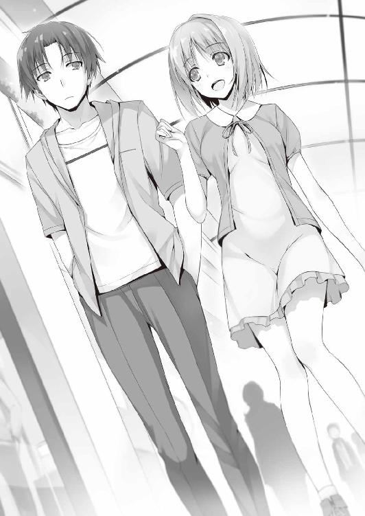

| ようこそ実力至上主義の教室へ 2 <ようこそ実力至上主義の教室へ> (MF文庫J) | |
| 衣笠 彰梧 & トモセシュンサク | |
| KADOKAWA / メディアファクトリー (2015) | |

ようこそ実力至上主義の教室へ２
衣笠彰梧

本作品の全部または一部を無断で複製、転載、配信、送信したり、ホームページ上に転載することを禁止します。また、本作品の内容を無断で改変、改ざん等を行うことも禁止します。
本作品購入時にご承諾いただいた規約により、有償・無償にかかわらず本作品を第三者に譲渡することはできません。
本作品を示すサムネイルなどのイメージ画像は、再ダウンロード時に予告なく変更される場合があります。
本作品は縦書きでレイアウトされています。
また、ご覧になるリーディングシステムにより、表示の差が認められることがあります。
○佐倉愛里の独白
人と触れ合うのが苦手だ。
人の目を見て話すのが苦手だ。
人が集まっているところで過ごすのが苦手だ。
いつからそれらを苦手と思うようになったのか、それはもう覚えていない。
ただひとつ確かなことは、人は一人では生きていけないということ。
どれだけ孤独を愛そうとしても、私は私だけで生きていくことなど到底出来はしない。
だから私は、一つの方法に辿り着いた。
それは偽りの仮面を被って、本当の自分を隠して生きること。
その時だけ私は、私じゃなくなって、私になることができる。
この真っ暗な寂しい世界の中で、生きていくことが出来る。
世界は綺麗なことばかりじゃない。そんな当たり前のこと、誰もが分かっていながら、それでも心のどこかで綺麗な世界を望んでいる。ちょっとした矛盾。
誰か......誰でもいいから教えて欲しいことがあるの。
皆も私と同じように、誰かの前では偽りの仮面を被っているの？
それとも皆は分け隔てなく、本当の自分を見せているの？
人との繋がりを持たない私には、その答えを知る方法がない。
だから今日も一人きり。
私は一人で大丈夫。
私は孤独で大丈夫。
私は───
私は───心の底から、心を通わせることが出来る人が欲しい。
そして今日も私は、一人静かに目を伏せ続ける。
○波乱の幕開けは突然に
最悪のタイミングだ。
自撮りポイントを探していた私が見つけたのは、まさに事件現場。小さな名探偵も固唾を呑んで見守るしかない緊迫した状況だった。事の発端は数十秒前、些細な言いがかりが相手を挑発する激しい暴言に変わり、たちまち殴り合いに発展してしまった。いや、殴り『合い』は正確じゃない。床に倒れ込み痛みを堪える３人の男子生徒たち。それを見下ろす真っ赤な髪の男子生徒。勝負の行方はあまりに一方的過ぎた。
殴った右手の拳には、負傷した相手の血が僅かに付着しているのが見て取れた。人生で初めて遭遇する本格的な喧嘩の場面。小学生の時、クラスの男の子同士が喧嘩して服を引っ張ったり腕を抓ったりするところは見たことがあったけど、それとはわけが違う。この場の張りつめた空気の重さが全てを物語っていた。
私は恐怖を感じながらも、ほぼ無意識のうちにその情景をデジカメのレンズで捉えていた。無音で切られるシャッター。撮った後で自分は何をやっているんだと思ったけれど、パニックの最中思考は上手くまとまらない。
私は一刻も早くこの場所から立ち去りたかった。でも、脳がまともに機能していないせいで足は言うことをきかず、金縛りにあったように動かなかった。
「へへ、こんなことして......タダで済むと思ってんのかよ、須藤っ」
辛うじて上半身を起こした男子が、怯えながらも必死な抵抗を見せる。
「笑ってる場合かよ。３人がかりでそのザマなんてダセエなおまえら。いいか？ 二度と俺に関わるなよ。次はこんなもんじゃすまさねえぜ」
半ば戦意喪失した生徒の胸倉を掴み、須藤くんは顔を近づける。目と目、その距離数センチ。今にも食い殺しそうな勢いで凄みを効かせると、根負けした男子は視線を逸らした。
「ビビりやがって。人数がいれば勝てるとでも思ったかよ」
鼻で笑った須藤くんが、地面に落としたボストンバッグを拾い上げる。
戦意を無くした３人にはもう興味がないのか、須藤くんは背中を向けて歩き出す。
その瞬間、私の心拍数は急激に上昇した。当然だ。私が隠れている方向へ須藤くんが歩き出したからだ。この特別棟から出るルートは限られている。私が上ってきた階段から降りるのがセオリーだ。逃げるタイミングを逸し、私の体は思うように動かない。事故に遭う瞬間体が硬直するって聞くけど、まさにその状態だ。
「時間を無駄にしたぜ。練習後で疲れてんだから勘弁してくれよ」
距離が詰まってくる。僅か数メートル先。
「......後で後悔すんのはおまえだぜ、須藤」
男子生徒の一人が、声を絞り出すように須藤くんを呼び止めた。
その瞬間、私の呪縛がゆっくりと解かれ始める。
「負け犬の遠吠えほどみっともないものはないな。何度やっても俺には勝てねーよ」
その言葉は虚勢ではなく、明らかに自信に裏付けされてのものだった。事実、須藤くんは３対１の圧倒的に不利な戦局を、無傷で制圧した。
明日で７月を迎える今は、もう夏が顔を覗かせ始めていて蒸し暑い。
その場でジッと動けなかった私の首筋に、僅かに汗がじわりと垂れた。
私は慌てず、冷静に、そして静かにその場を立ち去ることを決める。
今ここで誰かに見つかって巻き込まれるのだけは嫌だった。
そうなれば、私の平穏な学校生活に暗雲が立ち込めてしまうから。
ゆっくりと、けれど迅速に動き出しその場を後にする。
「誰かいるのか......？」
無意識に逃げたい気持ちがはやったのか、微かに空気が変化する。それを気取られ、須藤くんが寸前まで私のいた場所をのぞき込む。だけど間一髪私は階段を下りることに成功する。
あと１秒か２秒遅ければ後ろ姿を見られていたかも知れない。
１
Ｄクラスの朝はいつも賑やかだ。本来真面目とは程遠い連中が多いからだ。
だが今日はいつにも増して浮き足立っていて騒がしい。その理由は言わずもがな。今日は入学以来、久しぶりにポイントの支給があるかも知れないのだ。
オレが通う学校『高度育成高等学校』は他に例を見ないＳポイントと呼ばれるシステムを採用しているのだが、そのことについて少し説明しよう。
オレは学校から支給されている携帯電話を取り出すと、プリインストールされている学校のアプリを起動し、そこで学籍番号とパスワードを入力しログインを行う。そしてメニューの一つである『残高照会』を行った。
残高照会からは様々なことが出来る。現在所持している自分のポイントを確認したり、クラスが保有するポイントの確認。更には自分のポイント残高から別の生徒にポイントを付与する機能も備わっている。
ポイントは２種類に分類されており、そのうちの一つは末尾に『cl』と明記されている。これは class の略称として広まっていて『クラスポイント』と呼ばれている。生徒個人に割り当てられたものではなく、クラス単位で所持しているポイントのことだ。６月時点で残高に表示されたオレたちＤクラスのポイントは０cl。ポイントは無しだ。そしてもう一つには『pr』と明記されている。それは private の略称で、個人個人が所有するポイント......プライベートポイントだ。
毎月１日にcl、つまりクラスポイントの数字×１００倍のプライベートポイントが生徒たちに振り込まれる、という仕組みになっている。
このプライベートポイントは、日用品を買ったり食事をしたり、あるいは電化製品を買ったりと、学校においてお金の役割を果たしており、非常に重要なものだ。
敷地内では現金が使えないため、このプライベートポイントを所持していなければ、強制的にお小遣いなしで日々の生活を送らなければならない。
Ｄクラスはクラスポイントが０のため、毎月振り込まれるはずのプライベートポイントも必然的に０となり、お小遣い無しでのやり繰りを強制されている。
もっとも、入学したときにはクラスポイントは１０００支給されていた。
それが維持できていれば毎月10万円貰える状態だったのだ。ところが、厄介なことにこのクラスポイントは日々増減する。授業中の私語やテストの点数が悪いなど、様々な要因でポイントが削られていく。結果、Ｄクラスは５月の頭にクラスポイントを０にしてしまったと言うわけだ。悲しいかな、７月１日今現在までそれは続いている。
そしてクラスポイントは毎月の支給額の他に、クラスの優劣を決める役割も担っている。クラスポイントの数値が高い順に、Ａ～Ｄクラスへと割り振られているのだ。
もし、オレたちＤクラスがＣクラスを凌ぐクラスポイントを得られたなら、恐らくその次の月からＣクラスへと上がることが出来るだろう。そして最終的にＡクラスに辿り付いて卒業を迎えることが出来れば、自らの望む進学先、就職先を手にすることが可能になる。
当初この制度を聞いた時、大切なのはクラスポイントを貯めることだと思っていた。プライベートポイントをどれだけ貯めたところで自己満足にしかならないと。
だけどその考え方は、中間テストの点数を買えたことから一変した。
少し前のテストで、オレは惜しくも赤点を取ってしまった須藤の点数を学校側に売ってもらうという作戦に出た。それがあっさりと学校側に認められたことから見ても、Ｄクラスの担任である茶柱先生の言葉は冗談じゃないんだと分かる。
『この学校では、学校と生徒の契約において、原則ポイントで買えないものはない』
すなわち、学校においてプライベートポイントを持つということは、必要に応じて状況を有利に運ぶことが可能になることを意味している。
その気になればテストの点数以上のものを入手することも出来るかも知れない。
「おはよう諸君。今日はいつにも増して落ち着かない様子だな」
ホームルームの開始を告げる鐘の音と共に、茶柱先生が入室してきた。
「佐枝ちゃん先生！ 俺たち今月もポイント０だったんですか!? 朝チェックしたら１円も振り込まれてなかったんだけど！」
「それで落ち着かなかったわけか」
「俺たちこの１か月、死ぬほど頑張りましたよ。中間テストだって乗り切ったし......なのに０のままなんてあんまりじゃないですかね！ 遅刻や欠席、私語だって全然だし！」
「勝手に結論を出すな。まずは話を聞け。池、確かにおまえの言うように今までとは見違えるほど頑張ったようだな。それは認めよう。お前たちが実感を持っているように学校側も当然それを理解している」
諭すように言われ、池は口を噤んで椅子に腰を下ろした。
「ではさっそく今月のポイントを発表する」
手にした紙を黒板に広げてポイント結果がＡクラスから順に公開されていく。
Ｄを除く全てのクラスポイントが、先月と比べ１００近く数値を上昇していた。
Ａクラスに至っては、１００４という入学時を僅かに上回る結果を付けている。
「......あまり嬉しくない展開ね。まさかもうポイントを増やす方法を見つけた、とか？」
隣の席の住人、堀北鈴音は他クラスのことばかり気になっている様子だったが、池たちＤクラスの大半の生徒は、他のクラスのポイントなど気にしていない。肝心なのは自分たちにクラスポイントがあるのかどうか。その一点だけだ。
Ｄクラスの表記には───87ポイント。そう記されていた。
「え？ なに、87って......俺たちプラスになったってこと!? やったぜ！」
ポイントを見つけた瞬間、池が飛び跳ねる。
「喜ぶのは早いぞ。他クラスの連中はお前たちと同等かそれ以上にポイントを増やしているだろ。差は縮まっていない。これは中間テストを乗り切った１年へのご褒美みたいなものだ。各クラスに最低１００ポイント支給されることになっていただけにすぎない」
「そういうことね。急にポイントが支給されるなんておかしいと思ったわ」
Ａクラスを目指す堀北にとって、入学以来となるクラスポイントの所持は喜ばしいことではなかったのか、笑顔は無い。
「がっかりしたか堀北。まあ、クラスの差が余計に開いてしまったからな」
「そんなことはありません。今回の発表で得たこともありますから」
「なんだよ得たことってさ」
池が立ったまま堀北に聞く。周囲の視線を集めた堀北は、答える気になれなかったのか黙り込んでしまった。それを見ていたクラスの中心人物、平田洋介が代わりに答える。
「僕たちが４月、５月で積み重ねてきた負債......つまり私語や遅刻は見えないマイナスポイントにはなっていなかった、ということを堀北さんは言いたかったんじゃないかな」
頭の回転が速い平田は迷わずそう答えた。お見事。的中だ。
「あ、そっか。１００ポイント貰ってもマイナスが沢山残ってたら、０のはずだもんな」
分かりやすい説明に納得した池が、やったぜ、と大げさに両手を上げる。
「あれ？ でもじゃあ、どうしてポイントが振り込まれてないんだ？」
至極当然の疑問に原点回帰した池が、茶柱先生を見る。
８７００のプライベートポイントが振り込まれていなければおかしいことになる。
「今回、少しトラブルがあってな。１年生のポイント支給が遅れている。おまえたちには悪いがもう少し待ってくれ」
「えーマジすかあ。学校側の不備なんだから、なんかオマケとかないんですかあ？」
生徒たちからも同様に不平不満の声が上がる。無いと思っていたポイントがあると分かった途端、態度が豹変した。87ポイントでもあると無いとでは雲泥の差だからな。
「そう責めるな。学校側の判断だ、私にはどうすることもできん。トラブルが解消次第ポイントは支給されるはずだ。ポイントが残っていれば、だがな」
茶柱先生の何やら意味深な言葉が耳に残った。
２
昼休みに突入すると、生徒たちは各々自由に昼食をとるため行動を起こし始める。
だが最近、実は中途半端に友達が出来始めたこの時期が、一番学校生活において大変だと身をもって体感している。例えば櫛田桔梗。彼女は男女共に友達が多く人気も絶大で、直接誘われることはもちろん、電話やメールでも誘いがひっきりなしに来る。いつも応えきれずに止む無く断ったり、大勢と食べに行くなんてリアルライフを繰り返している。
片や女子には不人気なものの、池や山内たちは親しくなった男子たちとほぼ毎日のようにご飯を食べているようだ。その中には須藤や本堂の姿もある。
何が言いたいかというと、オレはどこにも属しきれていないということ。
櫛田とも友達と言えば友達だし、池や山内たちとも友達だ。どちらとも時折食事を一緒することはあるが、それはけして高い頻度とは言い難い。大体向こうから『昼飯どう？』とか『放課後遊ばないか？』という声がかかって初めて成り立つ関係だ。
これが、入学したての頃は気にならなかった。友達が出来る前、つまり声をかける相手もかけてくれる相手もいないから必然一人であることが普通だった。
ところがこうした時期になると、友達はいるのに一人という不可思議な現象が起こる。
この現象......体験してみると実に居心地が悪い。修学旅行の話し合いを欠席したら、どこのグループにも呼ばれてなくて泣きたくなった、というような展開もこの先大いにあり得る。友達は友達でもオレは低ランクの友達なのか、あるいは友達だと思っていたのはオレの方だけなのか？ なんて妄想まで。
そわそわと落ち着かず、思わず池たちの方を見てしまう。オレはここにいるぞ、誘ってくれてもいいんだぞ。そんな自分勝手な淡い期待を込めての眼差しだ。
そしてそんな自分に自己嫌悪し、往生際が悪いぞと自分を戒め視線を逸らす。
情けない話そんなことを連日繰り返しているのだ。
「まだ馴染みきれてないのね。相変わらず哀れよ綾小路くん」
隣人は冷ややかな目で彷徨うオレを見つめる。
「......お前はすっかり孤独が板についたみたいだな」
「お陰さまで」
嫌味のつもりだったが、堀北は素直に受け止める。
クラスメイトの大半はグループを作っているが、こいつのように一人でいる生徒も少なからず存在するのが、オレの唯一の心の拠り所だ。
堀北だけでなく、高円寺も大半の時間を一人で過ごしている。入学当初の高円寺は食堂で他クラスや他学年の女子と食事を共にするという俄かには信じられない行動を起こしていたが、ポイントが不足してからは大体教室で過ごしていた。
高円寺コンツェルンという日本有数の企業、その社長の一人息子は、孤独が大好きと言うより自分大好きな人間のため他人への関心が薄い。
自分が一人でいるという状況を全く苦にしていない姿勢はちょっとだけ尊敬する。
今日も今日とて、手鏡で自分の容姿チェックに余念がないようだった。
他にも、メガネをかけた大人しい女子が居る。一時期胸が大きいとかで池たちが騒いだ時期があったが、地味故に話題はすぐに去ってしまい今は誰も関心を持っていない。そんな彼女はいつも一人で過ごしていて、誰かと話しているところは一度も見たことがない。
案の定今日も背中を丸めお弁当を食べているようだった。数少ない手作り派だ。
そして隣の住人も、鞄から弁当を取り出してお弁当包みを広げる。
堀北は最近、食堂はあまり利用せず自分で手作りの弁当を持ち込んでいた。
「弁当作る手間と材料費、バカにならないんじゃないか？」
贅沢な内容とは言えないが、学校の食堂なら無料で食べられる定食、ポイントを失った者たちに対する救済措置が用意されている。手作り弁当のメリットであるコスト面は０に抑えられるのだから、そっちを利用した方が時間もポイントも節約になる。
「知らないのね。スーパーにも無料で提供されてる食材があるのよ」
「もしかして、それで作ってるのか？」
堀北は否定せず弁当箱を開ける。肉類や油ものはあまりなかったが十分おいしそうだ。
「文武両道に合わせて料理まで得意なのか。性格に似合わず器用だよな」
「料理くらい本やネットを見れば誰でも作れるわ。必要な器具も寮に揃っているし」
堀北は余計なひと言に触れることも自分の才能に驕ることもなく、サラッと流して箸を取り出した。出来て当然と思っているからこその対応だ。
「でも、何でわざわざ手作りなんだよ」
「学食は騒々しいもの。ここなら落ち着いて食べられるでしょう？」
入学当初は売店で購入してきたパンなどで昼食にする生徒たちも多かったが、今はポイントの兼ね合いもあって無料の定食を食べに食堂へ向かう生徒たちが圧倒的に多い。気が付けば教室は数名の生徒を残すのみだ。
堀北には願ったり叶ったりの環境ということか。ってもう池たちはいなくなっていた。
「またビックウェーブに乗り損ねたか......」
「いつも海を眺めてるだけで、漕ぎ出すサーフボードも覚悟も持ってないでしょう？ それで波に乗れなかったと発言出来るなんて、あなたは大層な大物ね」
その見事な返し、反論できないから勘弁してほしい。
３
放課後は、昼と違って対人関係で悩むことがないから意外と楽だ。
さっさと寮に帰ってしまえば目立つこともないし、帰宅組も少なくない。
忍者の如く人ごみに紛れ込む様は、一見の価値有りだ。仲良しグループの後ろに貼り付けば、然も友達の一員として歩いているように見せかけることも出来る。
「......虚しい」
上手く友達を装えたところでただの自己満足な上、そもそもオレの交友関係を気にしている人間などこの学校には存在しないんだった。
「須藤。お前に少し話がある、職員室まで来てもらおうか」
さっさと教室を出ようとする須藤を、茶柱先生が呼び止めた。
「は？ 何で俺が。これからバスケの練習なんすけど」
気怠そうにバッグを開け、ユニフォームを少し取り出して見せる須藤。
「顧問には話をつけた。来るも来ないもお前の自由だが、後で責任は取らんぞ」
脅迫とも取れる茶柱先生の警告に強気な須藤も少し身構えた。
「なんなんだよ......すぐ終わるんだろうな？」
「それはお前の心がけ次第だ。こうしてる間にも時間は過ぎていくぞ」
そう言われてしまっては、ついて行かざるを得ないようだった。
露骨な舌打ちをした後、茶柱先生の後ろについて教室を出ていく。
「変わったようで変わってないよな、須藤の奴。退学しといた方がよかったんじゃ？」
誰かは分からないが、クラスの中からそんな呟きが聞こえてきた。
期末テストの時はグループこそ幾つかに分かれていたが、クラス一丸となった気もしたんだけどな。どうやらそれは気のせい、まやかしの類だったらしい。
「あなたもそう思う？ 須藤くんが退学しておけばよかったと」
言いながら、帰るために教科書を鞄に仕舞う堀北。毎日律儀に教科書を持ち帰り自室で予習復習をする生徒は殆どいないだろう。真面目すぎるのも考え物だな。
「オレは別に。おまえこそどうなんだよ堀北。須藤に手を貸した一人として」
「そうね......。クラスにとってプラスとなるかどうか、それがまだ未知数なのは確かね」
隣の席の住人、堀北は、淡々とした感情で答える。
期末テストで須藤が退学の危機にあった際、あいつを助けるために自らの点数を下げたり、ポイントを消費してテストの点数を購入したとは思えない態度だ。
オレが席を立つと同時に、堀北も立ち上がり二人で教室を後にする。いつからか寮まで時々一緒に帰るようになった。昼食もバラバラだし遊んだりもしないのに不思議だ。共通する点は、どちらも基本的に寄り道などせず帰ること。きっとそんな理由なんだろう。
「少し気になるわね。今朝先生が言っていたこと」
「ポイントの振り込みが保留になったことか？」
「ええ。トラブルがあったらしいけれど、それが学校側の問題なのかそれとも私たち生徒側の問題なのか。もし後者なら......」
「考え過ぎだ。最近は特に問題なんかもなかった。それに担任が言ってただろ。Ｄクラスだけがポイントの支給を止められてるわけじゃないと。単純に学校側の問題だって」
強いて懸念材料があるとしたら、１年生だけが支給を見送られているという部分だが、それにＤクラスが絡んでる確率は相当低い。......はずだ。
「そうあってほしいものね。トラブルは必ずポイントにも直結するから」
堀北は日々、どうすればポイントを獲得できるかを考えている。当然プライベートポイントではなく、Ａクラスに上がるためのクラスポイントをだ。それが無駄なことだとは言わないが、現状雲をつかむような話であることは言うまでもない。
けど、ちょっと期待している面もある。もしも堀北がポイントを上昇させる攻略法を発見出来れば、それはＤクラスにとって大きなプラス要因になるからだ。更に、クラスメイトからの信頼も上がり堀北に友達も出来る。まさにｗｉｎ－ｗｉｎ。
「そう言えば、たまにはチャットに参加したらどうだ？ 堀北だけずっと未読だぞ」
携帯を取り出し、グループチャットのアプリを起動して見せる。
期末テストを乗り切ったオレたちはグループチャットに堀北を招待した。人との対話が嫌いな堀北もチャットならば参加してくれるんじゃないかという櫛田の配慮だったが、その想いも虚しく今のところ全くの不参加だ。
「全く興味ないもの。通知もオフにしてあるから」
「左様か」
どうやら最初から参加するつもりはないらしい。アプリを削除せず残しているのは、消すと櫛田たちに通知が行き、あれこれ聞かれるからだろう。
参加するかしないかは堀北の自由だからこれ以上余計なことは言えない。資格もない。
「綾小路くんこそ随分と饒舌になったものね」
「そうか？ 最初からこんなもんだったと思うが」
「微かにだけど、変わってきているわよ」
入学当初から変わってないつもりだったが、自分でも気が付かないうちに微弱ながら変化していってるのかも知れない。やっぱり慣れなんだろうな。
特に堀北とは妙にウマが合う、いや、ウマは全然合ってないんだが、妙なフィーリングがあるというか傍にいて困る感じがしない。これが他の女の子だったなら、オレは満足に会話のキャッチボールなんかできず、緊張のあまり右往左往していただろう。
だからつい、素に近い自分で物事を話してしまうのかも。
何より多少の沈黙が訪れても、悪い空気にならないというのは関係上一番ありがたい。
「何か変わるキッカケでもあった？」
「どうだろうな......。理由を考えるとしたら、単純に学校での生活も慣れて来たし友達も増えたからだろ。あと櫛田の存在も大きかったんだろうな」
男同士だけだと、ちょっとまだ口数が少なくなったり場が持たないと感じることがある。
でも櫛田がいれば常に誰かが喋っているし、嫌な空気に全くならないのだ。
「あなたは櫛田さんとも仲良くしていたわね。彼女の裏の顔を知ってて気にならない？」
「堀北を嫌いだって言い放ったことには驚いたけどな。けど人間なんて誰かを好きになったり嫌いになったりするのが当たり前だ。気にしても仕方ない。堀北も割り切って櫛田とは表面上だけでも仲良くしたらどうだ？」
「なるほど、そうかも知れないわね。私も綾小路くんのこと嫌いだけどこうして普通に会話しているし。気にすることではなかったかもね」
「おい......」
何だろう、面と向かって言われると物凄く傷つくぞ。
「そう言うことよ。他人が他人を嫌っても平然としていられるけれど、いざ自分が嫌いだって言われたら少しは思うことがあるでしょう？」
「......試したのか」
どうかしらねとわざとらしく髪をかき上げる。絶対にわざとだ。
「邪魔をするつもりは無いけれど櫛田さんと私は水と油。交わることは無いと思う」
つまり櫛田がいるグループチャットにも必然不参加って意味だろう。
「そもそも何で櫛田は堀北が嫌いなんだろうな？」
この学校に入学してから接点らしい接点はなかった。いつ堀北を嫌い始めたのか。
櫛田はクラス全員と仲良くなることが目標だと言っていたのに。
「さあ。そんなの私に分かるわけもないでしょう？」
それはそうなんだが。どうにも堀北と櫛田の間には触れちゃいけないものがあるような気がしてならない。
「そんなに気になるなら自分で聞いてみたら？ 彼女に直接」
また無茶なことを仰る。
櫛田桔梗という女の子は普段は天使だが、オレは偶然違う側面を見てしまった。
いつもの優しい笑顔や口調からは想像できない、威圧的で暴言を吐いていた姿を思い出す。恐らくその姿は堀北も知らない。
「止めとく。オレは今の櫛田で十分だからな」
「その言い方、物凄く気持ち悪いわよ？」
「......だな」
自分で言っておいてなんだが、気持ち悪いと思った。
４
寮の食堂でせせこましい夕食を終え自室に戻る。携帯を開き残高を確認した。ディスプレイに表示された残高数字は８３２０pr。今朝から変動はない。
入学初日に10万ポイントあったことを考えると非常に少ない額だ。
過去問入手と須藤のポイント購入で大きく消費してしまっている。
「87ポイントでも支給されれば、かなり大きいんだけどな」
円に換算すれば、８７００円。十分とはいえないまでも大きなお金になる。
「助けてくれ綾小路！」
ベッドの上で携帯を弄っていると突如部屋の扉が開いた。血相を変えた須藤だった。
「......いきなり何だよ。というか、どうやって入ってきたんだよ」
オレは部屋に戻った時しっかりと鍵を閉めた記憶がある。いつもそうして習慣づけているから掛け忘れたとは思えない。壁を蹴破って来たんじゃないだろうな？
念のため扉を確認するが、目立った外傷もなく綺麗なものだった。
「ここは俺たちのグループが集まる部屋だろ？ だから池たちと相談して部屋の合鍵作ったんだ。知らなかったのか？ 俺だけじゃなく当然他の連中も持ってる」
手にした部屋のカードキーを手の平で、くるくると回す。
「物凄く重大かつ恐ろしい事実をオレは今知ったぞ......」
どうやらオレの部屋は、既に何人も無断で侵入できる状態になっているらしい。
「つかそんなことはどうでもいい。マジやべえんだって！ 助けてくれよ」
「全然どうでもよくない。鍵返してくれ」
「は？ なんでだよ。俺がポイント払って買ったんだ。俺のだろ」
その理屈が通ってるようで通ってない反論はなんだ。一歩間違えば犯罪、既に犯罪か。
友達なら何をやっても許されるというものではない。
「相談や悩みごとなら池や山内にしたらどうだ？」
「あいつらはダメだ。バカだからな」
言いながら須藤はドカッとフローリングに腰を下ろした。
「カーペット買おうぜ。ケツが痛くて仕方ねえ」
インテリアに金を回せるほどのポイントは余っていない。
そもそも、グループが集まる場所という割には、打ち上げ以来一度も集まっていないし。無理にカーペットを購入しても、それを踏むのはオレの尻だけになってしまうだろう。その絵面を想像するだけで非常にシュールだ。
一応お茶くらい出してやるかと立ち上がると、来訪者を告げるチャイムが鳴る。
入り口からひょっこりと顔を覗かせたのは櫛田、Ｄクラスのマドンナだった。いつみても可愛い。部屋に上がると床に座った須藤を見つける。
「あれ、もう須藤くん来てるんだ」
「念のため聞くけど、ひょっとして櫛田も合鍵所持者か？」
「そうだよ？ だって集まるって目的で......もしかして綾小路くん知らなかったとか？」
鞄から取り出して鍵を見せてくれる。見た目での区別はつかなかったが、オレの部屋の鍵なんだろう。どうやら櫛田はオレの許可の下受け取ったと思っていたらしい。
「あの、これ......返しておくね？」
申し訳なさそうにオレの部屋の合鍵を差し出してきた。
「いいよ。櫛田からだけ回収しても意味ないしな。須藤は手放す気がないらしい」
櫛田が持ってる分には別にいいか。いや、どちらかと言えば、脳内妄想的には彼女を持った気分とも言えなくもないし。男は現金な生き物である。
「櫛田も来たことだし、本題に移ってもいいか？」
「こうなったら仕方ないよな......。それで相談ってのは？」
二人押しかけてきてしまっては、もう無下に追い返すことも出来ない。
須藤は神妙な面持ちになると、ゆっくりと話し始めた。
「俺が今日担任に呼び出されたのは知ってるよな？ それで、その......実はよ......俺、もしかしたら停学になるかも知れない。それも長い間」
「え......停学？」
思いがけない話だ。最近の須藤は入学当初と比べれば相当生活態度は改善されていた。授業中の居眠りや私語もほとんどなく、部活も順調だったはず。
「もしかして、先生に悪口言っちゃったとか？」
今日も須藤は茶柱先生に部活に行くのを止められ不服そうにしていた。
そのあたりでつい、カッとなって暴言を吐いてしまったのかも知れない。
「言ってねえよ」
「ということはアレか？ 胸倉を掴んで殺すぞと恫喝したとか？」
「んなことも言ってねえよ」
すかさず否定した須藤。流石に違ったか。
「考え方によっちゃ、もっと上回るかも知れねえ......」
今言った二つも結構深刻な問題だと思うんだが、それを上回るって......。
「あれだよ綾小路くん。先生に殴る蹴るの暴行を加えた上に唾を吐きかけたんだよ」
「それは酷いな。......っていうか櫛田の妄想が酷すぎる......！」
「あはは、冗談だよ。さすがにそこまではしないよね。須藤くんも」
すぐ否定するはずの須藤が、櫛田のジョークにびっくりして突っ込み損ねていた。
それだけ心に余裕がない証拠でもある。
「何があったの？」
「実は俺、昨日Ｃクラスの連中を殴っちまってよ。それでさっき停学にするかもって言われてよ......。今、その処分待ちだ」
櫛田も須藤の報告に驚き思わずこっちを見てきた。オレも一瞬では事態が上手く呑み込めなかった。トラブルに須藤が巻き込まれていたとは。懸念していたことが的中したか。
「殴ったって......それ、え、どうしてなの？」
「言っとくけど俺が悪いわけじゃないんだぜ？ 悪いのは喧嘩を吹っかけてきたＣクラスの連中だ。俺はそれを返り討ちにしただけだっての。そしたらあいつら俺が喧嘩を売ったことにしやがったんだ。虚偽申告って奴だ」
どうやら須藤もまだ頭の整理がついていないらしい。言っていることの意味は何となく分かるものの、殴った原因や詳細な経緯なんかはしっかり伝わってこない。
「ちょっと待って須藤くん。もう少しゆっくり話してくれないかな？」
櫛田も落ち着くよう促し、殴ることになった発端を聞き出そうとした。
「悪い、ちょっと端折り過ぎたか......」
呼吸を落ち着け、改めてそこに至るまでの経緯を話し始める須藤。
「顧問の先生から、夏の大会でレギュラーとして迎え入れるっつー話をされたんだよ」
バスケが上手いとは聞いてたけど、もうレギュラーの話が出てるのか。
「レギュラーって凄いじゃない須藤くん！ おめでとう！」
「まだ決まったわけじゃないんだけどな。その可能性があるっつーだけで」
「それでも凄いよ。だってまだ入学したばっかりなのに」
「まあ、な。実際一年でレギュラー候補に選ばれたのは俺だけでよ。そんで絶対レギュラー取ってやるってな。その帰りだ。あいつら......同じバスケ部の小宮と近藤が俺を特別棟に呼び出しやがった。話があるとかなんとかで。無視してもよかったんだが、バスケ部の二人とは部活中にも度々言いあってたからいい加減ケリつけてやろうと思って。もちろん話し合いでだぜ？ そしたら石崎ってヤツがそこで待ってやがったんだ。小宮と近藤はそいつらのダチでよ、Ｄクラスの俺がレギュラーに選ばれそうなのが我慢ならなかったんだと。痛い目みたくなけりゃバスケ部を辞めろと脅してきやがった。そんでそれを断ったら殴り掛かってきたから、やられる前にやったってことだ」
駆け足な説明ではあったが一連の流れは伝わってきた。話した本人にも手ごたえがあったのかちょっと満足したような様子だ。
「それで須藤くんが悪者にされちゃった、と」
呆れながら頷く。最初に仕掛けてきたのはＣクラスの生徒たちで、須藤にバスケ部を辞めさせるつもりで脅迫したが失敗、実力行使......つまり暴力行為に及んだ。しかし喧嘩慣れしてる須藤には全く歯が立たず返り討ちにあった。当然そいつらは自分勝手に腹を立ててキレたことだろう。だがこのままやられっぱなしでいるつもりはなく、翌日、自分たちが須藤に襲われ殴られたと嘘をついて学校側に訴えたというのが、一連の流れのようだ。
「Ｃクラスから起こした問題なら須藤くんは悪くないよね」
「だろ？ マジでわけわかんねーよ。教師の野郎信じもしねーし」
「私たちで明日茶柱先生に報告しようよ。須藤くんは悪くないって」
事はそう単純じゃないはずだ。須藤も今オレたちに話した事実を当然そのまま学校側に話したはず。それでも処分待ちになっているのは明確な証拠がないから受け入れて貰えなかったということだろう。
「学校側は今の須藤の話を聞いてなんて言ったんだ？」
「来週の火曜まで時間をやるから、向こうが仕掛けてきたことを証明しろとさ。無理なら俺が悪いってことで夏休みまで停学。その上クラス全体のポイントもマイナスだってよ」
学校側からの至れり尽くせりな対応が待ち構えているようだ。でも須藤が焦っているのは停学になることやポイントがマイナスになることよりも、バスケのレギュラーが白紙になることだろう。青春そのものを奪われるのは我慢ならないといった様子だ。
「どうしたらいいんだよ俺は」
「須藤くんが嘘をついてないって先生に訴えていくしかないんじゃないかな？ だっておかしいよ、何も悪くない須藤くんの話が信じて貰えないなんて。そうだよね？」
同意を求めて来た櫛田には悪いがオレは良い返事をしてやれなかった。
「どうかな......そう話は単純じゃないと思うぞ」
「どうかなって何だよ。まさかおまえ俺を疑ってんのか？」
「少なくとも学校側は信用してないわけだろ？ たとえ櫛田だろうと、同じクラスの人間が須藤の無実をどれだけ訴えたって、ポイントを減らされたくないだけの嘘と思われたって不思議じゃない」
「それは......そうかもしんねえけどよ」
それに今回のトラブルは、どちらが仕掛け側かを探せば終わる話じゃないだろう。
恐らく３人組の方にも何らかの、例えば１週間くらいの停学処分は科せられるはずだ。
幾ら殴られたと言っても向こうは３人。須藤に襲われた確実な証拠が無い以上それくらいの罰則は必ず受けるはずだ。そしてそれが意味することはたった一つ。
「向こうが悪いとしても、須藤が一定の責任を問われる可能性は十分あるってことだ」
「は？ 何でだよ。正当防衛だろ？ なあ!?」
須藤は納得がいかないとテーブルを強く拳で叩いた。音に驚いた櫛田の両肩が跳ねる。
「悪ぃ、ちょっと取り乱した」
櫛田の若干怯えた表情に、須藤は申し訳なさそうに謝った。
「ねえ......どうして須藤くんが責任を問われちゃうの？」
「須藤が相手を殴り相手は須藤を殴れなかった。その部分は大きいと思う。正当防衛って考えてるよりもずっと難しいものだと思うぞ。相手がナイフや鉄バットで武装して襲ってきたならともかくそんなわけでもないんだろ？ 日頃から確執があったなら危険な目に遭うことは予知、予測できてたってことだ。正当防衛というのは、急迫不正の侵害に対して権利を防衛するための止むを得ない行為。つまり今回完璧に該当するとは思えない」
状況から察して、幾ばくかの配慮を受けるのが精いっぱいか。
「よ、よくわかんねーけど。向こうは３人だぞ３人。十分危ねーっての」
人数も考慮には値すると思うが、それでも今回のケースでは微妙なところだ。オレの想像なんかよりも学校側が人数に重きを置いて無罪としてくれるかも知れないけど。
それを期待して楽観視するのは危険だ。
「学校側も判断が難しいと思ってるからこそ数日間の猶予を設けたんだろうし」
今ある証拠......須藤に殴られた怪我が唯一の事件のキーだ。
「それで......殴っちゃった須藤くんを重く罰する、って方針なんだね」
「先に訴えた方の強みだな。被害者の証言には証拠能力がある」
「納得いかねえっつの。俺は被害者だ、停学なんて冗談じゃねえぞ。もしそんなことになったらバスケのレギュラーどころか今度の大会も出られねえ！」
Ｃクラスの連中は須藤を潰すために玉砕覚悟の作戦を仕掛けた。自分たちが多少制裁を受けてもレギュラーを白紙に戻せるならば構わない。そういう腹づもりに思える。
「Ｃクラスの３人に正直に話してくれるよう頼んでみようよ。悪いと思ってるならきっと罪悪感でいっぱいなんじゃないかな？」
「あいつらはそんなタマじゃねえよ。正直に話すわけがねえ。クソが......絶対許さねえ、雑魚どもが......！」
テーブルに置いてあったボールペンを拾い上げると、ベキッと真っ二つに折った。腸が煮えくり返る気持ちも分からなくはないが、それはオレのボールペンだ......。
「言葉で説明してもダメなら確実な証拠が必要だな」
「そうだね......。須藤くんが悪くないって証拠にできるものがあればいいんだけど......」
そんな都合のいいものがあれば苦労しないんだろうけどな。ところが、須藤は否定せず考え込むような仕草を見せた。
「あるかも知れないぜ。もしかしたら俺の勘違いかも知れないんだけどよ......。あいつらと喧嘩してた時妙に気配を感じたっつーか、傍に誰かいた気がするんだよな」
あまり自信はないようだったが須藤はそんなことを口にした。
「目撃者がいたかもってこと？」
「ほんと、何となくなんだけどな。確証はねえ」
目撃者か。もし一部始終を見ていたのならそれは好材料だ。けど場合によっちゃ須藤を更に追い込む結果にもなり兼ねない。例えば殴り倒した直後から目撃していた場合、須藤が先に仕掛けたと決定付ける一打にもなってしまう。
「......俺はどうすりゃいいんだよ」
頭を抱え込んでうな垂れる須藤。重い沈黙を嫌った櫛田が口を開く。
「須藤くんの無実を証明するためには、方法は大きくわけて二つ。一つは単純明快でＣクラスの男の子たちが自分の嘘を認めること。本当は須藤くんが悪いわけじゃないって認めさせるのが多分一番だから」
それが理想なのは間違いない。
「さっきも言ったがそれは無理だぜ。あいつらが嘘を認めることはねえ」
というより認められないだろう。学校側に嘘をついて他人を陥れようとしたと自白すれば、停学処分では済まないかも知れない。
「そしてもう一つが、今須藤くんが言った目撃者を捜すこと。もし須藤くんたちとの喧嘩を誰かが見てたなら、きっと真相究明の力になってくれるはずだよ」
今のところ現実的な案はそれくらいしかないよな。
「目撃者を探すつってもよう、具体的にどうやって探すつもりだよ」
「一人一人地道に？ もしくはクラス単位で聞いて回るとか」
「それで名乗り出てくれればいいけどな」
長くなりそうだと思ったオレは戸棚を物色する。入学して間もなくコンビニで買っておいたインスタントコーヒーとお茶のパックを取り出す。確か須藤はコーヒーが苦手だったな。予め常備してあるポットのお湯で１杯ずつ作り、テーブルに置いた。
「図々しいようだけどよ、今回の件......誰にも言わないで貰えねーか？」
コップを机に置いたまま、息を吹きかけ冷ます須藤が申し訳なさそうに言った。
「え......誰にもって......？」
「噂が広まるとバスケ部の耳にも入るだろ。それは避けたいんだよ。わかるだろ？」
「須藤、それは幾らなんでも───」
「分かってくれよ綾小路。俺からバスケ取り上げたら何も残らないんだよ」
両肩を掴まれ熱く説かれる。そりゃ噂は広がらないに越したことはない。暴力を振るったかもしれないと知られれば、当然快く受け入れられなくなるだろう。
「Ｃクラスの生徒たちは須藤くんが暴力を振るったって勝手に言いふらしちゃうんじゃないかな？ 自分たちに都合の良いようにさ」
それは考えられる話だ。こっちに都合の悪いことである以上、向こうは遠慮なく口外して回ってもおかしくない。マジかよと言った様子で須藤が再び頭を抱え込む。
「もしかしたらもうバレてんのか......？」
「いや、まだ今日の段階ではその話は学校側と当事者たちしか知らないんじゃないか？」
「どうしてそう思うの？」
「もしＣクラスの連中が言いふらすつもりなら、とっくにオレたちの耳に入っててもおかしくないってことだ」
学校側に報告が行って、放課後須藤に真相を確かめていた。
ということは、昼間の間に噂が駆け巡っていてもおかしくはなかったってことだ。
少なくとも今はまだ大きくは広がっていない。
「ひとまずは安心ってこと、かな？」
けどそれもいつまで続くか。緘口令を敷いてもいずれ外に飛び出していくのが噂だ。近いうちに必ず広まっていくはず。今、ひとつ言える確かなことは───。
「須藤くんはこの件、関わらない方がいいよね？」
櫛田もそのことは真っ先に理解したのか須藤に進言する。
「そうだな。当事者が動くと良くないだろうな」
オレもそれに合わせるようにして答えた。
「けどよ、おまえらに全部押し付けるなんて───」
「押し付けなんて思ってないよ。私たちは須藤くんの力になりたいだけなんだから。どこまで出来るかはわからないけど精一杯やってみるから。ね？」
「......わかった。お前らには迷惑かけるけど任せることにする」
自分が関わることで厄介なことになると理解できたようだった。
「んじゃ俺は部屋に戻るわ。今日は悪かったな、いきなり押しかけてよ」
「合鍵を作ってたこと以外は気にしなくていい」
返さねーけど、と須藤はポケットに鍵を仕舞う。今日からチェーンロックしよう......。
「櫛田もまた明日な」
「うん、ばいばい須藤くん」
どこか寂しそうな須藤を見送る。とはいっても数部屋隣なんだが。
「ってあれ。櫛田は帰らないのか？」
「綾小路くんにもう少し今日のことで聞いておきたくって。なんていうかあんまり乗り気じゃない？ 須藤くんのこと助けるの」
どこか不安げな瞳で俺を見上げる櫛田を思わず抱きしめたい衝動に駆られた。背筋を伸ばし邪悪な心を振り払う。
「そんなことはないけどオレに出来ることなんて何もないぞ。強いて言うなら須藤の話を聞いて相槌を打ってやることくらいだ。堀北や平田あたりなら的確なアドバイスができるだろうけどさ」
「そうかもだけど、須藤くんは綾小路くんを頼ってきたんだよ。堀北さんよりも平田くんよりも、池くんたちよりも先に話を持ってきたんだし」
「嬉しいやら嬉しくないやら」
「ふぅーん」
一瞬だけ冷めたような目を向ける櫛田にオレはちょっと困惑した。
そういえばオレは一度、櫛田に面と向かって嫌いだって言われてるんだよな。いつも優しく笑顔で接してくれるから忘れがちだが、その辺忘れないようにしないと火傷しそうだ。
「綾小路くんはもうちょっとクラスに溶け込む努力した方がいいかもね」
「一応努力はしてる。それが実ってないだけだ。今回の件も安請け合いで助けるなんて口にする度胸が無いだけだしな」
オレが日々昼飯を誰かと食いたくて悩んでるとは思ってもいないだろうな。
そう思ったが櫛田のことだ、それも把握済みなのかも知れない。
「櫛田は協力するんだよな」
「もちろん。友達だもん。綾小路くんは───どうするの？」
「さっきも言ったけど堀北や平田に相談するのが一番手堅いんじゃないか？ まあ須藤は平田を嫌ってるから、この場合は必然堀北になるが」
たとえ堀北でも、ズバッと解決できるような良案が浮かぶとは思えないけど。
「堀北さん協力してくれるかな」
「さあ。そればっかりは話してみないと。でもあいつだってＤクラスが没落するところを黙って見ている真似はしないだろ......多分」
ちょっと自信はなかった。なんせ堀北だからな。
「はぐらかされてるけど綾小路くんも協力してくれるんだよね？」
上手く他所に誘導したつもりだったが、しっかり戻って来た。
「......役に立たなくてもいいのか？ ってか役に立たないぞ？」
「そんなことないよ。きっと何かの役に立つはずっ、何かのっ」
明確に役立つ要素は口にしてもらえなかった。
「明日からどうしよっか。須藤くんは無駄だって言ってたけど、私は喧嘩した生徒たちに会いに行くのも一つの手だと思ってるの。実は小宮くんたちとは友達なんだ。だから説得できるかも。うーん、危ないかな......」
櫛田の中ではＣクラスの３人との話し合いの線が捨てきれないでいるようだった。
「リスクは高いな。喧嘩の発端は別として、学校側に訴えたのは向こうだ。簡単に振り上げた拳を下ろすなんてことはしない。というより出来ないだろ。実は須藤じゃなく自分たちから喧嘩を売りました、なんて」
嘘をついて学校側に証言をしている以上、安易に認めるとは思えない。もし虚偽の訴えをしたと学校側が知れば、Ｃクラスの生徒たちは重い罰を受ける。そんな愚かなことは絶対にしないだろう。彼らは振り上げた拳を下ろすことは出来ないのだ。
「じゃあ、やっぱり目撃者を捜すのが手堅いんだね」
それも説得と同じくらい難易度が高い。事件の詳細を表に出さず目撃者を捜すのは至難だろう。何か見なかったか？ なんて聞いていくのは途方もない時間と労力を要する。
今あれこれ考えていても結論は出ない気がする。
何か状況に変化でも出てくれば、話の流れも少しは変わってくるかもしれない。
○ウィークポイント
嫌なことは続くもの。翌朝ホームルームを迎えたオレたちに突き付けられたのは、いつもは最小限の言葉だけで教室を出ていくはずの茶柱先生による耳の痛い連絡事項だった。
「今日はお前たちに報告がある。先日学校でちょっとしたトラブルが起きた。そこに座っている須藤とＣクラスの生徒との間でトラブルがあったようだ。端的に言えば喧嘩だな」
ざわ、と教室の中が騒がしくなる。須藤とＣクラスが揉めたこと、責任の度合いによっては須藤の停学、そしてクラスポイントの削減が行われること。全て赤裸々に告げられる。
感情を全く表さない姿にはある種の美を感じられるほど、茶柱先生は淡々としている。
話す内容にはけして差別的なものはなく、あくまで学校側の中立的立場による説明だ。
「その......結論が出ていないのはどうしてなんですか？」
平田から至極当然の質問が飛ぶ。
「訴えはＣクラスからだ。一方的に殴られたらしい。ところが真相を確認したところ、須藤はそれは事実ではないと言った。彼が言うには自分から仕掛けたのではなく、Ｃクラスの生徒たちから呼び出され、喧嘩を売られたとな」
「俺は何も悪くねえ、正当防衛だ正当防衛」
悪びれた様子なく言い放つ須藤にクラスメイトは冷ややかな視線を向ける。
「だが証拠がない。違うか？」
「証拠って何だよ。そんなもんあるわけないだろ」
「つまり今のところ真実が分からない。だから結論が保留になっている。どちらが悪かったのかでその処遇も対応も大きく変わるからな」
「無実以外納得いかねーけどな。つかこっちが慰謝料貰いたいくらいだぜ」
「本人はこう言っているが、今現在信ぴょう性が高いとは言えない。須藤がいた気がするという目撃者が本当にいれば少しは話も変わってくるんだがな。どうだ、喧嘩を目撃した生徒がいるなら挙手をしてもらえないか」
淡々と話を進める茶柱先生。その問いかけに答える生徒はいない。
「残念だが須藤、このクラスには目撃者はいないようだな」
「......のようだな」
疑いの目を向ける茶柱先生に対し須藤はつまらなそうに目を伏せる。
「学校側としては目撃者を捜すために、今各担任の先生が詳細を話しているはずだ」
「は!? バラしたってことかよ！」
学校側としては仕方のないことかも知れない。須藤が冤罪だと訴え目撃者の存在を持ち出した以上、恐らく全学年、各クラスに詳細が通達されていることだろう。
事件のことを隠したかった須藤にとってはよくない状況だ。
「くっ......！」
早くも須藤の希望していた内々に事件を解決するプランは水泡に帰した。
「とにかく話は以上だ。目撃者のいるいない、証拠があるない含め最終的な判断が来週の火曜日には下されるだろう。それではホームルームを終了する」
茶柱先生が教室を出る。それに続いて須藤もすぐさま教室を出て行った。この場に残っていれば、誰かの発言に逆切れしてしまうと悟ったのかも知れない。
「なあ、須藤の話最悪じゃね？」
最初に切り出したのは、池だった。
「須藤のせいでポイントがなくなったら、また今月０で過ごさなきゃならないんだろ？」
たちまち教室内は喧噪に包まれ、収拾がつかなくなり始めた。
ポイントが振り込まれない、少ないという不満のはけ口が、この場にいない須藤一人に集まろうとしている。その状況を見かねたのは当然櫛田だった。
「ねえ皆。少し私の話を聞いてもらってもいいかな？」
櫛田はこの騒動をピンチではなくチャンスに変えるため立ち上がった。
「確かに先生の言うように須藤くんは喧嘩をしたかも知れない。でもね、須藤くんは巻き込まれただけなの」
「巻き込まれたって、櫛田ちゃんは須藤の言ったことを信じるわけ？」
櫛田は昨日須藤に聞かされたままの話を改めて語る。須藤がバスケ部でレギュラーに選ばれそうなこと。それに嫉妬した同じバスケ部の生徒が須藤を部から追い出そうと呼び出して数人で脅したこと。結果的に喧嘩に発展し、防衛のために殴ってしまったこと。クラスの大半は櫛田の心の籠った言葉に思わず黙って聞き入った。もし同じことをオレや須藤が皆に説いたとしても、ここまで心には響かなかっただろう。
それでも全員が全員素直に信じるほど簡単な話でもない。普段の素行の悪さを考慮すれば信じて貰えなくても無理のない話だった。
「改めて聞くね。もしこのクラスに、友達に、先輩たちの中に見たって人がいたら教えてほしいの。いつでも連絡下さい。よろしくお願いします」
言ってることは茶柱先生と同じはずなのに、クラスのみなの受け取り方はまるで違う。
人と接することに長けた天性の才能。見惚れてしまうほどに輝いて見えた。
一瞬静寂に包まれる教室。その沈黙を破ったのは目撃者ではなく山内だった。
「なあ櫛田ちゃん。その須藤が言った話、俺信じられないよ。自分を正当化するために嘘ついたんじゃないかと思う。あいつ中学時代喧嘩ばっかやってたって言ってたし。相手の殴り方とか痛い個所とか楽しそうにレクチャーしてたしさ」
その言葉を皮切りに次々と須藤への不満が噴出する。
「前に廊下でぶつかった他クラスの子の胸倉とか掴んでたの私見たよ」
「俺は食堂で無理やり割り込んで、注意されて逆切れしてるの見たことあるぜ」
須藤の無実を訴えた櫛田の言葉は届き切らなかった。折角のポイントが失われるかもしれないという危機感が、須藤を吊るし上げる形になっていく。
「僕は信じたい」
そんな櫛田を援護するように立ち上がったのは、もちろんこのクラスのヒーロー平田。アンチ須藤の雰囲気に飲まれることなく颯爽と登場だ。
「他クラスの人が疑うならまだ僕も理解できる。だけど同じクラスの仲間を最初に疑うような真似は間違ってると思う。精一杯協力してあげるのが友達なんじゃないかな？」
「あたしもさんせー」
ヒーローの言葉に声を挙げたのは平田の彼女の軽井沢。前髪を手入れしながら言った。
「もし濡れ衣だったら問題でしょ？ とにかく無実なら可哀想じゃない」
櫛田が柔の意味で女子の中心人物なら、軽井沢は剛。力あるリーダー的存在になりつつあった彼女の影響力は大きいのか、多くの女子が賛同の意を表明し始めた。
右へ倣えの日本人らしい実に分かりやすい図式だ。心の中じゃ舌を出してるのかも知れないが、表向き協力体制になっただけ幾分救いがあるか。一時的に須藤への批判が止まる。
平田と櫛田、そして軽井沢。特にこの３名はクラスの人望をすっかり集めたようだ。
「私、友達に当たってみるね」
「じゃあ僕も仲の良いサッカー部の先輩たちに聞いてみるよ」
「あたしも色々聞いてみよっかな」
３人を中心に、須藤の無実を証明するための場が発足したようだ。
こりゃ、出番はなさそうだな。下手に関わるよりも周囲の連中に任せた方がいい。
ここはひっそりとフェードアウトしていく作戦にしよう。
１
「フェードアウト......の予定だったんだけどな......」
昼休み。オレは何故かいつものグループに混じって食堂に来ていた。
メンバーはオレ、櫛田、堀北、池、山内、そして須藤だ。
仕方ないだろう。昼休みになるなり櫛田が『じゃあ行こっか』なんて笑顔で誘いに来たら、そりゃ『おっけー！』と答えてしまうものだ。仕方ない仕方ない。
「あなたは次から次へとトラブルを持ってきてくれるわね、須藤くん」
堀北は呆れるようにため息をついた。
当然議題は、須藤の無実を如何にして証明するか、という話題だ。
「ま、仕方ないから友達として助けてやるよ須藤」
最初に須藤を悪者扱いした池が、態度をコロッと変えている。櫛田が手を貸してと訴えかけたからに違いない。そんな池の本心を知らず、須藤は悪いなと言った。
「それと堀北。また迷惑かけちまって悪い。でもよ、今回オレは無実だからよ。何とかしてＣクラスの連中に一泡吹かせてやろうぜ」
まるで他人事のように、余裕綽々で須藤は堀北に言う。
「申し訳ないけれど、私は今回の件、協力する気にはなれないわね」
そんな須藤からの救いを求める声を、堀北は一刀両断に切り伏せた。
「Ｄクラスが浮上していくために最も大切なことは、失ったクラスポイントを一日でも早く取り戻してプラスに転じさせること。でも、あなたの一件で恐らくポイントはまた支給されることはなくなる。水を差したということよ」
「待てよ。そりゃそうかも知れないけどよ、マジで俺は悪くないんだって！ あいつらが仕掛けてきたから返り討ちにしたんだよ！ それのどこが悪い！」
「あなたは今どちらが先に仕掛けてきたかを焦点にしているようだけど、そんなことは些細な違いでしかない。そのことに気が付いてる？」
「些細ってなんだよ。全然ちげえよ、俺は悪くねーんだ！」
「そう。じゃあ、精々頑張ることね」
手付かずの食事をトレーごと持ち上げ、堀北は立ち上がった。
「助けてくれねーのかよ！ 仲間じゃねえのか！」
「笑わせないで。私はあなたを一度も仲間だと思ったことはないわ。何より自分の愚かさに気づいていない人と一緒にいると不愉快になるから。さよなら」
怒るというよりも、呆れた様子の堀北は露骨なため息をついて去っていく。
「なんだよあいつ！ くそっ！」
行き場のない苛立ちを、食堂のテーブルにぶつける須藤。
あ、今近くの生徒の味噌汁がこぼれたぞ......。生徒が須藤を睨みつけたが、怖そうな相手と察して黙り込んだ。うん、その気持ちは分からないでもない。
「俺たちだけでやるしかないな」
「おまえだけは分かってくれると思ったぜ山内。ついでに綾小路も期待してるぜ」
オレは山内のついでらしい。特に驚くことでもないので流しておく。
「協力しろというならするけど、オレは戦力にはならないぞ？」
都度、求められる度に自分を卑下するのも、虚しいものだ。
「昨日から綾小路くんこんな感じなんだよ。池くん何とか言ってあげて？」
「いや、でも......それは確かに。綾小路が役に立つのかと言われたら微妙だよな。まぁいないよりはマシだ。多分」
池も当然、オレの役に立つ部分には思い当たるものがない。
オレは自慢げな顔をして櫛田を見た。これが特徴のない人間の力だと見せつけるように。
「ちょっと冷たいよな。テストの件で協力してから少しは仲良くなったと思ったのにさ」
池は残念そうというか、少しイラッとした様子で遠くに座る堀北を見やった。
「よくわかんないよな堀北って。どうなんだよ綾小路。あいつ今どんな状態？」
解説を求められても困る。オレはあいつの取扱説明書じゃない。誤魔化すようにオレは茶碗のご飯を口にかきこんだ。
「でもおかしいよね。堀北さんはＡクラスに上がりたいんでしょ？ 須藤くんを助けた方がプラスになるのに、どうしてだろうね」
「須藤が嫌いだからじゃね？ 仲間を思うって気持ちがないんかも」
別に堀北は須藤が嫌いだからって理由で手助けしないわけじゃない。
けどこの場にいる皆は私情で協力しないと勘違いを始めた。
「考えたくないけど、そうなのかも知れないね......」
「櫛田、堀北は────」
っと、無意識に言葉が口から漏れ出た。櫛田は興味深そうにオレを見る。
「堀北さんは？」
「あー......余計なお世話だけどオレから一つだけ。堀北は確かにキツイ言い方をしてると思う。でも、あいつの言ってることは間違いじゃない......と思うぞ」
「え？ どういうこと？」
「あいつも意味なく協力しないって言ってるわけじゃないはずだ......と思うぞ」
「じゃあ、どういう意味なんだよ。思うぞ思うぞって、憶測ばっかりかよ」
突っかかってきたのは須藤だった。堀北を意識してるが故に、拒絶されたことがよほど気に入らなかったんだろう。説明するのは難しくなかったが、どうしたものか。
堀北は恐らく、茶柱先生から事件の話を聞かされた時こう悟ったはずだ。
この事件は起こるべくして起こった。そして、見えているエンディング......つまり結末にはハッピーエンドなどほぼ存在しないという事実。堀北はそのことに気が付いてしまったから、須藤に対して冷たく当たったんじゃないだろうか。
けど、だからってこの場でその話をしても皆のテンションを下げるだけだ。悪い要因にしかならない。結末が見えていないのが問題なんだが、それを伝えるのも躊躇われる。
そんな水を差す真似したくないから、堀北も何も告げずに去ったんだろうし。
「や......まあ、須藤の言うように憶測だ」
「んだよ、根拠なしかよ」
「堀北は頭がいいだろ？ だからきっと考えがあってのことだと感じたんだ」
「考えって何だよ。見捨てることが考えなのかよ」
「まあまあ、責めないでやろうぜ須藤。四六時中堀北と一緒にいる綾小路くんが堀北ちゃんを庇うのは当然だって。大切な存在だろうし？」
茶化すように池がニヤリと嫌な笑みを浮かべる。
それでまた須藤は苛立ちを募らせたのか、舌打ちして食事に手を伸ばした。
「目撃者が名乗り出てくれたらいいね。今日、先生たちが他のクラスでも事件の話をしてるはずだしさ。ちゃんと見つかればそれで一気に解決だね」
そう思いたくなる気持ちはわかるけど、果たしてそう上手くいくだろうか。
正直課題は山積みだ。堀北が匙を投げるのも無理はない。そもそも目撃者が本当にいたと仮定して、それがＣクラスの生徒だったならそれはもう詰みだ。当然クラスメイトを庇うために事実をひた隠しにするだろう。この学校はヒエラルキーの元に成り立っている。罪悪感が自らのクラスの不利益を上回る可能性は低い。
もしＣクラス以外に目撃者がいたとしても、今度はどこまで見たのかが問題になる。
純粋に中立で最初から最後までを目撃した人物が出てくるなら話も別だけど......。
「あ、ごめん、私ちょっと席離れるね。仲の良い先輩見つけたから少し探ってみる」
そう言って、櫛田は席を立った。
「須藤なんかのためにも一生懸命だよな、櫛田ちゃん。可愛いよな」
池は櫛田の背中に見惚れ、ウットリとしている。
「俺、マジで告ろうかな櫛田ちゃんに......」
「無理無理。池如きに落とせるかよ」
「おまえよりは成功率あるって」
五十歩百歩のオス同士が言葉によって言い争う。
「俺が櫛田ちゃんと付き合えたら......むふふ」
池は涎を零しそうな勢いで妄想を始めた。どうやら相当卑猥なことを考えているらしい。
「おい。何オレの櫛田ちゃんで勝手に妄想してんだよっ」
「いやぁ......（デレデレ）」
「ど、どんな妄想なんだよ！ 言えよ！」
妄想でも好き勝手されているのが我慢ならないらしい。
「どんなって、そりゃ裸でオレの横にいる感じっていうか。抱き付いてるっていうか」
それだけの説明である程度情景が見えてくるのは、男子の妄想力たるところか。
「くそう俺だって負けてらんねえ！ もう色々広げてやる！」
こらこら、それは倫理的にもよろしくないぞ。
「やめろって。お前の汚い手で俺の櫛田ちゃんに触んなよ」
なんかちょっと櫛田が可哀想になって来た。
きっと夜な夜な男子たちの妄想にお呼ばれされているんだろうな。
「やっぱ高校生活の華は女子だと思うんだよ。そろそろ真面目に彼女欲しいよな。夏に彼女がいれば、一緒にプールなんかにも行けちゃうってか！ 最高だな！」
「櫛田ちゃんが彼女なら最高なんだけどな......彼女になってくれたら最高なんだけどな」
大切なことなのか、二回言う山内。
「つかさ、櫛田ちゃん可愛いからそろそろ彼氏出来そうじゃないか......？」
「それを言うなよ山内。けど、まだ男の気配はないぜ、大丈夫だ」
池は自信を持って答える。根拠があると言いたげだ。
「知りたいか？ 知りたいだろ二人とも」
「何だよ。なんか知ってんのかよ池。教えろよ」
仕方ないなぁと言った様子で、池は携帯を取り出した。
「学校からもらった携帯さ、実は友達同士登録してると位置情報がわかんだよね」
そう言って操作し、池は櫛田の現在地を割り出した。
するとすぐに正確な位置情報が表示され、食堂にマーカーが付く。
「俺こうやって都度都度確認してるから。休日とかも。そんで偶然を装って話しかけたりしてさ。彼氏の有無を確認してるわけよ」
腕を組んでドヤ顔で言うが、それはもうストーカー行為みたいなもんだぞ......。
もう半歩踏み込んだら警察が動き出すレベルだ。
「けど現実的に櫛田ちゃんは厳しいよな......俺たちが落とせるレベルじゃないし。もう１ランクくらい下げるのもやむなし、か......？」
「そだな......とりあえず彼女になってくれるなら、ブスじゃなきゃいいや」
「並んで歩くことを考えたら70点くらいは付けられる子じゃないとなあ」
池と山内は互いに彼女が欲しくて仕方ないようだ。
どんどんと妄想の幅を広げているようだが、高望みは捨てられないらしい。
「綾小路だって彼女欲しいよな？」
「そりゃ、出来るなら」
欲しいと思って彼女が出来るくらいなら苦労しない。
「一応確認しておくけど、堀北とは何もないんだろうな？」
話は一応聞いていたのか、箸を突き付けながら須藤が確認してきた。
「ないない」
「本当だろうなっ？」
信じられないと言った様子で、凄んで問い詰めてくる。絶対に本当だと強く頷く。
「......ならいいんだがよ。あんまベタベタしてっと勘違いされるぞ。堀北にも迷惑だろ」
別にベタベタした覚えはこれっぽっちもない。堀北も絶対思ってない。
「そんなに堀北がいいのかよ。まあ、可愛いけどさ......つまんなそうじゃん？ 俺退屈なのは耐えられないからさ。絶対プールとか付き合ってくれそうにないし」
「分かってねーなお前ら。櫛田より断然堀北だろ」
須藤は自分の好みを誇るように言い腕を組んで二度三度と頷く。
「普通の奴なら断られるデートも、彼氏ならオッケーするに決まってんだろ。そんで、普段他の男には絶対に見せない顔を見せるんだよ」
「なるほど......それを想像するとありな気がしてきた。可愛いし」
山内は遠くの堀北を盗み見ながら、まだ見ぬ堀北の姿を想像する。
「けどその夢中になってる堀北は、須藤を見捨てたみたいだけどな」
「それは......まあ、そうだけどよ。クソ、もやもやしてきた」
「ま、櫛田ちゃん狙うライバルが一人でも減ってくれれば言うことないけどさ」
池はあくまでも櫛田をメインにしつつ、70点の女の子を探すつもりらしい。
「ちなみに堀北と何もないなら、綾小路は誰が好きなんだよ。須藤は堀北、山内は櫛田ちゃん。ちゃんとライバルのターゲットは調べとかないとな」
「誰って......」
特定の好きな人なんてまだいないというか、浮かばない。
ちょっとだけ真剣に考えてみる。強いてあげるなら櫛田......か？ 学校では一番話してる相手だし必然かも。だけどその櫛田には好かれてないと分かりきってるから、今以上の進展を妄想することすらできない。
「いないな」
だからそう答えた。けど、池や山内は信じられなかったようで疑いの眼差しを向ける。
「今時好きな子がいない男子なんていると思うか？」
「いないな。いないいない。隠すなよ綾小路」
「おまえたちと違ってそもそも出会いがないから、女子は堀北と櫛田以外知らないぞ」
「そう言えばそうだっけ。他の女子と話してる姿みないもんな」
悲しいかな、そんな事実で納得されてしまう。
「今度女友達紹介してやるよ」
肩に腕を回してきた池が、自信ありげに言う。
「彼女もいないのに女友達紹介するとか、なんかそれはそれで情けなくね？」
「う......確かに......」
「確か佐枝ちゃん先生が言うには、夏はバカンスなんだよな？ 俺、ぜってーその時に彼女作ってみせるぜ。できれば櫛田ちゃん！ もしくはまだ見ぬ可愛い子！」
「俺も俺も！ 最低でも彼女はゲットしてやる......そしてラブラブな高校生活を送るっ」
「......堀北にいつ告るか......」
それぞれが、思い思いのことを好き勝手に語る。
「この中で誰が一番最初に彼女作るか競争しようぜ。最初に彼女作ったヤツは全員に飯を奢ること！ いいな！」
こういうことが堂々と出来るようになれば、真の友達になるんだろうか。難しいな。
「なんだよ綾小路、まさかスカして参加しないなんて言うんじゃないだろうな？」
「いや、何で最初に彼女作ったヤツが奢るんだろうなと思ってさ」
「そりゃそうだろ。羨ましい税って奴だ。なあ？」
「彼女が出来たヤツは嬉しい。嬉しいから気持ち良く奢れる。そう言う感じだ」
盛り上がるのも結構だが、まずは須藤の問題を解決することからだろう。
２
放課後手分けして聞き込みをすることで話合いは決まったらしい。
とはいっても、実際に目撃者探しの実行に移る人数は多くない。
平田軽井沢率いるヒーロー＆ギャルチームと、櫛田率いる美少女＆お調子者チームだ。
自分たちの足で地道に調査を開始するつもりだろうか。
それはそれでありだけど、短い期間で結果を出すのは大変そうだ。
この学校には４００人前後の在校生がいる。１－Ｄを除いたとしても数に大差はない。
休み時間、昼休みと放課後、朝を含めても相当難しい。
「じゃあ私は帰るから」
「本当に帰っちゃうの？ 堀北さん」
堀北は迷わずそうよと答えると、そのまま教室を後にした。
流石は堀北。周囲の帰っちゃうの？ という視線に微動だにしない。大人になっての飲み会も、場の空気を読まず一次会でさっさと切り上げる猛者になることだろう。
「さてと......」
堀北の戦術が正面から堂々と逃走なら、オレは陰。ひっそりと帰る。
「綾小路くん」
ひっそりとはいえ狭い教室。忍び足だったオレはすぐに見つかってしまい、少し不安そうな声の櫛田に呼び止められてしまった。
「なんだ？ オレになにか？」
すまない櫛田。オレは鋼の心をもっておまえの誘いを断る。そして寮に帰りつくんだ。
「一緒に......手伝ってくれるよね？」
「もちろんだ」
だから言ってるだろう。上目遣い＋お願い＝致死だと。
思うように櫛田にコントロールされている気がするが仕方がない。抗えないんだから。
人はどれだけ眠らずに過ごそうと覚悟を決めても、24時間から48時間で眠ってしまう。たまに○日眠らず過ごしたと豪語する猛者もいるが、いずれは力尽きる。
つまり絶対に抗えない瞬間というのは訪れるということ。人間のメカニズムだ。
一通り言い訳が終わったところで櫛田が提案をしてきた。
「私、やっぱり堀北さんにも協力してもらいたい。だからもう一度声をかけてみない？」
「けどあいつ今帰ったぞ」
たった今足止めに失敗したばかりなのに、もうリベンジか。
「うん。追いかけてみたいの。堀北さんなら必ず戦力になると思うし」
「それは否定しない」
「時間をかけて説得すれば、チャンスはあるんじゃないかな？」
再度アタックしたいというなら、別に止める権利はオレにない。わかったと頷く。
「池くんと山内くんは、ここで待っててもらえる？ すぐ戻ってくるから」
「「オッケー」」
二人も堀北とはまだ仲良くなれたとは言えない。無理についてくる気はないようだ。
「行こっ」
オレは櫛田に腕を引かれ教室を後にする。なんだろうこの甘酸っぱい感じ。後ろから池と山内の怒りの声が聞こえて来た気がするがきっと気のせいだろう。へへっ。
玄関まで降りて来たものの既に堀北の姿はなく、学校を出た後と思われた。寄り道するようなタイプじゃないから真っ直ぐ帰っているはずだ。
靴を履き帰宅する生徒の波をかきわけていく。そして学校と寮の丁度間（といっても距離はあまりないが）で堀北を見つける。
周囲の殆どが２人以上のグループなのに、その後ろ姿は堂々たる孤高の人だった。
「堀北さんっ」
オレでも躊躇ってしまいそうなその背中に櫛田は迷わず声をかける。
「......何かしら」
追いかけてくるとは思わなかったのか、少し驚いた様子で堀北が振り返る。
「須藤くんの件、堀北さんにも協力してもらいたいなって......ダメかな？」
「その話なら断ったはずよ？ それも数分前に」
相手をバカにするように肩を竦める。
「そうなんだけどね......。けど、Ａクラスを目指すためには必要なことだと思うの」
「Ａクラスを目指すために必要なこと、ね」
納得がいかない様子の堀北は、櫛田の言葉に耳を貸そうとはしなかった。
「あなたが須藤くんのために奔走するのは自由よ。それを止める権利は私にはない。人手が必要なら他を当たってもらえるかしら。私は忙しいから」
「忙しいって、遊ぶ相手はいないだろ」
思わず口から出た突っ込みに対しちょっと睨まれる。なんでお前が口を出すんだと言いたげな目だ。
「一人の時間を過ごすことも大切な日課だから。その時間を奪われるのは不愉快ね」
実に孤高の人らしい発言だ。単純に相手をするのが嫌な言い訳なんだろうけど。
「今無理に彼を助けたところで彼はまた繰り返すだけよ。それは悪循環じゃない？ あなたは今回須藤くんを被害者だと思っているようだけれど私の考えは違う」
「え......？ 須藤くんは被害者、だよ......？ だって、嘘をつかれて困ってるんだもん」
櫛田は、堀北の言っている意味がわからなかったようだ。
「もし今回の事件、本当にＣクラスの生徒から仕掛けたものだったとしても、結局は須藤くんも加害者なのよ」
「ま、待って。どうしてそうなるの？ 須藤くんはただ巻き込まれただけなんだよ？」
やれやれと言った様子で堀北はオレに軽く視線をやった。
......いや、何も言わないぞオレは。試すような視線から逃れオレは目を逸らす。
数秒沈黙が続いた後、堀北は面倒臭そうに言った。
「どうして彼が今回事件に巻き込まれたのか。その根本を解決しない限りこれから永遠に付きまとう課題だってわかってる？ 私はその問題が解決されない限り協力する気にはなれないわね。これでも納得できないなら、後は隣にいる彼にでも聞けば？ 私の考えてることを理解してるくせに、理解してないフリしてるだけだろうから」
勝手に理解してる風に話すのはやめて貰いたい。
櫛田は何の事だかわかる？ と戸惑いを隠せない様子でオレを見て来た。
堀北め、余計なひと言を残していくなよ......。後は任せたと言うように、堀北は止めていた足を前に踏み出す。櫛田は堀北から強い何かを感じ取ったのか、それ以上後を追うことも声をかけることも出来ないようだった。
「須藤くんも、加害者......？ そう......なのかな？」
そしてやはり救いを求めるように、オレからのアドバイスを希望する櫛田。
堀北のあの前フリの後で、知らぬ存ぜぬを通しても後々もっと面倒なことになりそうだな......。それに、そんな可愛いお願いの眼差しを向けられたら、銀行の暗証番号も喜んで教えてしまいそうだ。
「堀北が言ったことはオレも少し感じてる。少なくとも今回の件は須藤も悪いんじゃないかってな。あいつは普段から人に恨まれても仕方がないようなスタンスの態度を取ってるだろ？ 気に入らなければ誰が相手でも暴言を吐いたり、あるいは横暴な態度だったり。今の段階でレギュラーに選ばれそうになるって話は驚いたし感心もした。バスケの才能は申し分なくあるみたいだけど、そのことを驕り周囲に傲慢な態度をとっていれば少なからず嫌う人は出てくる。懸命に練習してる人からすれば嫌味な相手に見えるだろうしな。それに噂も立ってるだろ？ 須藤は中学から喧嘩ばかりしてるって。同郷がいるって話は聞いたことがないのにそんな話が知れ渡ってるってことはそういうことなんだよ」
周囲が抱いている須藤のイメージは最悪ってことだ。
「今回の事件は起こるべくして起こった。だから堀北は須藤を加害者だと言ったんだ」
「普段の行いや積み重ねが......こういう事態を招いた......ってことだね」
「ああ。周囲の反感を買う態度を続けていれば必然トラブルが起きる。そして証拠が無ければモノを言うのは日頃のイメージ。つまり心証だ。例えば殺人事件が起きたとして、容疑者は二人。一人は過去に殺人を犯した経歴がありもう一人は日々真面目に生きてきた善良な人間。この情報だけならお前はどっちを信じる？」
これだけでジャッジしなければならないとしたら、ほぼ全ての人間の答えは同じはず。
「それは......もちろん日々真面目に生きて来た人、だね」
「真実はそうじゃないかも知れない。けど、判断材料が少なければ少ないほど、ある材料だけで判断を下さなければならないこともある。今回がまさにそうだ。須藤自身自分が悪いと自覚していないことが、堀北としては許せないんだろう」
身から出た錆だという気持ちを持てるようになるだけで違うと思うんだけどな。
「そっか、そういうことなんだね......」
堀北の言ってる意味を全て理解した櫛田は、納得がいったように一人小さく頷いた。
「堀北さんは、須藤くんに思い知らせたいから助けないってこと？」
「......まあ、そういうことだな。罰せられることで自覚を持って欲しいんだろ」
話は理解した櫛田だったが、それで納得することは無かった。
それどころか少し怒ったように拳を握りしめる仕草を作る。
「懲らしめるために須藤くんを見捨てるって考え方納得いかないよ。もしそんな風に不満を抱いてるなら、せめて直接言ってあげなきゃダメだと思う。それが友達だよ」
堀北は須藤を友達だと思ってないからな......というのはともかくとして、優しく指南するような人間ではないだろう。そんな義理もないしな。
「櫛田は櫛田の考えを貫けばいい。須藤を助けたいって考え方そのものは間違ってないはずだからな」
「うんっ」
迷わず櫛田が頷く。友達のために何度でも救いの手を差し伸べる。それは簡単なようで凄く難しい。櫛田のような人間にしか出来ない行為だろう。
「ただ須藤に問題点を指摘するかどうかは、もう少し熟考した方がいいかもな。上辺だけの反省には何の意味もないし、自分自身で気が付いて初めて得るものもあるから」
「......そっか。わかった、それは綾小路くんのアドバイス通りにするね」
自分の気持ちを切り替えるように、ぐーっと背伸びする櫛田。
「じゃあ行こっか。事件の目撃者を捜しにさ」
教室に戻ったオレは池たちと合流する。
「あれ、結局堀北の説得はダメだったん？」
「うんごめんね、失敗しちゃった」
「悪いのは櫛田ちゃんじゃないよ。それに俺たちがいれば戦力として十分っしょ」
「期待してるね、池くんも山内くんも」
目を輝かせてお願いする櫛田に、二人の目はメロメロハートだった。
「じゃあどっからいく？」
手当たり次第に目撃者を探していくのは効率が悪すぎる。
何か方針を決めてから動き出した方がいいだろうな。
「もし皆が構わないなら、最初はＢクラスに話を聞くのはどうだ？」
「どうしてＢクラスなの？」
「一番目撃者がいてほしいと思うクラスだから、って理由くらいしかないけどな」
「ごめん、綾小路くんの言ってることがよくわかんない」
「Ｂクラスにとって、ＤとＣ、どっちのクラスが邪魔......つまり自分たちを脅かす可能性のあるクラスだ？」
「それはもちろんＣだよね。だからＣクラスは最後にするんだよね。でもさ、じゃあＡクラスでもいいってことじゃないのかな？」
「Ａクラスについては情報が無さすぎるのもあるが、下手にポイントに関わってきそうな厄介事に首を突っ込みたがるとは思えない。ＣやＤがどうなろうとＡからしたら関係ないって思う可能性もあるしな」
もちろんＢクラスも信用出来るかはまだわからない。狡猾な人間ならＣだけじゃなくＤも一緒に蹴落とす作戦を考えてくるかも知れないからだ。そこまで深いことは考えないにしても、ある程度保身をベースとした対応をしてくるんじゃないだろうか。
「早速Ｂクラスにレッツゴー！」
「ストップ」
思わずオレは櫛田の襟首を掴む。
「にゃー！」
びっくりした櫛田が猫のような悲鳴を上げた。
「萌え～！」
山内が愛くるしい櫛田のアクションに目をハートにする。多分計算だぞ......。
とか言いつつも、オレもキュンキュンしてしまうわけだが。
「確かにこの一件、櫛田のコミュニケーション能力は欠かせない。けど、迂闊に他クラスに乗り込むのは友達を作るのとはわけが違うと思うぞ」
「そうなのかな？」
オレたちＤクラスを無償で助けようと思ってくれる目撃者、あるいはそれに近しい人物だったら悩む必要はない。けど打算的な人間であれば素直に協力してくれるかどうか。
わざわざＤクラスのためになることをしてくれるかどうかは話してみなければ分からない。その点も考慮してのＢクラスへの声かけではあるが......果たしてどうか。
「Ｂクラスに知り合いは？」
「いるよ。仲良くなったって言いきれるのはまだ数人だけど」
「まずはその子たちだけに絞って話を聞くことにしよう」
Ｄクラスのオレたちが血眼になって目撃者探しを始めてると、極力知られたくない。
「いちいち手間じゃね？ もうパッと聞いた方が楽だって絶対」
回りくどい作戦が気に入らなかったのか、追及する池。
「私も少し消極的過ぎるとは思うかな。Ｂクラスから聞くっていうのは良いと思ったけど、やっぱり聞けるときに多くの人に聞いた方がいいよ。そうじゃなきゃタイミングが合わなくて目撃した人に話がいかないかも」
「そうだな。そうかも知れない、櫛田たちが良いと思う方法でやってくれ」
「ごめんね綾小路くん」
申し訳なさそうに手を合わせて謝る櫛田。別に櫛田は何も悪くない。意見なんて分かれて当然だし、最終的に複数案があれば多数決で選ばれるのが原則だ。オレは納得したうえで引き下がり櫛田たちに任せることにした。ふと、オレは微かに視線を感じ振り返る。
教室の中には平田たちを始め約三分の一がまだ残っているが、それだけだ。
特に変わったところはない、と思う。
少なくともオレには違和感の正体を見抜くことはできなかった。
３
初めて訪れる他クラスはちょっと違った雰囲気を出していた。基本構造は同じなのに、場違いの場所に来てしまったような感覚。野球やサッカーのホーム、アウェーなんて些細な違いだろなんて思い違いは訂正する。周囲が味方か敵かでこうも受ける印象が違うとは。さすがの池や山内も萎縮しているようだった。教室の入り口に立っているだけでもこれだ。中に入って行くなんてとてもじゃないが出来やしない。
そんな中でも櫛田だけは全く動じない。それどころか友達を見つけるや笑顔で手を振ってＢクラスに入って行く。その姿勢は本当にすごいな。このメンタルは見習いたい。教室に入った彼女は男女問わず話しかけられていた。Ｄクラスと全く変わらない扱いだ。
その姿を見て誰よりも嫉妬したのは池と山内だ。櫛田は明らかに二人より格上かつイケメンたちと会話し、親しそうにしている。
「く、くそう！ 俺の櫛田ちゃんを狙ってる男子多杉内！」
なんだよスギウチって......。どこの方言だ。
「慌てるな池。大丈夫。俺たちは櫛田ちゃんと同じクラスなんだ、一歩有利なんだ！」
悔しそうに、されど自慢するように二人は腕を組み合う。教室の中に残っていたのは10人余りだったが、櫛田は残った生徒たちに須藤の件を話し始めた。
それにしても、Ｂクラスの雰囲気はＤクラスとそう変わらない。優等生だけの集まり、というわけではなさそうだ。畏まった雰囲気は全くなく、各々が思いのまま行動しているようだった。校則上自由とはいえ、もっと髪型や服装はおとなしめな感じを予想していたのに、髪を染めている子や反則だろと言いたくなるスカートの短さの子もいる。
単純な話、人は見かけによらないってことだろうか。それとも、学力面以外の要素においてＤクラスよりも優っているのか。......この学校の仕組みにはまだ謎が多そうだ。
......ちょっとアレコレ考えていたら面倒臭くなってきた。
今日は櫛田の付き添いで来ただけに過ぎないんだから任せておけばいい。
オレは池たちに気づかれないよう入り口から距離を置く。
「帰りたい......」
そんな口にしかかった独り言を聞かれたくなかったからだ。
窓の外から見えるグラウンドでは陸上部が汗を流しながらトラックを走っている。
空調の効いた校内にいると、とてもじゃないが外に出る気にはなれない。
「良く頑張るよなぁ、運動部の連中」
Ｂクラスの偵察をしていた池が隣に現れ同じように窓の外を見た。飽きっぽいコイツのことだ、待つだけは退屈だったんだろう。
「俺さ、部活やるヤツはバカだと思ってんだよね」
「いきなり何だ。生徒の半数以上を余裕で敵に回す発言だぞそれ」
正確な割合は分からないが、この学校の部活率は６、７割は最低でもあるはずだ。
「運動が好きなら趣味でやればいいじゃん。厳しい練習やってまで得られるメリットなんてなくない？」
部活をメリットデメリットだけで見るのがそもそもおかしいと思うが。
それに、部活動そのものには数多くのメリットが存在する。人間関係を構築するコミュニケーション能力、失敗の経験や成功の経験。そういったものは勉学だけじゃ学べなかったりするものだ。と、部活をしたことのない帰宅部が能書きを垂れてみる。
「そうかもな」
それから数分間櫛田の報告を待っていたが、期待したような情報は手に入らなかった。
○意外な目撃者
翌日の朝。一部のクラスの人間は情報交換に忙しない様子だった。昨日目撃者探しを行った実行グループ、平田班と櫛田班だ。池たちは平田をモテ男として嫌ってるが、平田にくっついてくる女子には興奮を抑えきれない様子で、楽しそうに雑談に華を咲かせている。耳を傾けている分には平田たちも目ぼしい情報は得られなかったらしい。放課後一度の聞き込みで見つかるほど甘い話ではなかったらしい。直接話を聞いた相手の名前を記録しているらしく、時折携帯を操作してはメモを取っている。
オレはというと、いつものように一人だ。櫛田には声をかけられたが大勢と接するのは不得意だし、あの場にいても発言することはないから後で教えてくれと言っておいた。
一方、櫛田の誘いを断り続ける隣人は何食わぬ顔で今日も授業の準備を進めていた。
事件の当事者である須藤はまだ登校していない。
「はー。本当にＣクラスの奴らが悪いって証明なんてできんのかな......」
「目撃した人さえ見つかればそれも不可能じゃないよ。頑張ろう池くん」
「頑張ろうってったってさ、そもそも本当に目撃者なんているのかよ。須藤が何となくいたと思ったってだけだろ？ やっぱり嘘なんじゃねえの？ あいつって暴力的だしよく人を挑発するし」
「僕らが疑ってたら、そこから何も進展しない。違う？」
「そりゃ、そうだけどさあ......。もし須藤が悪いって結論になったら折角増えたポイントはまた全部没収されるよな？ そしたら０だぜ０。こんなんじゃいつまで経ったって小遣い０。遊びまくるなんて夢のまた夢だぜ」
「その時はまた皆で１から貯めればいい。まだ入学して３か月さ」
今日も我がクラスのヒーローはブレることなく立派なことを言う。女子はそんな真っ直ぐな平田の言葉に頬を赤らめる。軽井沢は自慢の彼氏を誇らしく感じているのか、得意げな顔をしていた。
「ポイントは大事だと思うんだよ俺は。それが皆のモチベーションに繋がるじゃん？ だから何としてでもクラスポイントを死守したいんだよ。87ポイントでもさ」
「気持ちはわかるよ。だけどポイントに固執し過ぎて本質を見失うのは危険だ。僕たちにとって一番大切なのはどこまでも仲間を大切にすることだよ」
その善人過ぎる平田の発言に池は訝しげな態度を見せる。
「須藤が......悪かったとしてもかよ」
自分が悪いわけではないのに罰せられるのは気分の良いものじゃない。当然だ。
しかし迷わず平田は頷く。自己犠牲など屁でもないと言いたげな、その真っ直ぐな意思に池は気圧されたように下を向いた。
「平田くんの言うことはもっともだけどさ、やっぱあたしもポイントは欲しいかな。Ａクラスの連中なんて毎月10万近く貰ってるし。超羨ましいって感じ。オシャレな服とかアクセとかいっぱい買ってる子もいるし。それに比べてこっちはどん底じゃん？」
机に座っていた軽井沢は足をぶらぶらさせていた。同級生に圧倒的な差を見せつけられていることが苦痛で仕方ないらしい。
「何で俺、最初からＡクラスじゃなかったんだろ。Ａクラスだったら今頃すげえ楽しい学校生活送れてただろうな」
「あたしもＡだったらなあ。友達と色んなとこ遊びにいけるのに」
気が付けば須藤を救うための場が無いものねだりする場に変わっていた。
堀北は隣人のオレ以外に気づかれない程度だが、池や軽井沢の妄想に思わず失笑していた。お前たちがＡクラスでスタートできたわけがない、と言いたいんだろう。
すぐ雑音に惑わされないようにするためか、堀北は図書館で借りて来た本を取り出し読み始める。拝見するとドストエフスキーの『悪霊』だった。グッドチョイスだ。
「一瞬でＡクラスになれるような裏技とかあったら最高なのにな。クラスポイントを貯めてくなんて難しすぎっしょ」
Ａクラスとの差は約１０００ポイント。途方もない違いなのは言うまでもない。
「喜べ池、一瞬でＡクラスに行く方法は一つだけ存在するぞ」
教室の前方入口からそんな声が聞こえて来た。まだ授業開始まで５分はあるタイミングで茶柱先生がやってきたのだ。
「先生......今なんて？」
思わず椅子から転げ落ちそうになった池が、体勢を立て直して聞き返す。
「クラスポイントがなくてもＡクラスに上がる方法があると言ったんだ」
嘘か誠か、本を読んでいた堀北も顔を上げた。
「またまた～。佐枝ちゃん先生、俺らをからかわないでくださいよ」
いつもなら食いつく池もさすがに騙されないっすよ、と笑う。
「本当の話だ。この学校にはそういった特殊な方法も用意されている」
けど言葉を返す茶柱先生にはふざけている様子は一切なかった。
「混乱を招き入れるための狂言......ではなさそうね」
茶柱先生は与えるべき情報を与えてくれないことはあるが、嘘は言わないだろう。
池のヘラヘラと笑っていた態度も徐々に変わり始める。
「せんせー、その、特殊な方法ってなんでございましょう......？」
機嫌を損ねないようお伺いを立てるように池が聞く。
既に教室に入っていた生徒たちも全員茶柱先生へと視線を向けていた。
Ａクラスになることに大きなメリットを感じていない生徒たちも、その方法を知っておいて悪いことはないと感じているんだろう。
「私は入学式の日に通達したはずだ。この学校にはポイントで買えないものはないと。つまり個人のポイントを使って強引にクラス替え出来るということだ」
堀北とオレを一度軽く見る茶柱先生。オレたちは学校側からテストの点数をポイントで買い取るという方法を実際に試している。それが真実の裏付けだった。
クラスポイントとプライベートポイントはリンクしている。クラスポイントが無ければ、毎月振り込まれるプライベートポイントにも繋がらない。されど、完璧なイコールとも違う。聞いておいて損のない話だった。譲渡などの方法がある以上、理論上はクラスポイントが０でもプライベートポイントを集めることが出来る。
「ま、マジすか!? 何ポイント貯めたら、そんなことが出来るんですか!?」
「２０００万だ。頑張って貯めるんだな。そうすれば好きなクラスに上がれるぞ」
途方もない数字を耳にして池が、ずこっと椅子から転げ落ちた。
「にせんまんぽいんとって......無理に決まってるじゃないすか！」
各席からも同様にブーイングが起こる。期待させられた分落胆も大きい。
「確かに通常では無理だな。しかし無条件でＡクラスに上がれるんだからそれくらい高くて当然だろう。仮に桁を一つ減らしたなら、３年の卒業間近にはＡクラスは１００人を超えるだろうな。そんなＡクラスには何の価値もない」
毎月支給される10万ポイントを維持すれば容易に達成できる数字ではあるもんな。
「じゃあ聞くっすけど......過去にクラス替えを成功した生徒はいるんですか？」
当然の質問だった。高度育成高等学校が開校して約10年。千数百人という生徒がこの学校で戦い抜いて来たはずだ。その中に達成者がいれば僅かだが話も現実味を帯びてくる。
「残念ながら過去にはいない。理由は火を見るより明らかだろう。入学時からのクラスポイントをきっちり維持しポイントを使用しなかったとしても、３年間で３６０万。Ａクラスのように効率良くポイントを増やしたとしても４００万に届くかどうかだ。普通にやっても絶対に足りないようになっている」
「そんなの、出来ないと一緒じゃないすか......」
「実質不可能に近い。だが不可能じゃない。この違いは大きいぞ池」
しかし気が付けばクラスの半数はこの話から興味を失いかけていた。
今や１００、２００のプライベートポイントを欲するＤクラスにとって、２０００万なんて高ポイントは夢のまた夢。想像範囲外だ。
「私からも一つ質問させていただいてもよろしいでしょうか」
挙手したのは静観していた堀北だ。Ａクラスに上がる手段として、詳しく知っておくに越したことはないと判断したのだろうか。
「学校が始まって以来、過去最高どれだけのポイントを貯めた生徒がいるんですか？ もし参考例があるようならお聞かせ願いたいです」
「なかなか良い質問だな堀北。３年ほど前だが、あれは卒業間近のＢクラスにいた生徒だったか。一人の生徒が１２００万ほどポイントを貯めていたことが話題になったな」
「せ、１２００万!? それもＢクラスの生徒が!?」
「だがその生徒は結局２０００万ポイントを貯めきることなく卒業前に退学になったんだが。退学理由は、その生徒がポイントを貯めるために大規模な詐欺行為を行ったからだ」
「詐欺？」
「入学したてで知識の浅い１年生を次から次へと騙しポイントをかき集めた。２０００万貯めてＡクラスに移動するつもりだったんだろうが、学校側がそのような暴挙を許すわけもない。そうだろう？ 着眼点は悪くなかったと思うが、ルールを破った者にはしっかりとした制裁を与えなければならない」
参考になるどころか、達成がより不可能に近いことを思い知らされる話だった。
「犯罪みたいな真似しても１２００万が限界ってことだよな、今の話って」
「諦めて大人しくクラスの総合ポイントで上を目指すしかないようね」
わざわざ挙手したのがバカらしいというように堀北は読書を再開した。
世の中、甘い話はそうそう転がっていないってことだな。
「そうか。お前たちの中にはまだ部活でポイントを貰っている生徒はいなかったな」
ふと思い出したように、茶柱先生は意外なことを口にした。
「なんすかそれ」
「部活の活躍や貢献度に応じて個別にポイントが支給されるケースがある。例えば書道部の人間がコンクールで賞を取ればその賞相応のポイントが与えられるといった具合にな」
クラスメイトたちは、初めて聞く報告に仰天する。
「ぶ、部活で活躍したらポイントが貰えるんですか!?」
「そうだ。恐らくこのクラス以外ではしっかり伝達が済んでいるはずだ」
「ちょ、酷いっすよそれ！ もっと早く教えてくれないと！」
「忘れていたものは仕方がないだろう。それに部活動はポイントを貰うためにやるものじゃない。この事実をいつ知ろうとも影響はないはずだ」
悪びれることもなく、茶柱先生は言う。
「いやいやいや、そんなことないですって。その話知ってたら、俺───」
「部活に入っていたとでもいうつもりか？ そんな軽い気持ちで入部して賞を取ったり試合で活躍するだけの結果を出せるとでも？」
「それは───そうかもしんないすけど......！ 可能性はあるでしょ！」
茶柱先生の言い分も、池の言い分も分からないではない。元々部活をやりたいと思わない人間がポイントのために入部しても、その殆どは結果を出せずに終わるだろう。それどころか中途半端に入部することで、真剣に部活に取り組む生徒の邪魔をすることもある。
けど逆に、ポイントが目的で入部して、その才能を開花させることもあるだろう。
何にせよ言えるのは、うちの担任は非常に意地が悪いということだ。
「でも今にして思えば、もっと早い段階から見抜けていたのかも知れないね」
「どういうこと？ 平田くん」
「思い返してみれば体育の東山先生がプールの時に言ってなかった？ 初めての授業の時１位になった生徒に５０００ポイント支給するって。あれはこういったことを読み切るための布石だった。そう考えれば十分現実味のある話じゃないかな」
池は憶えてるわけねーよ、と頭を抱えながらうな垂れる。
「ポイント貰えんなら書道でも手芸でもなんでもやってたかもしんねーのにぃ」
池はプラス面ばかり見ているようだが、この話には当然裏もあると思う。
部活に対し真摯に取り組まずふざけていれば、マイナスの査定を食らうケースだってあるはずだ。安易な選択は身を亡ぼすだけだろう。
しかし、部活動での成績がポイントに反映されることが明確になったのは大きいな。
「堀北。須藤を救う価値、出て来たんじゃないか？」
「彼が部活をしているから救えと？」
「須藤が１年でレギュラーに選ばれそうなのは先日耳にしただろ？」
思い出したように、堀北は小さく頷いた。
「本当の話だったのね......」
どうやら今まで半信半疑だったらしい。
「プライベートポイントを多く持っておくに越したことはない。だろ？ 自分の赤点を支えることも出来るし、オレたちみたいに誰かを救うことも出来る」
「彼が他人のために身銭を切るとは考えにくいけれど？」
「ポイントを貯めておくに越したことはないって話だ。わかるだろ？」
クラスポイントだろうがプライベートポイントだろうが、多い方がいい。
それは絶対にマイナス要因にはならないからだ。
ましてポイントを稼ぐ術は現段階では殆ど判明していない。須藤がクラスに居ることでポイントを得る機会が増えるなら、それは十分な貢献と言えるんじゃないだろうか。堀北も黙り込む。何故なら堀北にも今はポイントを生み出す力が無いからだ。
「協力しろと言うつもりはないけど、少しは須藤の存在も認めてやる必要があるかもな」
堀北は厳しいことを言うが、利害関係はしっかりと把握し認める。
事実は事実として、しっかり受け止めるはずだ。
これ以上余計なことを言う必要もないと思い、オレは話を終えた。
暫くの間堀北は考え込む仕草を見せながら無言の時間を過ごしていた。
１
おとぎ話を聞かされ一時的に盛り上がったクラス一同だったが、すぐに現実に引き戻され、放課後は昨日のように目撃者の聞き込みに回っていた。
一方のオレは櫛田や池たちの、巧みというか自然な会話のやり取りに感心と驚き、敬意を示しつつ一人後ろから背後霊のようについて回るだけ。
同じクラスの生徒とさえ満足に話せないオレに目撃者探しなんて務まるわけないことは火を見るより明らかだ。初対面で旧友のように話せるこいつ等なんなの。化け物なの。
ケースによっては名前だけじゃなく連絡先もゲットしていく。あるいは櫛田たちの人柄に感化されて向こう側から聞いてくることもあった。これも立派な才能だな......。
櫛田たちは時間の許す限りと上級生である２年生の教室へと足を運んでは見たものの、有力な手掛かりは得られなかった。
放課後は時間の経過とともに生徒の数が激減する。すれ違う生徒たちもいなくなった頃、オレたちは切り上げることを選択した。
「今日もダメだったね......」
作戦を練り直すため戻ってきたのはオレの部屋。
程なくしてやって来た須藤を加えての話し合いが始まる。
「どうだったんだよ。なんか進展はあったのか？」
「全然ないっての。須藤、おまえほんとに目撃者はいたんだろうな？」
疑いたくなる池の気持ちも分かる。学校からの通達に加えて聞き込みでも、目撃者はおろかその情報さえ手に入る気配がない。
「は？ 誰もいたなんて言ってねえし。気配がしたって言ったんだよ俺は」
「え......そうなの？」
「確かに須藤くんは『見た』とは言ってないね。いた気がするって」
「そんなん須藤の幻覚じゃん。危ない薬とかやってるだろうしさ」
いや、流石にそれは言い過ぎだ......。須藤は池をヘッドロックして抑え込む。
「ぎゃー！ ギブギブ！」
じゃれ合ってる二人はともかくとして、櫛田と山内は首をひねり続けていた。
10分ほどあれこれ話し合っていたところで、櫛田が閃いたように口を開いた。
「少し方向を変えた方がいいかも知れないね。例えば、目撃者を目撃した人を探すとか」
「目撃者を目撃した人を探す？ なんか、意味がわかんないんだけど」
「事件当日、特別棟に入って行く人を見ていないか探すんだな？」
「うん。どうかな？」
思い付きにしては悪くないアイデアだ。特別棟に入って行くような生徒は殆どいないが、特別棟の入り口そのものは目の届く範囲にある。つまりその時間誰々が特別棟に入って行くのを見たって証言が出れば、目撃者にかなり近づくということだ。
「いいじゃんそれ。さっそく頼むわ」
気が付けば事件当事者の須藤は、携帯で最近ハマっているというバスケを題材にしたソーシャルゲームでスタミナ消化に励んでいた。キセキの世代がどうとからしいが、言ってることはよくわからない。試合に勝ったのかガッツポーズを作る。
須藤に出来ることがないとはいえ池や山内はその姿に不服そうだった。それでもこの場で不満を漏らさないのは須藤の反撃が怖いからだろう。見て見ぬフリという奴だ。
明日はもう金曜日。土日になれば情報を聞いて回るのも容易じゃなくなる。
実質残された時間はあと僅かと言っていいだろう。
そんな時だった。玄関のチャイムが鳴り、来訪者が現れる。
オレの部屋を訪ねてくるごく少数の人間は既に全員この場に揃っている。
もしやと思いつつ応対すると、本当にもしやの人物が顔を見せた。
「目撃者に関して進展はあったのかしら」
見透かしたように上から目線で堀北が聞く。
「いや......まだだけど」
「あなたにだから話すけれど、目撃者のことで少し───」
何か言いかけたところで堀北は多数の靴が並べられてあることに気が付く。
そして踵を返そうとしたので慌てて引き止めた。
いつまでも戻らないのが気になったのか、櫛田が顔を覗かせる。
「あ、堀北さんっ！」
ぶんぶんと笑顔で手を振る櫛田。そんな姿を見て当然堀北はため息をつく。
「上がるしかなさそうだぞ？」
「そのようね......」
仕方ないと言った様子で、渋々部屋に上がる堀北。
「お、おぉ堀北！」
一番喜んだのはもちろん須藤だ。ソーシャルゲームを中断し起き上がる。
「協力してくれる気になったのか？ マジ歓迎だぜ」
「別にそんなつもりはないわ。目撃者もまだ見つけていないそうね」
櫛田はしょんぼりした様子で頷く。
「協力しに来たわけじゃないなら何しに来たんだよ」
「どんなプランで行動しているのか気になっただけ」
「話だけでも聞いてくれるなら嬉しいよ。アドバイスも欲しいし」
櫛田はさっき思いついた話を聞かせる。堀北の表情は終始硬かった。
「悪いプランだとは言わないわ。十分に時間があればいずれ実を結ぶ可能性もあるわね」
確かに時間はネックだ。あと数日で結果を出せるかは怪しい。
「現状は確認できたし、私はこれで失礼するわ」
長居したくないのか、結局堀北は腰を下ろすことなく帰ろうとした。
「何か思い当たることがあるんじゃないか？ 目撃者に関する情報とか」
さっき玄関で、明らかにそのことを話そうとしていた。
意味もなくオレの部屋を訪ねてくるほどコイツは友好的じゃない。
「......実りの薄い努力をしているあなたたちに一つだけアドバイスしてあげるわ。灯台下暗し。須藤くんの事件を目撃した人物は確かに存在していて、その人物は身近にいる」
堀北が持ってきた情報は、想像していたよりも遥かに大きなものだった。
オレたちは存在するかさえ怪しんでいる目撃者を、既に見つけた口ぶりだ。
「どういう意味だよ堀北。目撃者って、お前マジで言ってんのか？」
喜びよりも驚きと疑念が先行した須藤。無理もない。
オレを含めこの場の誰もが答えを聞くまでは信じられないことだろう。
「佐倉さん」
堀北から思いがけない人物の名前が浮上する。
「佐倉さんって、同じクラスの......？」
山内と須藤が顔を見合わせる。佐倉って誰だっけ、という様子。仕方ないことかも知れない。実際、オレもすぐには頭に浮かばなかったくらいだ。
「今回の事件、その目撃者の正体は彼女よ」
「どうしてそんなことが言えるんだ？」
「櫛田さんが教室で事件の目撃者がいる話をしたとき、彼女、目を伏せたわ。多くの生徒が櫛田さんを見ていたか、あるいは興味なさそうにしていた中、たった一人だけね。自分に無関係なことならそんな表情は見せないもの」
全く気が付かなかった。あの状況でクラスメイトの仕草を見逃さなかった堀北の観察力に素直に感心した。
「あなたも櫛田さんをジッと見てた一人だから無理もないわ」
何となく嫌味な言い方をされる。
「つまり、その佐倉か小倉だかが目撃者の可能性が高いってことか」
今時若手芸人でもボケないようなことを須藤が言う。
「いいえ、佐倉さんが目撃者で間違いないわ。さっき直接確認したもの。認めはしなかったけれど彼女で間違いないでしょうね」
オレたちの知らないところで、堀北は堀北なりに行動を起こしていたってことだ。
何だかんだとクラスのために動いていた堀北に感動する一同。
「やっぱりお前、俺のためにっ......！」
須藤は別のところで感動しているようだが。
「勘違いしないで。私はこれ以上目撃者探しなんていう無駄なことに時間を割いて、他クラスに醜態を晒す真似してほしくない。それだけよ」
「えーっと、それって要は助けてくれたってことだよね？」
「どう解釈するのも勝手だけど、違うとだけははっきり言っておくわ」
「またまた～。何だよツンデレじゃんよ堀北～」
からかうように池は堀北の肩を叩こうとして、その腕を掴まれ地面に倒された。
「いでで！」
「触らないで。次はないわ。もし次に触ったら卒業するまであなたを軽蔑し続けるから」
「さ、触ってましぇん......触ろうとはしたけど......いだいいだい！」
ヘッドロックされたり腕を決められたり、池も災難が続く。自業自得だけど。
それにしても今のは普通の女の子の動きじゃなかった。堀北の兄貴が空手や合気道をやってるって話から推測するに、こいつも何か習ってるな？
「うう......腕が......！」
「池くん」
悶え苦しみ床を転げる池に堀北が声をかけた。やり過ぎたと思ったんだろうか。
「卒業まで軽蔑するだけじゃ済まないわよ、に訂正させて貰える？」
「ううう！ もっとしどい！」
言葉による追い打ちをかけられ、池が力尽きた。
しかし佐倉か......。よりにもよってＤクラスに目撃者がいたなんてな。
これを吉報と呼べるかどうかは微妙なところだ。
「やったじゃん須藤。Ｄクラスの生徒なら絶対証言してくれるぜ！」
「おう。目撃者がいたのは嬉しいけどよ、佐倉って誰だよ。知ってるか？」
分かっていない様子の須藤に、山内はびっくりして答える。
「マジで言ってんのかよ。ほら須藤の後ろの席の子だよ」
「違うって。左斜め前だよな？」
「二人とも違うよ......須藤くんの右斜め前だよ」
ちょっとだけ不機嫌そうに櫛田が訂正する。
「右斜め前......全然記憶にないな。誰かいるような気はすんだけどよ」
それはそうだろう。右斜め前だけ空席だったら意味不明だ。
佐倉って子は確かに影が薄い。それでも存在を知らないのは大問題だが。
「多分知ってんだよ。何となく聞き覚えある、ような気もしてきたし」
ふわふわと地に足が着かない様子だ。
「何か特徴教えてくれ」
「じゃあアレだよ。クラスで一番胸の大きい子って言えばわかるか？ やたら胸だけ大きい子いるじゃん」
生き返った池が佐倉の特徴を答えるが、それだけじゃ幾らなんでも分からないだろ。
「あー、あの地味メガネ女か」
そこで引っ掛かるのかよ......。ちょっとドン引き。
「ダメだよ池くんそんな風に覚えたら。可哀想だよ」
「や、やや、違うんだって櫛田ちゃん。これはあれだよ。けしてやましい気持ちで言ったんじゃなくって。ほら、背の高い男子とかってざっくりイメージで覚えたりするじゃん？ 同じように身体的特徴を的確に捉えただけでさ......！」
急激に失われていく櫛田からの信頼を慌ててカバーする池。でももう遅い気がする。
「くそう！ 違うんだ、違うんだよぉ！ あんな地味な子、全然好きじゃないし！ 勘違いしないでくれぇ！」
いや、そこは全然勘違いしてないと思う。
泣き崩れる池をそのままに他の皆は佐倉の話へと移る。
「後は佐倉さんがどこまで知ってるかだね。その辺はどうかなあ？」
「さあどうかしら。それは本人に確かめるしかないわね」
「今から佐倉の部屋行ったらいいんじゃね？ 時間もないしさ」
山内からの提案が無難そうにも思えるが、相手の性格や考え方にもよるだろう。
佐倉はクラスでも非常に大人しい性格の子だ。いきなり親しくもない人間に押しかけられたら困惑するのは想像に難くない。
「じゃあ、ちょっと電話してみようか？」
そう言えば櫛田はオレと堀北含めクラスの全員の連絡先を知ってるんだっけか。
20秒ほど携帯を耳をあてる櫛田だが、首を振りながら操作を終えた。
「ダメ、出ないね。また後でかけてみるけどちょっと微妙かも」
「微妙ってのは？」
「連絡先は教えて貰えたんだけど、よく知らない私なんかに連絡されても迷惑に感じると思うの。実際話しかけても相手にされてないみたいだから」
居留守を使われてる可能性もあるってことか。
「堀北みたいなタイプってこと？」
本人を前にして、そう言う聞き方はどうかと思うぞ池。
堀北は気にしてなさそうだが。というよりも池の発言になど興味なさそうだ。
「さよなら」
「あ、堀北さん！」
隙を突くような形で、さっと立ち上がると堀北は玄関に向かってしまう。
立ち上がって追いかけようとした頃には、バタンと扉を閉める音が聞こえて来た。
「ツンデレめ」
須藤はヘヘッと鼻先を人差し指で擦りながら少し嬉しそうに笑う。
ツンもデレもなく、あいつは無だと思うんだけどな......。無ツン、無デレだ。
帰ってしまったものは仕方がないので堀北抜きで話を続ける。
「佐倉さんは単純に人見知りとか、そんな感じかな。私の見たところ」
殆ど会話したことのない人物のことを知っている方がおかしな話か。
「地味だよな、何にしてもさ。ほんと宝の持ち腐れだよな、これが」
そう言って山内は、胸元に両手を持って行って、わさっと動作を見せる。
「そうそう。ほんとに乳だけはすげえデカいんだよ。あれで可愛けりゃなあ！」
さっきの発言に後悔していた池はもう過去の反省を忘れたのか興奮した様子で話す。
あ、また櫛田の苦笑いが。それに気づき、また池はやってしまったと後悔する。
人は失敗を繰り返す生き物だというお手本のような生き方だ。
ただ問題が一つあるとすれば、オレは何も発言してないのに、池や山内とひとくくりの扱いをされてる気がしてならない。櫛田も『あんたもどうせ胸なんでしょ？ このド変態野郎が』と言いたげな苦笑いに見える。もちろんこれは勝手なオレの被害妄想だ。
「あれ佐倉ってどんな顔だっけ？ だめだ、全然顔が浮かばない」
オレの方は佐倉の名前と顔がかろうじて一致する。前に賭けに参加させられた時に覚えたな。あれも胸繋がりか。どうやらオレも同じ穴の狢か......。
佐倉はいつも一人で物静かにしていて、背中を丸めているイメージだ。
「そういや俺、佐倉が誰かと話してるところとか知らないや。山内は？ って、あれ......？ 確か山内、おまえ佐倉に告白されたって言ってたよな？ だったら上手い具合に話聞き出すこと出来るんじゃねえの？」
そう言えばそんなことを山内が言ってたな。池の言葉で思い出した。
「あ、あー。まあ、そんなこと言ったような言ってないよな」
すっとぼける山内。
「やっぱり嘘かよ......」
「ば、違うし。嘘じゃねえし。勘違いだし。佐倉じゃなくて隣のクラスの女子だったんだよ。佐倉っぽい根暗でブスな感じの。っと、悪い、メールだ」
そう言って誤魔化す山内。携帯を取り出しわざとらしく操作する。
確かに佐倉は地味だけどブスではないような。はっきり顔を直視したことがあるわけじゃないが、凄く整った顔立ちをしていたような。
それでも確信を持ってそう言えないのは、やはり佐倉の持っている薄い印象のせいか。
「明日まずは私一人で聞いてみるね。大勢で話しかけても警戒すると思うし」
「それがいいだろうな」
櫛田が落とせなければ、他の誰にも佐倉を攻略できないだろう。
２
「......暑い」
この学校には衣替えが存在せず、年間を通してブレザーを採用としている。その理由は簡単で、基本的にどこも冷暖房が完備されているからだ。登下校時の暑さだけが欠点だな。
朝の通学。寮から学校までの数分間で、背中に薄ら汗をかき始めているのがわかった。
逃げ込むように校舎へ入ると涼しげな空間がオレを迎え入れた。
朝練のある生徒たちは地獄だな。教室では、まさに朝練に励んでいた男子女子がクーラーの元に集っている。傍目に見ていると光に群れる虫のようだ。ちょっと例えが悪いか。
「綾小路くんおはよう」
声をかけてきたのは平田だった。今日も爽やかなフェイスをしている。微かに匂ってきたフローラル系の甘い香り。女の子なら思わず『抱きしめて！』と懇願してしまうだろう。
「昨日櫛田さんから聞いたよ。目撃者が見つかったんだってね、佐倉さんだとか」
まだ登校していない佐倉の席を見る平田。
「佐倉とは話したりするのか？」
「僕？ いや......挨拶をする程度だよ。彼女はいつもクラスで一人だからどうにかしたいと思ってるんだけど、異性だと強引に誘うってわけにもいかないからね。かといって軽井沢さんにお願いするのも、ちょっと問題が起きそうだし」
超積極派の軽井沢と佐倉との会話。イメージするのはとても難しい。
「ひとまず僕らは櫛田さんからの報告を待とうと思う」
「それはいいけど何故オレに？ 池や山内に言った方がいいぞ」
チーム？ の末端の末端であるオレに話を通しても何の意味もない。
「特に理由は無いけど......強いて言うなら堀北さんとも繋がりがあるから、かな？ 堀北さんは綾小路くん以外とは話もしないようだからね」
「なるほど」
その点だけはあの二人よりオレの方が適任か。承諾すると、平田は可愛い笑顔を見せた。
女の子だったら今のでキュンキュンポイントが１００まで溜まってキュンキュン胸が高鳴ったことだろう。
「そうだ。もしよかったら近いうち一緒に遊びに行こうよ。どうかな？」
おいおい、コイツは女子じゃ飽きたらずオレの胸もキュンキュン鳴らせるつもりか？
孤高を愛するオレがヒーローの誘いを安請け合いすると思ったら大間違いだ。
「まあ、別にいいけど」
ああっ、心の反感とは真逆のことを言ってしまった。くそ、なんて悪い口だ。
オレが平田からの遊びの誘いを待ってたとか、そんなことは全然ないぞ。
そう、そうだ。これは日本人という民族が悪い。ＮＯと言えない性分だから誘われたらついフラフラとついていってしまうのだ。
「ごめん、ノリ気じゃないかな？」
オレが悩んでいるんじゃないかと察知した平田。
「行く、行く。全然行く」
ちょっと気持ち悪いと思われそうな感じで答えるオレ。
プライドの高い男を気取ってみたが、実際は行きたくて仕方ないのである。
「けど彼女はいいのか？」
「ん？ ああ、軽井沢さん？ 大丈夫だよ」
随分とあっさりとした反応だな。ま、カップルの在り方なんて千差万別だろうからな。
お互いを苗字で呼び合ってるあたり、まだ距離は縮まりきっていないのかも。
名残惜しくも平田と別れ、オレは携帯を触りながらホームルーム開始を待つ。
と、気が付いたら佐倉が席についていた。
何をするわけでもなく、席に座って時間が過ぎるのを待っているように見えた。
佐倉とは一体どんな生徒なんだろうか。
このクラスで生活を始めて３か月、苗字以外の情報は何一つ持ち合わせていなかった。
それはオレだけじゃなくこのクラスの誰も知らないことだろう。
誰とでも打ち解ける積極的な櫛田や平田。孤独を苦痛に感じない堀北。
じゃあ佐倉は？ 堀北と同じように一人が好きなのか。それともオレのように人との接し方が分からず苦悩しているのか。その疑問は櫛田が紐解いてくれるだろう。
３
放課後、櫛田はホームルームが終わると同時に席を立った。そして静かに帰る準備をしている佐倉の元へ。櫛田にしては珍しく緊張気味な様子だった。
池や山内、そして須藤も話は気になっているのか、意識が櫛田たちに向けられる。
「佐倉さんっ」
「......な、なに......？」
メガネをかけた猫背の少女は気怠そうに顔を上げた。
声をかけられるなんて思ってもいなかったのか、どこか慌てた様子だ。
「ちょっと佐倉さんに聞きたいことがあるんだけどいいかな？ 須藤くんの件で......」
「ご、ごめんなさい、私......この後予定あるから......」
明らかにバツの悪そうな顔をして佐倉は視線を逸らした。誰かと話すのが得意じゃない。あるいは好きじゃないといった空気を放出しまくっている。
「そんなに時間取らせないよ？ 大切なことだから話をさせてほしいの。須藤くんが事件に巻き込まれた時、もしかしたら佐倉さん近くにいたんじゃないかって......」
「し、知らないです。堀北さんにも言われたけど、私全然知らなくて......」
弱々しい言葉ではあったが、きっぱりと否定する佐倉。
櫛田も嫌がる素振りを見せる佐倉に対し、強引に話を聞く真似はしたくないだろう。
少し戸惑うような、困った顔を作るがすぐに笑顔に戻す。
それでもここであっさり引き下がるわけにはいかないってことだろう。
彼女が須藤の処遇を大きく左右する存在かも知れないからだ。
「もう......いいですか、帰っても......」
しかしどこか様子がおかしい。単純に人との会話が不得意なだけじゃなく何かを隠しているように見える。それは彼女自身の行動からも見て取れた。
利き手を隠しながら、視線を合わせようともしない。目と目を合わせるのが苦手な場合でも、ある程度相手の方を向くものだが、佐倉は櫛田の方に顔を向けようともしなかった。
これがオレや池相手なら、まだ納得もいくんだが。彼女は形式上でも櫛田と連絡先を交換している。そんな相手に対しての挙動としては異質だ。堀北が感じた違和感は間違っていなかった。オレと同じように不審な点を幾つも見つけたんだろう。
「今から少し時間取れないかな？」
「ど、どうしてですか？ 私、何も知らないのに......」
櫛田に失敗があるとすれば、この場で話しかけてしまったことかも知れない。
不自然な会話のやり取りが長引けば長引くほど、必然周囲の注目も集めてしまう。
けどこれは櫛田からしても完全な誤算だったんじゃないだろうか。佐倉と面識があって連絡先も交換している櫛田からしてみれば、もっとスムーズに話せる予定だったんだろう。
拒絶されると思っていなかったのならこの事態にも納得がいく。
オレの隣で経緯を見守っている堀北が、ちょっとだけドヤ顔でオレを見て来た。
おまえの洞察力が優れてるのは分かってるって......。
「......私、人付き合いが苦手なので......ごめんなさい」
櫛田を全く寄せ付けようとしないのは不自然な話だ。
以前話したことがある佐倉のことを、大人しいけど普通の子だと櫛田は言っていた。
今の態度は明らかに普通じゃない。櫛田もそう感じているからか困惑を隠せないでいた。櫛田は人との距離を詰めるのが上手いはずなのに、上手くいかない。
堀北もそれを知っているからこそ、やり取りを見ていて一つの結論に至る。
「厳しいわね。彼女が説得に失敗するようだと」
堀北の言う通りだ。このクラスに櫛田以上に佐倉と会話を出来る人物はおそらく存在しないだろう。
櫛田は人付き合いが苦手な人間とも、自然と話せてしまうような空間を作り上げる。
人は誰しもパーソナルスペース、あるいはパーソナルエリアと呼ばれる『他人に近づかれると不快に感じる空間』を持っている。
文化人類学者であるエドワード・ホールは、パーソナルスペースを更に４つに細かく分類した。その一つに密接距離と呼ばれるゾーンがある。近接相と呼ばれる相手を抱きしめられるほどの距離に他人が踏み込んだとき、当然人は強い拒絶感を示す。けど恋人や親友であればその距離を不快とは感じない。櫛田の場合関係の薄い相手の近接相に踏み込んでも、大抵の場合嫌がられないのだ。パーソナルスペースを発動させないとでも言おうか。
しかし、佐倉はその櫛田に露骨に拒絶感を示した。
いや......逃げようとしているように見えた。
それを裏付けるように、彼女は最初に口にした『予定があるから』という言葉をもう使っていない。本当に予定のある人間なら、それを繰り返すはずだ。
櫛田から距離を取るように荷物をまとめ立ち上がる佐倉。
「さ、さよなら」
上手く話を切り上げられないと判断したのか、逃げる選択を選んだようだ。
机に置いてあった彼女の私物と思われるデジカメを握り締めて歩き出す。
その時、携帯で友達と喋りながら前を見ず歩いていた本堂と肩がぶつかってしまう。
「あっ！」
佐倉の手から零れ落ちたデジカメが床に叩きつけられ高い音を出す。本堂は携帯の方に意識を集中させたいのか、悪い悪いと軽く謝り教室を出て行った。
佐倉は慌ててデジカメを拾い上げる。
「嘘......映らない......」
佐倉は口元に手を当て露骨にショックを受けていた。どうやら衝撃でデジカメが壊れてしまったらしい。何度も電源ボタンを押したり、バッテリーを入れ直したりするが主電源が入る気配はなかった。
「ご、ごめんね。私が急に話しかけたから......」
「違います......不注意だったのは、私ですから......さようなら」
落胆する佐倉を呼び止めることが出来ず、櫛田は悔しそうに見送るしかなかった。
「何であんな根暗女が俺の目撃者なんだよ。ついてねえな。つか俺を救う気あんのかよ」
足を組んで、椅子にもたれると須藤は深いため息と共に吐き捨てた。
「きっと何か事情があるんだよ。それにまだ佐倉さんの口から見たって聞いたわけじゃないし。直接言っちゃだめだよ？」
「わーってるよ。言うつもりならさっき言ってる。大人だから自粛したんだ」
「須藤くん、かえって良かったかも知れないわよ。彼女が目撃者で」
「どういう意味だよそりゃ」
「彼女はきっとあなたの目撃者として証言はしてくれない。この事件はあなたが起こした身勝手なものとして処理される。結果Ｄクラスへの影響は免れないけれど、幸いにして今でよかったのよ。暴力に嘘の証言。学校を巻き込んでの騒動が１００や２００のペナルティで効くとは思えないもの。今ある87ポイント失うだけで済むと思えば、ラッキーだったともいえるわ。あなたの無実の訴えも学校側は無視できないから退学にされることはないはずよ。責任の割合はＣクラスより大きいでしょうけど」
堀北は今まで言おうと胸に秘めていたのか、容赦なく一気にまくしたてた。
「冗談じゃねえぞ。俺は無実なんだよ無実。殴ったのも正当防衛だ」
「正当防衛はそれほど甘いものじゃないわ」
あ、それ前にオレが言った。
「ねえ綾小路くん」
つんつんと肩を突かれ振り向くと、物凄く近くに櫛田の顔があった。間近で見る櫛田も可愛い。パーソナルスペースへ侵入されて不快感を感じるどころかもっと近づいてほしいと思うくらいだ。
「綾小路くんは須藤くんの味方だよね？」
「まあ......そうだけど。どうしたんだよ改めて」
「ほら、ちょっと険悪だし。皆が須藤くんを助けようって気持ちが薄れてる気がして」
オレは、教室の中をぐるりと見渡す。
「そうだな。多分そうだと思う、仕方ないと言えば仕方ないけどな」
肝心の目撃者も、佐倉が否定しているんじゃ進展のしようがない。
「もう完璧な解決策が見つかるとも思えないし。諦めようぜ須藤」
池も、半分やる気をなくしたようにそう呟く。
「んだよお前ら、協力してくれんじゃねえのかよ」
「だって......なあ？」
賛同を求めるように残ったクラスメイトたちに訴えかける。
「あなたのお友達すら協力する気にはなれないそうよ。残念だったわね」
クラスに残っていた生徒たちは池や堀北の言葉を違うとは否定しなかった。
「何で俺ばっかりこんな目に遭うんだ。使えねえ連中だな」
「面白いことを言うわね須藤くん。全部ブーメランになってるって気づいてる？」
「どう言う意味だよそりゃ」
度々険悪になりつつあったクラスだが、今日は今まで以上だ。
けど須藤は相手が堀北ということで精いっぱい我慢しようとしているように見えた。
そこへ、思わぬところから刃が飛んでくる。
「君は退学しておいた方が良かったんじゃないかな？ 君の存在は美しくない。いや、醜いと言ってもいいだろう。レッドヘアーくん」
その男は、毎日のように持ち歩いている手鏡を見て、髪型を整えていた。
このクラスでも一際異彩を放つ男、高円寺六助だ。
「......何だと？ もう一度言ってみろよオイ」
「何度も言うなんて非効率。ナンセンスだ。物分かりが悪いと自覚して言ったのであれば、特別にもう一度だけレクチャーしてあげても構わないが？」
一度も須藤に視線を向けることもなく、まるで独り言のように答える高円寺。
バゴッ、と強烈に机を蹴り飛ばす音。まだどこか楽観的な雰囲気だった場は完全に凍り付いた。須藤は勢いよく立ち上がり、無言で高円寺の元へ歩き出す。
「そこまでだ。二人とも落ち着いて」
この最悪の状況下で動ける唯一の男、それが平田だ。胸キュンだ。
「須藤くん。君も問題だけど高円寺くんも悪いよ」
「フッ。僕は生まれてから一度も悪いと思うことはしたことないのでね。君の勘違いだ」
「上等だ。ボコボコにして顔面潰してから土下座させてやる」
「やめるんだ」
須藤の腕を掴み、平田が厳しく制止しようと試みるが、止まる気配はない。
堀北からのバッシングも含め全ての鬱憤を高円寺に叩き込むつもりなんだろう。
「もうやめようよ。私、友達同士で喧嘩するところなんて見たくないよ......」
「櫛田さんの言う通りだ。それに高円寺くんがどうあれ、僕は君の味方だよ須藤くん」
格好良すぎるぞ平田。もういっそのこと名前を平田じゃなくてヒーローに改名した方がいい。それがいい。
「この場は僕が収めておくから。須藤くんは大人しくしていた方がいい。今騒ぎを大きくすれば学校からの心証が悪くなる。そうだろう？」
「......ちっ」
須藤は高円寺を睨み付けた後、教室から出て行く。バン、と教室の扉が勢いよく閉められ、そして廊下で一度大きく吠える声が聞こえた。
「高円寺くん。協力を強要するつもりはない。だけど彼を責めたてるのは間違ってるよ」
「残念だが僕は間違ったことをしたこともないのだよ。生まれてから一度もね。おっと、そろそろデートの時間だ、僕はこれで失礼するよ」
二人の珍しい絡みを傍観しつつ、クラスのまとまりの無さを実感する。
「須藤くんは成長しないわね」
「堀北さんも、もうちょっと優しい言い方あったんじゃないかな......？」
「打っても響かない相手には容赦しないことにしてるの。彼は百害あって一利なしよ」
打って響く相手にも容赦せず響かせ続ける癖に。
「なに？」
「うっ......」
鋭いメス（視線）を入れられオレは萎縮しながらもちょっとだけ反論する。
「世の中には大器晩成って言葉があってだな。須藤は将来ＮＢＡでプレイする男かもしれないぞ？ 世の中に大きく貢献する可能性は秘められている。若者の力は無限だ」
テレビＣＭで使われそうなキャッチフレーズで語ってみる。
「10年後の可能性を全否定するつもりはないけれど、私が今求めているのは、Ａクラスに上がるために必要な戦力よ。今育ってなければ何の価値もないわ」
「左様で......」
堀北は一貫して立場を貫いてるからまだいいとして気になるのは池たちだ。
立ち位置がコロコロ変わっているせいで状況が安定しない。
「須藤とは仲がいいんだよな？ 飯もよく一緒みたいだし」
「悪いとは思ってないぜ。けど、ちょっち足手まとい過ぎっしょ。今でも授業中一番サボってんのは須藤だし、ああやって喧嘩すんのも須藤だし。その辺は線引きしないとな」
なるほど。池は池なりの考えを持っているらしい。
「私頑張って佐倉さん説得するよ。そしたら、きっとこの悪い流れも変わるはずだし」
「そうかしら。この際だから言うけれど、佐倉さんが証言しても効果は薄いと思うわ。恐らく学校側もＤクラスから突然湧いて出た目撃者の存在を疑うはずよ」
「疑うって......嘘の目撃者だと思うってこと？」
「当然ね。口裏を合わせて証言させてきたと考えるはずよ。絶対の証拠にはならない」
「そんな......どんな証拠なら確実なの？」
「奇跡を信じるのなら、他クラスか他学年で事件が起こる前から一部始終を見ていて、学校側からも信頼の厚い目撃者がいれば可能ね。だけどそんな人物は存在しないわ」
堀北は確信を持ったように言う。オレも同じ考えだ。
「じゃあ......どんなに頑張っても須藤くんを無実にするのは......」
「今回の事件が教室の中で起こった喧嘩だったなら話は別だったんだけどな」
「どういうこと？」
「いや、だって教室には様子を観察するカメラが仕掛けられてるだろ？ だから何が起ころうと証拠はばっちりだったんだけどな。Ｃクラスの連中の嘘も一発で暴けたんだが」
オレは教室の隅、天井付近に仕掛けられた２か所のカメラを指さす。
生徒たちの邪魔にならないよう小型、かつ設置場所に溶け込むようにしているが、監視カメラが設置されているのは紛れもない事実だ。
「学校側は、あのカメラを授業中の私語や居眠りをチェックするのに利用してる。じゃなきゃ、毎月毎月的確な査定が出来るはずもないしな」
「......マジで？ 俺、知らなかった......！」
池が衝撃を受けた様子でマジマジとカメラを見つめる。
「私も初めて知ったよ......カメラなんてあったんだ」
「意外と気づかないものなのね。私も最初のポイント発表までは気が付かなかったから」
「まあ、普通の人間はカメラの位置なんか気にしないもんな。いつも立ち寄るコンビニだってカメラの位置なんて具体的には把握してないだろ？」
してる人間がいるとしたら、やましい考えがあるかよっぽど神経質な人間か。あるいは偶然目にして覚えていたか。そのどれかだ。
さて、目撃者を捜す必要性はなくなったことだし、オレは帰るとしようか。
櫛田たちは新たな目撃者を捜すと言い出しかねない。それに巻き込まれると面倒だしな。
「綾小路くん、一緒に帰らない？」
「............」
オレは堀北からの誘いに思わず手のひらで堀北の額に触れた。堀北の額はひんやりと冷たいが、それでもひと肌の温もりはしっかり帯びていて柔らかかった。
「......熱は無いわよ？ 少し相談したいこともあるし」
「あ、ああ。別にいいけど」
堀北からの誘いなんて珍しいこともあるものだ。明日は雨かな、これは。
「やっぱりお前ら二人、デキてんじゃねえの？ 昨日俺なんて肩に触ろうとしただけで殺されそうになったのに......」
池はちょっと不服そうに、堀北の額に触れた手を見る。
それに気が付いた堀北は特に表情を変えることもなくオレを見上げて言った。
「どけて貰える？ 手」
「っと、悪い悪い」
何故か来なかった堀北の反撃に安堵しつつ額から手を離す。完全に無意識だった。
二人並んで廊下に出る。大体の予測はついてるが、堀北の話は何だろうか。
「そうだ。帰る前に一か所寄りたいんだが、いいか？」
「長くならないなら構わないわ」
「そうだな。多分10分くらいかな」
４
蒸し暑さの増してきた放課後、オレは事件現場である特別棟に足を運んだ。殺人事件が起こったわけでもないため立入禁止のテープが貼られているわけでもなく、特に普段と変わった様子は見受けられない。特別な授業、家庭科室や視聴覚室など、頻繁に利用しない施設が揃ったこの校舎は、授業が終わると殆ど人の気配がなくなるため誰に見られることもない。須藤を呼び出すのなら、学園の中でも理想的な場所の一つだ。
「あっついな......」
ここの蒸し暑さは異常だ。本来夏場の学校なんてこんなものなのかも知れないが、校舎の中は基本的に快適なため暑さや寒さのイメージは薄れてしまっている。一日中冷房の効いた建物に居過ぎた影響だな。そのギャップ故に一層暑く感じるのだろう。
この特別棟も授業中はクーラーが効いていたんだろうが、既にその名残りはない。
「悪いな、こんなところに付き合ってもらって」
隣に立つ堀北は汗をかいているような様子もなく静かに廊下を見渡していた。
「あなたも変わってるわね。自分からこの件に首を突っ込むなんて。目撃者は見つかったし、もう打つ手がないことも判明した。これ以上何をしようというの？」
「須藤は最初に出来た友達だからな。多少の協力はするさ」
「ならあなたには、彼を無罪にする方法があると思ってる？」
「それはどうかな。まだ何とも言えないな。それにオレが一人で動くのは、平田や櫛田たちと大勢で行動するのはちょっと苦手というか、得意じゃないからだ。今日も皆で校舎や教室を色々回るかもと思ったから、逃げただけとも言う。事なかれ主義らしいだろう？」
「本当にね。それで友達だから協力するって、相変わらずの矛盾ね」
「人間なんてお互い、大なり小なり都合が良い生き物だからな」
前にも似たような話をしたことがあるが、堀北はオレのこんな考えに割と寛容だ。
普段から一人で行動するからこそ、堀北自身に害が無ければ好きにすればいいというスタンス。そんなところも一緒にいて苦痛に感じない部分だ。
「まあ綾小路くんの個人的な考えなんて私には関係ないし何をしても自由よ。それと、あの二人を苦手意識する姿勢は嫌いじゃないわ」
「それ、単純におまえが嫌いだからだろ」
「共通の敵を持つということはそれだけ協力し合えることでもあるもの」
「いや、苦手であって嫌いじゃないぞ。そこは一緒にしないでもらいたい」
櫛田や平田とは、是非とも親しくしたいと思ってるし。
でもどっちも似たようなものよ、と堀北なりの拡大解釈をされてしまう。
オレは言葉を濁してから廊下の端まで歩いて、そして天井から壁の隅を隈なく見て回る。
ふと堀北は、何かに気が付いたように辺りを見渡し始めた。そして考え込む。
「ここには無かったのね。残念だわ」
「え？ なにが」
「教室にあるような監視カメラよ。もしカメラがあれば確実な証拠が手に入ったのに。この特別棟の廊下には見当たらない」
「ああそうか。監視カメラか。確かにそんなのがあれば一発解決だったな」
天井付近にコンセントは設置されていたが、それが使われている形跡はなかった。
廊下は遮蔽物が何もないから、もしその位置にカメラがあれば、一部始終記録が残っていた可能性は高い。
「そもそも、学校の廊下にはカメラは設置されてなかったよな？」
特別棟じゃなくても、教室前の廊下なんかにはカメラは無かったはずだ。
「他に設置されてない場所と言ったら、トイレと更衣室くらいかしら？」
「だな。後は大体ついてる」
「......今更残念がることでもないわね。監視カメラがあるようなら、学校側は最初から今回の件を問題になんてしていないわけだし」
一瞬でも期待した自分を恥じるように首を振る。
それから暫くの間うろうろしていたが、得るものなく時間だけが無駄に過ぎていく。
「それで、須藤君を救う策でも浮かんだ？」
「浮かぶわけないだろ。策を講じるのは堀北の役目だ。須藤を救ってくれとは言わないが、Ｄクラスにとって良い方向に転ぶ手助けをしてほしい」
呆れるように堀北は肩を竦めた。物は言いようと思われていることだろう。だが、堀北は佐倉という目撃者を見つけてくれた。協力したくないと考えているわけじゃないはずだ。
「私を利用しようって話？ ひょっとして、それで私をここに？」
「目撃者が佐倉ってことで状況は逆に悪化するかも知れないからな。何か手が無いか探っておいた方が良いだろ」
堀北もそれがわかっているからこそ佐倉のことを櫛田たちに教えたはず。絶対に教えたくないと思っていたことなら、聞かれても答えないものだ。
本人は涼しげというか考えを表に出さずに飄々としているが。
「須藤くん本人には気に食わない点は多々ある。だけど彼に科せられる責任の割合を軽くしたいとは思ってるわ。ポイントを残せるのならそれに越したことはないし。Ｄクラスの印象を悪くするのも損だしね」
普通なら素直じゃないな、みたいなことを言うがこいつの場合は本心だろう。
それは別に悪いことじゃない。ただ、人はそう孤独に強くない。だから誰かを救ったり助けたりする偽善行為を行い群れて肌を寄せ合う。それが堀北には見られない。
そして櫛田たちと決定的に違うのは、須藤を無実にすることを完全に諦めていることだ。
「さっきも言ったけど、奇跡の目撃者が現れない限り須藤くんの無実を証明するのは不可能よ。Ｃクラスの生徒たちが嘘をついたと認める、でも構わないけれど。あり得る？」
「あり得ないな。特にＣクラスは絶対に嘘だとは認めない」
向こうも証拠がないと確信しているからこそ、嘘を貫き通している。と思う。
オレたちですら、須藤の発言以外に信じられるものはない。真相は闇の中なのだ。
「放課後のここは誰もいないな」
「この特別棟は部活でも使用しないもの、必然ね」
須藤かＣクラスの生徒、どちらかがこの特別棟に相手を呼び出した。そして日頃から因縁というか、いがみ合ってる者同士の喧嘩が勃発。結果須藤が相手を傷つけたことで訴えられてしまったというのが今回の事件の概要だ。
誰かに呼び出されでもしない限り、こんな暑いところにわざわざ来たりしないよな。
蒸し暑く息苦しさもある。ここに数分も留まっていたら頭がどうにかなりそうだ。
「堀北はここ暑くないのか？」
厳暑が容赦なくオレの身体を蝕ばむ中、堀北は涼しげな顔で周囲を見渡していた。
「私、暑さや寒さには比較的強いから。綾小路くんは大丈夫......じゃなさそうね」
暑さで少し頭がボーっとしてきた。オレは新鮮で涼しい空気を得ようと窓際に近づく。そして助けを求めるように窓を開くが......尋常ならざる高速な動きで再び窓を閉めた。
「......危なかった」
窓を開けた瞬間外の熱風が飛び込んできた。もし開け放っていたら更に大惨事だった。
これから８月に向けてまだまだ暑くなると思うと、気がめいりそうだ。
けど、今日はここに足を運んだ収穫もあった。不可能じゃないな───。
「今何を考えているの？」
「いや、別に何も。ただ暑いなと......。さすがに限界だ」
これ以上今やれることはなさそうなので、二人で引き返し始める。
「あっ」
「おっと」
廊下を曲がろうとした時、丁度同じように曲がってきた生徒とぶつかってしまう。
「悪い、大丈夫か？」
それほど強い衝撃じゃなかったため、お互い転んだりすることはなかった。
「はいすみません、不注意でした」
「こっちこそ悪い。て、佐倉か」
ぶつかってしまった女子生徒に謝ったところで、その人物が見知った人だと気づいた。
「......あ、えと......？」
佐倉は反応に困っているというか、オレが誰だかわかっていないようだった。
しかし数秒してオレの顔を改めて認識して、クラスメイトだと気付いたようだ。じっくり見られないと分かって貰えないというのは虚しいものだ。
佐倉の手には携帯が握られていた。
「あ、えと。私は写真撮るのが趣味で、それで......」
携帯の画面をオレに近づけてそう答える。別に深く聞くつもりはなかったんだけど。
携帯を操作しながら歩いていたとしても、別に不自然なことじゃないのだから。
下校したと思っていた佐倉が、特別棟に？ 色々と勘繰りたくもなってしまう。
「趣味って、何撮ってるんだ？」
「廊下とか......窓から見える景色とか、そういうの、かな」
佐倉は軽く説明を終えると、傍に立っていた堀北の存在に気が付き目を伏せた。
「あ、えと......」
「少し聞いてもいいかしら佐倉さん」
佐倉がこの場に現れた不自然さを、見逃すことのない堀北は一歩前に詰めて来た。
怯えるように後退する佐倉。オレは軽く手で堀北を制止して、佐倉を追及しないようジェスチャーで伝える。
「さ、さよならっ」
「佐倉」
オレは、そそくさと逃げ出そうとする佐倉の背中に声をかけた。
「無理しなくていいからな」
別に声をかけなくても良かったんだが、オレは思わず声をかけてしまった。
佐倉は立ち止まったが、こっちを振り返ろうとはしなかった。
「佐倉が目撃者だったとしても名乗り出る義務はない。それに無理に強いて証言してもらうことにきっと意味は無いはずだ。もし怖い誰かに強要されそうになったら相談してくれ。どこまで力になれるかは分からないが手を貸す」
「それ私のことかしら？」
怖い鬼の存在は無視するとして、今は佐倉を逃がしてやろう。
「私、何も見てないから。人違いだよ......」
あくまで自分は目撃者じゃないと答える。今のところ堀北の独断と偏見だけだからな。実際は目撃者とは違う可能性だって十分あるわけで、佐倉がそう言うならそうなんだろう。
「それならいいんだ。ただ、もしも他の誰かに詰め寄られたら教えてくれ」
佐倉は小さく返事をしてから階段を下りていく。
「千載一遇のチャンスだったかも知れないわよ？ 彼女、事件のことが気になって足を向けたんだろうし」
「本人が認めないんだから、そこは無理強いしても仕方ないんじゃないか？ それに堀北も分かってるだろ。Ｄクラスの目撃者は証人として弱いって」
「まあ、そうね」
彼女は彼女で何かを考え行動している。それが一体何なのかはまだ分からないけどな。
だから今は追及するような場面じゃない。
「ねえ君たち、そこで何してるの？」
突然の声に振り返ると、ストロベリーブロンドの美少女がこっちを向いて立っていた。
その顔には覚えがある。直接会話をしたことはないが、一之瀬というＢクラスの生徒だ。そして優秀な生徒だってことだけは噂で知っている。
「ごめんね急に呼び止めて。ちょっと時間いいかな？ もし甘酸っぱいデート中だったらすぐに退散するけど」
「それはないわね」
堀北は即否定した。こんな時だけ反応が早い。
「あはは、そうだよね。デートスポットにしちゃちょっと暑すぎるし」
オレと一之瀬との間に接点などないはずだ。その証拠と言っちゃなんだが、彼女はオレの名前を知らない。向こうからすれば数多くいる生徒の一人でしかない。
あるいは堀北の知り合いか友達......無いな。それはない。
いきなり二人が『やだ、久しぶり～！ 元気してた～？』『うん、元気元気～』とか言って抱き合ったら、オレはこの場で泡を吹いて卒倒する自信がある。
「私たちに何か用かしら」
もちろんそんなことがあるはずもなく、堀北は突然現れた一之瀬に警戒心をむき出しにした。こんな場所で声をかけられる状況を、堀北は偶然とは捉えていない。
「用って言うか......。ここで何してるのかなーって」
「別に。何となくうろうろしてただけだぞ」
素直に答えても良かったが、隣の住人が視線でプレッシャーをかけてきたので誤魔化す。
「何となく、かあ。君たちってＤクラスの生徒だよね？」
「......知ってるのか？」
「君とは前に２回くらい会ったよね。直接話はしなかったけど。そっちの子も、図書館で一度見た覚えがあるんだよね」
どうやら、オレのような影の者（ちょっと格好いい響き）を覚えてくれていたようだ。
「物覚えは良い方だからね」
それはつまり、物覚えが良くないと覚えていない程度の印象、という意味だろうか。
少し嬉しかった気分が、予期せぬ突風に吹き飛ばされてしまう。
「てっきり喧嘩騒動絡みでここにいるんだと思ったんだけどな。私がいなかったタイミングで、昨日Ｂクラスに目撃者の情報探しに来てたみたいだしね。Ｄクラスの生徒が無実を証明しようとしてる、って後で聞いたんだよ」
「もし、私たちがその件に関わる調査をしていたとして、あなたに関係が？」
「んー、関係は......あんまりないね。でも、概要を聞いてちょっと疑問に思ったから。それで一度様子を見ようと思ってここに来たの。よかったら事情聞かせてくれないかな？」
それを単純な興味本位と捉えて大丈夫だろうか。
オレたちが沈黙していると、一之瀬は少しバツが悪そうに言った。
「ダメかな？ 他のクラスのことに興味持ったら」
「いや、そんなことはないが......」
「裏があるようにしか思えないわね」
穏便に運ぼうとした思惑は堀北の一刀両断な一言によって切り捨てられる。
一之瀬は堀北の言葉の意味を解釈し、首を傾げながら微笑んだ。
「裏って？ 暗躍してＣクラスやＤクラスを妨害する、みたいな感じの？」
心外だなあ、と言いたげな表情を見せる一之瀬。
「そこまで警戒しないでもいいんじゃないか？ 本当に興味本位って感じだし」
「私は他人の興味本位に付き合うつもりはないから。勝手にして」
少し距離を置くようにして、堀北は窓の外を見つめた。
「聞かせてよ。先生や友達からは喧嘩があったくらいにしか聞かされてないんだよね」
ちょっと迷ったが、どうせ黙っていてもどこかで分かることだ。そう思い説明する。Ｃクラスの３人が須藤に呼び出され殴られた事。でも、事実は逆で須藤が呼び出され先に殴り掛かられたこと。それを撃退したら学校側に嘘の報告をされたこと。一之瀬は終始真面目な様子で話に聞き入っていた。
「そんなことがあったと。それでＢクラスにまで足を運んでたってわけね。なるほどなるほど......。ねえ、これって結構大きな問題なんじゃない？ どちらかが嘘をついてる暴力事件ってことでしょ？ 真相をはっきりさせないとまずいんじゃない？」
「だから一応現場に来て調べてた。別に何もなかったけどな」
殺人現場でもないし、露骨なヒントを得られるとは思っていなかったけど予想に反して収穫もあった。
「君たちはクラスメイトとして、須藤くん、だっけ、の方を信じてるんだよね。友達だろうし当然と言えば当然なんだけど。Ｄクラスにとって今回の騒動は冤罪事件なんだね」
オレたちがクラスメイト、友人という理由で信じたとしても、一之瀬のような第三者は簡単には納得しないだろう。そんなことは説明するまでもない。
「もし須藤くんが嘘をついていたとしたら君たちはどうするの？ 無実どころか、有罪確定の証拠が出てきたと仮定してね」
「正直に申告させるわ。その嘘は後々、必ず自分の首を絞める結果に繋がるから」
「うん、そうだね。私もそう思う」
そんなことを聞いても一之瀬には何の影響もなさそうなものだが。
「もういいかしら。知りたい情報は知れたはずよ」
一刻も早く追い返したいのか、わざとらしくため息交じりに話す。
「んー。あのさ、もしよかったら私も協力しようか？ 目撃者探しとか。人手が多いほど効率的でしょ？」
もちろん人手はあればあるほどいい。そんなことはわかってる。けど、「そうなんだ聞いてくれよ、大変なことなんだよ」、なんて言って聞かせられるものじゃない。
「どうしてＢクラスの生徒に手伝ってもらう流れになるのかしら」
「ＢクラスもＤクラスも関係ないんじゃないかな？ こういう事件はいつ誰に起こるか分からないよね。この学校はクラス同士で競わせてるからこそ、トラブルの危険性をいつも孕んでいる。今回はその最初の事件のようだしさ。嘘をついた方が勝っちゃったら大問題だよ。それと話を聞いちゃった以上、個人的に見過ごせないってのもあるかな」
一之瀬は本気なのか冗談なのか判断の難しいことを言ってくれる。
「私たちＢクラスが協力して証人になることが出来れば、信憑性はグッと高くなるんじゃない？ ただ逆も然りで、真相を追い求める過程でＤクラスが被害を受けてしまうかも知れないけど......」
つまり須藤が嘘をついていて、Ｃクラス側の主張が正しかった場合だ。そうなれば須藤は停学だけではすまなくなり、Ｄクラスも致命的なダメージを受ける可能性がある。
「どうかな？ 私は悪い提案じゃないと思ってるけど」
オレは一度堀北の様子を窺ってみた。しかし、堀北はこちらに背を向けたまま窓の外を見つめて動かない。一之瀬からの協力提案。どうしたもんか。
悩むのは当然メリットがあると感じたからだ。実際Ｄクラスだけが動いて須藤の無実を証明しようとしたところで、１００％無実だと言い切れるだけの証拠が出なければ信憑性は薄くなる。
ここで部外者のＢクラスが事件に参入、関わることは大きな意味を持つだろう。
「偽善だと思われるかも知れないけど、そんなに重いものを背負うつもりもないしね」
この申し出に対し、オレは失礼ながらしっかりと天秤にかけさせてもらうことにした。一之瀬という少女を信用しきることは当然まだ出来ない。それは彼女がＢクラスの生徒だからで、この件に関与して得られるメリットが通常は無いからだ。あるいはこうした善意ある行動を繰り返すことが、クラスや個人のポイント反映に繋がると解釈しているのなら、納得もできる。そしてそれを安易に口にしないことも、上を目指すうえで大切な情報や可能性だと理解できるが......。直接確かめるわけにもいかない。
「手伝ってもらいましょう、綾小路くん」
先に決断を下したのは堀北だった。リスクよりもメリットを選んだということだ。
そしてその決定を堀北が素早く出してくれたことに内心感謝する。
オレには元来決定権などなく、決めるのは堀北の役目だからだ。
堀北の承諾を受け一之瀬は白い歯を見せる。
「決まりね。えーっと」
「堀北よ」
協力関係として認めたからなのか、堀北は素直に名乗った。
「よろしく堀北さん。それから綾小路くんだっけ。君もよろしくね」
思わぬ形でＢクラスの一之瀬と知り合い、協力関係となったが、それが吉と出るか凶と出るかは出たとこ勝負だ。どちらにせよ変化をもたらす要因には違いない。
「それから目撃者の件だけれど、それ自体はこちらで見つけられたわ。ただ、残念なことにその目撃者はＤクラスの生徒だったけれどね」
あちゃー、と一之瀬は頭を抱えるようにして残念そうに息を吐いた。
「まあ、ほら、それでも目撃者なことに代わりはないし。他に目撃者がいないとも言い切れないわけでしょ？ 可能性は低くてもさ」
紙のように薄い確率だけどな。それも可能性と言えば可能性だ。
「それにしても君の友達。一年生でレギュラーになるかも知れないんでしょ？ 凄いじゃない。今は少し足を引っ張ってるかも知れないけど後々クラスの財産になるかもね。部活動や慈善活動なんかも学校側は評価してるでしょ？ 大会に出て活躍すれば須藤くんにもポイントが支給されるし、クラスのポイントにも繋がるんだからさ。って......もしかして知らなかったの？ 先生から教えて貰わなかった？」
オレたちが聞かされたのは、プライベートポイントの影響だけだ。
「クラスのポイントにも影響があるのは初耳ね......。後で茶柱先生に抗議しておくわ」
ちょっと不服そうに堀北が呟いた。
どうやら、また茶柱先生は情報伝達の漏れがあったようだ。Ｂクラスは先生から教えてもらっていたのか......。
相変わらず見せかけの平等すら与えてくれない先生だ。物凄い差別を感じる。
「なんか変だね、君たちの担任」
「元々やる気ないと言うか、生徒に無関心だからな。そんな教師もいるだろ」
特別気にするような点じゃないと思ったが、一之瀬は引っ掛かったようだった。
「この学校じゃ担任の先生の評価は卒業時のクラスで決まるって話、知ってる？」
「初耳ね。確かなの？」
興味を示す、というよりも興味を示さざるを得ない。それは非常に重要なことだ。
「うちの担任の星之宮先生がさ、口癖のように言ってるんだよね。Ａクラスの担任になれれば特別ボーナスが出るから頑張りたいって。結構違うみたいだよ」
「担任の先生に関しては羨ましいわね、そっちの環境が」
こっちの先生は金にも関心が無いのか、向上心というものが感じられない。
むしろ、落ちるところまで落ちればいいって考えてそうなくらいだ。
「一度しっかり話し合った方がいいかもね」
「敵に塩を送られるとは思わなかったわ」
「何て言うか、戦う以前の問題じゃない？ 対等じゃないっていうか」
別のクラスにまで同情される始末。
それだけ、茶柱先生は自分の生徒に対する情熱が無いってことなんだろう。
「担任だけでもＢクラスと交換してほしいくらいだわ」
「いや、それはそれでちょっと問題もあると思うぞ」
オレは面識のある星之宮先生を思い出す。あの先生はあの先生で苦労しそうだ。
「あー、それにしても暑いね、ここ」
薄らと額に汗をかきはじめた一之瀬は、パンダのようなイラストが描かれた可愛らしいハンカチを取り出した。厚着の制服では熱もこもる一方だ。
「誰もいない校舎にまで四六時中冷房を効かせてる地球にやさしくない学校は嫌だろ」
「あははは、確かにそうかも。君面白いこというね」
別にボケたつもりはなかったけど、一之瀬は笑った。
「今の会話のどこに笑う要素があったのかしら......」
「円滑に物事を進めるためにも二人の連絡先聞いていいかな？」
堀北は視線だけでオレに指示を飛ばしてきた。私は嫌だからあなたよろしく、だ。
「オレで良かったら。連絡くれたら対応する」
「うん、わかった」
連絡先を交換した後で思ったことだが、意外と女の子の連絡先が多いぞ、オレ。
７月初頭にして、アドレス帳には既に７件（３人女子）の名前と電話番号が。
ひょっとすると......オレは気づかぬうちに青春を謳歌しているのかも知れない。
それと余談だが、一之瀬の下の名前は帆波だった。
５
メールによれば、一之瀬は明日以降信頼できる仲間と作戦を練り、行動に移してくれるらしい。都度許可を求めた方がいいか聞かれたが任せておくことにした。こちらで制限をかけなければならないことは特にない。オレと堀北は寮に戻って、そのまま別れるものとばかり思っていたが、堀北はまだオレに話があるのか部屋までついて来た。
「お邪魔します」
誰もいないのに、わざわざそう口にしてから堀北はオレの部屋に上がった。
堀北相手でも二人きりの密室ってだけでちょっと緊張してしまうのはどうしてだろうか。
「あ、一応確認なんだが、おまえも持ってるのか？ 合鍵」
「この部屋の？ 確か以前池くんたちに勧められたわね。でも断ったわ」
流石だ堀北。お前だけはしっかりとした常識の持ち主だったらしい。
「だって、私が綾小路くんの部屋を訪ねるなんてこと滅多にないもの。あなたの部屋を訪ねること自体恥というか、汚点というか。わかるわよね？」
って感じで返されることまで想定済みだし。傷ついてねーし。
思ったよりキツイ言葉ですねとか思ってねーし。
「どうして壁に指で文字を書いているの？」
「ちょっと、心の動揺を隠すためというか、そんなもんだ」
本人に悪意がないところが一番の恐ろしいところだ。
きっと聞き返したら、事実を言っただけよ？ と返されることだろう。
「須藤くんの件、綾小路くんはどう考えているのか改めて聞かせて。それに櫛田さんたちがどう動いているのかも少し気になるしね」
「状況が気になるなら最初から参加しておけばよかったんじゃないか？」
「それは出来ない相談ね。私は彼自身を認めていないもの。クラスのために仕方なく手を考えているだけ。遠慮なく言うなら、見放してもいいとさえ思ってる」
「中間テストでは須藤のために一肌脱いだのに？」
「それはそれ、これはこれよ。今回の件、奇跡的に無実を勝ち取れたとして、彼が成長すると思う？ 救いを与えることは逆効果にもなり兼ねないのよ」
何が言いたいかわかる？ と挑戦的な目で訴えていた。
「無実を勝ち取るのは諦めて、ある程度罰を与えた方が須藤のためだと？」
堀北は少し不満そうな表情を見せたが、どこか納得したような顔をしていた。
「その様子じゃ、無実にするのが難しいことも、須藤くんの欠点が招いた事件だということも、あなたは最初から分かってたわね？ そうでなければ、罰を与えた方が良いって考え方にはならないもの。彼を嫌ってる人を除いてね」
堀北はオレが自分と同じ考えに達しているとどうしても言わせたいらしい。
逃げられないよう、上手い具合に包囲されてしまってる気がする。ここで無理に否定しても、こいつは更なる追い打ちをかけてくるだけだろう。
「ま、少し考えれば誰にでもわかることじゃないか？」
「そうかしら。櫛田さんや池くんたちは全く気が付いていなかったじゃない。須藤くんの訴えだけを信じ、彼のため、クラスのために嘘から救おうとしているだけ。どうしてこの事件が起こったのか、事態が切迫しているのか、その根本を全く理解していない」
苦楽を共にするクラスメイトに向けた言葉とは思えない容赦のなさだ。
「少なくとも櫛田はもう理解した上で須藤を救おうとしてるぞ」
「理解した上で？ それは彼女が自分自身で気が付いたの？」
「え？ いやそれは......」
「あなたが話したのね？」
尋問されるかのように、言葉でにじり寄ってくる。ちょっと怖い。
「過去問を入手したりポイントで点数を購入することを思いついたり。あなたは色々悪知恵が働くみたいだから驚きはしないけれど......不服ね」
いつか本気出す、みたいな精神で生きてる人間は多少悪知恵を身に付けるものだ。
「くれぐれもオレを買い被らないように」
最初からそんなつもりはないのか、堀北に失笑される。でもその失笑はすぐに消えた。
「正直に言うとあなたは未知数、不確定要素満載よ。クラスの中でも一番計算し難い人物だわ。円転滑脱、無為徒食、雲水不住。当てはまりそうで当てはまらないものばかり」
「どれも実に微妙な例えだな。人を褒める類で使うものじゃないぞ......」
もっと良い例えがあるだろうに。と、堀北はジロッと訝しむような目を向けてきた。
「そう言うところは、和光同塵とも言えるし。一番気持ち悪い存在よあなたは」
......なるほど。今例で挙げてきた四文字熟語なんて意味すら知らないのが普通だったか。
どうやら堀北の撒いたエサにまんまと食いついてしまったらしい。ちょっと失敗した。
「何にせよ一番気持ち悪いは言い過ぎだ。高円寺の方が相当未知数だろ」
アレは間違いなく相当な際物だ。それ以上というのはさすがに傷つく。
「彼は意外と分かりやすいもの。勉強運動共に成績優秀だし。性格に問題があるだけ。その問題だって、結局のところ唯我独尊の四文字熟語で説明がつくしね」
実に分かりやすい説明だった。確かに高円寺は生き方そのものはシンプルだ。
「おまえは教師に向いてるかも知れないな」
そのまま大人になれば......茶柱先生のようなタイプが出来上がりそうだ。
６
この学校の敷地内には全部で４つの寮が建てられている。そのうち３つは学生寮。１年から３年までがそれぞれ別の寮で生活を行っているという少し変わった仕組みだ。つまり今年オレたちが使っている寮は昨年の３年生が３年間使っていた建物ということになる。残る一つは教師たちと、ショッピングモール等で働く、住み込みの従業員が住んでいる寮だ。
何が言いたいかというと、１年生全体が同じ寮で生活している以上、必然的に他クラスの生徒たちとも出会ったり関係を持つことになっていく、ということ。
今までは視界に映らなかった赤の他人が、自然と目に留まるようになるということだ。
「ありがとうございます。よろしくお願いします」
寮の管理人にお礼を言い歩き出した少女は、オレの存在に気が付き声をかけてきた。
「やっほ、綾小路くん。おはよう。早いんだね」
長くスラリと伸びたロングウェーブの綺麗な髪とクリッとした大きな瞳。二つのボタンで留められたブレザーを押し出す大きな胸。真っ直ぐ伸びた姿勢は堂々とした性格にマッチしていて、可愛いや綺麗の前に、格好いいと見惚れてしまう。そんな彼女は１年Ｂ組の一之瀬帆波だった。
「今日はちょっと早く目が覚めてな。管理人と何話してたんだ？」
「うちのクラスから何人か、寮に対する要望みたいなのがあって。それをまとめた意見を管理人さんに伝えてたところなの。水回りとか、騒音とかね」
「一之瀬がわざわざそんなことを？」
普通、部屋のトラブルなんて個々で対応するものだ。それをわざわざ一之瀬が取りまとめているというのは、どういう理由だろう。
「おはよう一之瀬委員長～」
エレベーターから降りて来た二人の女子に声をかけられ、一之瀬もそれに答える。
「委員長？ なんで委員長？」
聞きなれない言葉だ。この学校には委員長と呼ばれるような役職は無いはず。
ガリ勉っぽい感じには見えないけど。
「私学級委員やってるから。その関係かな」
「学級委員って......もしかしてＤクラス以外にはあるのか？」
そんなものがあるなんて初耳だ。普通なら驚くところだが、うちの担任ならそう言ったことを決めないで放置してる可能性はある。
「Ｂクラスが勝手に作っただけだよ。役割が決まってると色々楽じゃない？」
言わんとすることは分かるが、だからって自分たちで学級委員は作ったりしない。
「もしかして、委員長以外にも役職があるのか？」
「一応ね。機能させるかどうかは別問題だけど、形式上は決めてあるよ。副委員長と書記をね。文化祭とか体育祭の時あった方が便利だし。その場その場で決めてもいいんだけどさ、それでトラブルになったら面倒だから」
前に図書館で見かけた時、一之瀬は男女数人を引き連れて勉強会をしていた。
その時から既に委員長としての役目みたいなものを果たしていたのかも知れない。
通常、クラス委員なんてほとんどの人間がやりたがらない。面倒なことを押し付けられたり、学校によっては話し合いの場に顔を出す必要性にも迫られるからだ。
だけど一之瀬が率先して委員長を引き受け行動するＢクラスなら、押し付け合いにもならずスムーズに役職が決まったんじゃないだろうか。
「統率取れてそうだよな。Ｂクラスって」
素直にそう感じたので、気が付くと言葉に出してしまっていた。
「別に変に意識したりはしてないよ？ みんなで楽しくやってるだけだし。それに少なからずトラブルを起こす人もいるしね。苦労することも多いんだから」
苦労することも多いと言う割に一之瀬は楽しそうに笑う。ついでに二人並んで通学する。
「いつもはもう少し遅いんだ？ そう言えば見たことないもんね、この時間に」
一之瀬からテンプレ通りの、当たり障りのない質問が飛んできた。
オレも似たようなことを聞こうと思っていただけにちょっとほっこりした。一之瀬みたいなヤツでもそう言う普通の話題から関係を構築していくんだな。
「早く行ってもすることないからな。大体あと20分は部屋にいるよ」
「そしたら結構ギリギリだね」
オレと一之瀬が学校に近づいていくたび、生徒の数も増えてくる。
すると、不思議なことに次々と女子たちが羨望の眼差しを向けて来た。誰しもが人生に三度やって来るというモテ期到来か？ まだ一度も来ていないから、そろそろ来てくれてもいい時期ではあるが。
「おはよう一之瀬！」
「おはようございます一之瀬さん！」
女子の視線も声も独占していたのは、隣を歩く一之瀬の方だった。
「人気者だな」
「委員長やってるから、他の子よりは目立つのかもね。それくらいだよ」
謙遜、ではなく本心からそう思っているようだった。
自分の求心力を自然な形で受け止めているように見える。
「あ、そうだ。綾小路くんは夏休みのこと聞いた？」
「夏休み？ いや......夏休みは夏休みじゃないのか？」
「南の島でバカンスがあるって噂、耳にしてないんだ」
そういえば、とちょっと脳裏に過ることがあった。
いつだったか忘れたが、茶柱先生がバカンスという言葉を口にした覚えがある。
「信じてなかったんだが、本当にバカンスなんてあるのか？」
修学旅行じゃあるまいし......。と周囲を見渡して、真剣に考えてみる。
この学校は贅の限りを尽くしてると言っても過言ではない。夏休みに南の島でバカンス、冬休みには温泉旅行なんてことも。
......物凄く怪しいな。とてもじゃないがそんな優しい学校とは思えない。何か裏があるのではないかと疑ってしまう。一之瀬はどう考えているんだろうか。
直接聞くまでもなく、一之瀬も疑っているようで苦笑いを浮かべる。
「怪しいよね、やっぱり。私はそこが一つのターニングポイントだとみてるんだよ」
「つまり、夏休みに大きくクラスポイントが変動する可能性があると？」
「そそ。中間テストや期末テストよりも、グッと影響力のある課題って奴？ そうじゃないとＡクラスとの差って中々埋まっていかないからさ。私たちもジワリジワリ離されていっちゃってるし」
確かに。そろそろ大きなイベントがあっても不思議じゃないか......。
「今Ａとの差ってどれくらいなんだ？」
「うちが６６０ちょっとだから、もう３５０近く離されてるね」
入学当初からは当然下がっているが、しっかりと下げ止まりさせているのが凄い。
「中間テスト以外にクラスポイントを増やす方法が無かったから、どうしても少しずつ目減りしていくのは避けられないよね。Ａクラスだって最初はそうだったし」
それでも今回、中間テストの結果でプラス値を伸ばしてきた。
「慌ててないんだな」
「気にはしてるよ？ でも巻き返すチャンスはこれからだと思うから。それに備えて気持ちだけは作ってるつもり」
今じゃなく先を見据える考え方は、きっと正しい。
でもそれはある程度地盤が固く整っているクラスだから出来ることだ。
うちは良くて今月87ポイント。他クラスと張り合うレベルとは程遠い。
「どれくらい動くかだね、そのイベントで」
10ポイントや20ポイントということはないだろう。
だけど、５００ポイントや１０００ポイントなんて数字が動くとも考えにくい。
「ウチは逆にピンチだな。これ以上差が広がったら詰めようがなくなる」
「お互い頑張らないとだね」
もっとも、頑張るのはオレじゃなくて堀北や平田、櫛田たちなんだが。
「どのみち、ろくなことにはなりそうにないな」
今から愚痴を言いたくはないけど、面倒そうな出来事が待ってそうで。
「でももし本当に南の島でバカンスだったら、それはそれで凄く面白そうだよね」
「どうかな......」
「あれ、嬉しくない？」
休みを満喫できるのは、交友関係の深い人間ならではの考え方だ。
特別親しい人間がいるわけじゃない場合、旅行ほど居心地の悪いものはない。
それが団体行動となれば尚更だ。想像するだけでも吐き気が込み上げてくる。
「もしかして、旅行嫌い？」
「嫌いじゃない。と思う......」
ああだこうだ言いつつ、それらは全て想像だ。友達と旅行なんてしたことが無い。
旅行と言えば、幼い頃両親とニューヨークに行ったことがあるが、それだけだ。一ミリも楽しくなかった。苦い思い出がフラッシュバックして、げんなりする。
「どうしたの？」
「ちょっとトラウマが蘇っただけだ」
乾いた笑いが暑い街路樹に虚しく響いた。
いかんいかん。負のオーラをまき散らしたら一之瀬にも迷惑だ。
けど、そんなオレの心配は無用なのか、気にした様子もなく一之瀬が言った。
「あとさ、疑問に思ってることがあるんだけど聞いてくれる？」
櫛田とは違った形で、一之瀬は眩しい存在だと思った。
どこまでも純真というか自分の思うままに行動していると言うか。
オレみたいな人間と話す時でさえ、全力投球って感じだ。
「最初に４つのクラスに分けられたじゃない？ あれって本当に実力順なのかな」
「入試の結果とはイコールじゃないことは分かってる。うちにも成績だけならトップクラスの人間が何人かいるからな」
堀北、高円寺、幸村の３人は間違いなく筆記試験の成績は学年でも上位に入るはずだ。
「総合力、とかじゃないか？」
適当に答える。オレも何度か考えたが答えの出なかったものだ。
「私もね、最初はそうかもって思った。勉強は出来るけど運動が苦手だとか。運動は出来るけど勉強は苦手みたいな感じで。だけど、総合力の判断だと下位クラスは圧倒的に不利じゃない？」
「それが競争社会じゃないのか？ 特別変な話じゃないと思うが」
一之瀬は納得がいかないのか腕を組んで唸る。
「個人戦ならそうだけど。これはクラス単位なんだよ？ 純粋に優秀な人間をＡに集めちゃったら、殆ど勝ち目はないんじゃない？」
だからこそ、今現状でクラスポイントが悲惨なほどに開いてるんじゃ？
一之瀬の考えは違うらしく、こんな答えを口にした。
「現段階でＡからＤクラスに差があるのは事実だけど、それは些細なことで埋まっていくだけの何かが隠されてるんじゃないかな？」
「一応聞くと、根拠は？」
「あははは、あるわけないじゃない。何となくそう思うだけ。そうじゃないと厳しいって言った方が的確かも知れないけどね。勉強できる子、スポーツが得意な子がＤクラスにもいるってことは、色んな対策も練れるし」
確かにその辺は普通の制度とは大きく異なる部分か。
学力だけでクラス分けされたなら、どう足掻いてもその点では他クラスに勝てない。
色んな分野のエキスパートが揃っているのは大きな要素だ。
「......そう言うこと、他人に言わない方がいいんじゃないか？」
オレは少し心配になり一之瀬に忠告する。
「ん？ なにが？」
「今みたいな考え方だ。堀北も言ってたけど敵に塩を送る行為だぞ」
それでオレがヒントを得て、活かしてしまう可能性だってある。
「私はそうは思わないけどなぁ。意見交換で得るものも多いし。それに今は協力関係にあるんだから全然問題なしなし」
Ｂクラスの余裕......ではなく一之瀬の特徴だな。何となく彼女の性格や考え方が理解できた。とにかく良いヤツなんだ、こいつは。そして本当に表裏がない。
「意見交換出来るほど、オレの頭は良くないぞ。その点は申し訳ないとしか言えないが」
「私が勝手に思って勝手に話してることだから、気にしないで。活かせる情報だと思ったらどんどん活用してくれていいし」
あ、と一之瀬は何かを思い出したように一度その場に立ち止まる。
どうしたんだと思い横顔を見ると、真剣な眼差しをオレに向けて来た。
「あのさ......参考までに綾小路くんに聞いてみたいことがあるんだけど、いいかな？」
さっきまでの明るい一之瀬からは想像も出来ない様子に、オレは少し身を固くする。
「答えられることなら答えるぞ」
一億冊分の知識を詰め込んだオレの頭脳に、答えられないことはほぼない（大嘘）。
「女の子に告白ってされたことある？」
あれぇ......それは読んだ一億冊には載ってなかったなぁ......。
「それはあれか？ 今時告白されたことのない男子って、みたいな......？」
キモイとか童貞とか、とにかくそういうバカにされてる系？ オレ泣いちゃうぞ？
まだ高校一年生なんだぞ？ 全然そんなの早すぎるって。なあ、オイ。そう思わない？
それに割合で言えば告白経験あるヤツの方が少ないだろうし。何の根拠もないが。
人類が繁栄していた裏で、孤独のまま死んでいった人間は数知れず。
「違う違う。ごめん、何でもないの」
何でもないって顔はしていない。ただそれはオレをバカにしているというよりは、まさに悩める少女のように見えた。
「もしかして告白されたとか？」
「え？ あーうん。そんな感じ」
どうやら平田軽井沢のカップル以外にも、日々成立目指して行動している生徒たちで溢れているようだ。
「あのさ、良かったら今日の放課後少し時間貰えないかな？ 告白のことでちょっと問題を抱えててね。事件のことで忙しいのは百も承知なんだけどさ」
「別に大丈夫だ。オレは特にやることないしな」
「やることがない？」
「今回、オレは証拠探しや目撃者探しってのは、あまり意味がないと考えてる。そこに時間を割いて得られるものは苦労だけだ」
「その割には、事件現場に足を運んでたよね？」
「アレはまた別の狙いというか。とにかく大丈夫だ」
「ありがとう」
しかし一之瀬の告白とオレ、どう関係しているのか。
もしや『これが私の彼氏なの』と言って嘘で誤魔化すありがちなパターンか？ 一瞬そう思ったが、それならもっと甲斐性のあるイケメンを使うだろう。
「放課後......玄関で待ってるね」
「お、おう。わかった」
絶対にないと分かっていつつも、そう言われると期待してしまうのが男の性か。
７
学校の玄関前は帰宅する生徒の波で溢れていた。
どうやって一之瀬と合流すればいいのか、ここに来るまで少し悩んでいたが、その悩みはすぐに解決することになる。これだけ大勢の生徒がいても彼女は目立った。
可愛いということも理由の一つかも知れないが、場を支配するような存在感があった。
正直、何と形容していいのか分からない。ただ漠然と、柔らかくも力強いものを感じるとしか言い表せない。そして周囲の１年生たちの認知度の高さも伺えた。
櫛田と同等、あるいはそれ以上。男女問わず人気が高く、次々と声をかけられている。結果、オレは声をかけるタイミングを逸し続け、５分ほど無駄な時間を過ごしてしまった。
「あっ。綾小路くん、こっちこっち」
最終的に一之瀬の方がオレに気づいて声をかけてくる。
おう、と軽く手を挙げて今来たかのように装い合流する。
「それでこれからオレはどうすればいいんだ？」
「すぐに終わらせるつもりだから。ついてきて」
靴を履き、オレは一之瀬に導かれるまま学校の裏側へ向かう。
やがてたどり着いたのは、体育館裏。告白にはうってつけと思われる場所だ。
「さてと......」
呼吸を整え、一之瀬はくるりとオレを振り返った。これはまさか、一之瀬が俺に!?
「告白───」
いや、そんなまさ───。
「私、ここで告白されるみたいなの」
「......え？」
そう言って、一之瀬は手紙を取り出し見せてきた。ハートの可愛いシールが貼られた可愛らしいラブレターだった。中を見て良いということだったので、失礼ながら拝見する。手紙の外装に違わず中も綺麗な字というか、男らしくない可愛らしい文字が躍っていた。
入学してから気になっていたこと、最近想いに気が付いたこと。
金曜夕方４時に体育館裏で会いたいと書かれ締めくくられていた。あと10分ほどだ。
「これ、オレがいない方がいいんじゃないか？」
「私、恋愛には疎くって......。どう接したら相手を傷つけずに済むのか。仲の良い友達でいられるのかが分からないから......。それで助けて欲しかったの」
「それは告白経験のないオレに頼むことではないと思うんだが......Ｂクラスになら頼れる奴は幾らでもいるだろ」
「Ｂクラスの子なんだよね......告白相手」
なるほど、そういうことか。何となくオレが連れ出されたことも理解できた。
「今日のことは出来る限り秘密にしたいの。そうじゃないとこれから先、気まずくなりそうだし。綾小路くんだったら、誰かに言いふらしたりもしなさそうだから」
「でも一之瀬だったら告白され慣れてるんじゃないのか？」
「えっ!? や、全然。全然だって。私告白なんてされたことないもん」
この場に助っ人として呼ばれていなかったら、絶対に信じなかっただろうな。
「だからもう、ほんとどうして、って感じ」
どうしても何も一之瀬が可愛いから仕方ない、としか思えないが。それに朝からの他の生徒の一之瀬への対応を見ていると、性格も良さそうだ。
「だから......彼氏のフリ、してもらってもいいかな？」
うわ、マジでそういうベタなパターンか......！
「色々調べたら、付き合ってる人がいるのが一番相手を傷つけないで済むって......」
「相手を傷つけたくない気持ちはわかるけど、後でバレる嘘はより傷つけるぞ？」
「すぐに別れたことにするとか。私がフラれたことにしてくれていいし」
そういう問題じゃないと思うが......。
「１対１で話し合った方がいいぞ、絶対。それも正直に」
「でも───あっ！」
何かに気づいた一之瀬が、ちょっとぎこちない感じで手を挙げる。
どうやら思ったより早く告白相手が来たらしい。一体どんなビジュアル系男子なのか。
ご尊顔を拝見するとボーイッシュな顔立ちの男の娘だった。ご丁寧にスカートまで。
いやいや、どうみても女の子だ。
手紙の文字を見てまさかとは思ったけど、本当に女の子だったとは。
男が男に告白するのとは違って、ちょっと成立しても良さそうに見えるのはオレが男だからなんだろうか。
「あの一之瀬さん......その人は？」
告白の場に現れた女の子は、見知らぬ男子生徒のオレに警戒感を示す。
「彼はＤクラスの綾小路くん。ごめんね千尋ちゃん、知らない人連れてきちゃって」
「......もしかして、一之瀬さんの彼氏......とか？」
「あ......えと......」
一之瀬は、多分『そうだよ』と答えるつもりだったんだと思う。だけど自分が嘘をついている後ろめたさ、罪悪感からその答えは喉の奥に引っ込んでしまったようだ。
「どうしてその、綾小路くんて人がいるんですかっ」
千尋と呼ばれた女の子は、想定外の状況に混乱して涙目になっていた。
彼氏なのか。彼氏じゃないならどうして他人がここにいるのか。理解できていない様子。
それを見て一之瀬は更にあたふたと慌て、どうしていいか分からないと同じくパニック。
頼りがいのありそうな子だと思っていたけど、意外な弱点があるもんだな。
「あの、どこか行ってもらえませんか。私これから一之瀬さんに大切な話があるんです」
「わ、ちょっと待って千尋さん。その、えっとね......？ 実は綾小路くんは......」
どうやら一之瀬は、先手を打って断りを入れるつもりのようだった。
直接言葉で『好き』と言われてからだと苦労すると思ったのだろう。
「......なんですか」
「綾小路くんはね？ その、私の───」
この場でオレに出来ることは基本的にない。唯一あるとすれば......。
「ただの友達だ」
一之瀬が言葉を紡ぐ前に、オレはそう言い切った。
「一之瀬。人から告白されたことのないオレが言うのもどうかと思うが、オレをここに呼んだのは間違いだったと思うぞ」
オレは、二人のためにハッキリとそう答えた。
「誰かに告白するってそんな生易しいものじゃないだろう。毎日のように悶々とした時間を過ごして何度も何度も頭の中でシミュレートして。それでも告白できなくて。いざ告白するって思ったときでも、喉元まで出かかった『好き』の言葉は中々出てこない。そういうもんだとオレは思う。その必死の想いに、告白される側は答えなきゃならないんじゃないか？ こんな状況を作って場を濁したら互いに後悔するだけだ」
「っ......」
恐らく一之瀬は、誰かを本気で好きになったことがまだ無いんだろう。
だからどうしていいかわからず、何が正しく何が間違いなのかが分からなかった。
相手を傷つけたくないという思いが空回りしてしまったのだ。
告白を断るということは、その相手を傷つけることは避けては通れない道なのだ。
そりゃ、知恵を振り絞ってフレーズを引っ張り出せば多少はマシかも知れない。
今は学業に集中したいとか、他に好きな人がいるとか。今回のように付き合ってる人がいるとか。だけどどう答えたところで相手は絶対に傷つく。
ましてそれが嘘で塗り固められたものなら猶更だ。オレは一之瀬の返答を待たず、その場を後にする。それからオレは帰るでもなく寮へと続く並木道で立ち止まった。
手すりに腰を預け、緑葉を見上げながら一息つく。
５分ほどしただろうか。オレの傍を一人の少女が小走りで駆け抜けていった。
目には薄らと涙を浮かべながら。
それからも、オレはジッとその場から動かず時間を潰し続けた。
そろそろ陽が傾こうかという頃、トボトボと歩いて戻ってくる一之瀬。
「あ......」
そしてオレを見つけちょっと気まずそうに俯いた。けどすぐに顔を上げる。
「私が間違ってた。千尋ちゃんの気持ちを受け止めようとしないで、傷つけない方法だけを必死に考えて逃げようとしてた。それって間違いなんだね」
恋愛って難しいんだね、と呟き一之瀬はオレの隣に並び手すりに腰掛けた。
「明日からはいつも通りにするからって言ってたけど......。元通りやっていけるかな」
「それは二人次第だ」
「うん......」
「今日はありがとう。変なことに付き合わせちゃって」
「いいさ。たまにはこんな日があっても」
「立場が逆になっちゃったね。手を貸すつもりで声をかけたのに私が頼っちゃった」
「オレこそ偉そうなこと言って悪かった」
何がおかしいのか、一之瀬は目をパチパチさせてこっちを見た。
「綾小路くんが謝る要素なんてないない。全然ない」
ぐーっと両手を空に向けて伸ばし、一之瀬はぴょんと地面に降り立った。
「今度は私が協力する番。やれるだけのことはやってみるね」
Ｂクラスの生徒一之瀬は解決困難なこの事件にどう立ち向かっていくつもりなのか。
オレはその点に関し、少し楽しみだった。
８
夜、パソコンで通販サイトを閲覧していたオレの下に一本の電話が入った。ベッド傍のコンセントで充電していた携帯の画面が光っている。着信欄には櫛田桔梗の名前が表示されていた。思わず二度見して確認してしまった。通話が切れたらかけ直す勇気もないので、椅子のキャスターを滑らせ携帯を掴んでベッドにダイブした。
「ごめんね夜遅くに。まだ起きてた？」
「ん？ ああ。もう少ししたら寝ようと思ってたけど。何か用か？」
「佐倉さんのデジカメ壊れちゃったじゃない？ 私が話しかけちゃったから慌てさせた部分もあると思うの。だからその責任を取りたくって......」
「少なくとも櫛田が責任なんて感じる必要はないと思うけどな。それに修理に出すだけだろ？ 大切なものなら放っておいても修理に行くんじゃないか？」
ところが、話を聞いてみると話はそう単純じゃないらしい。佐倉はイメージ通り人と話したりするのが極度に苦手で、一人で店まで修理に出しに行く自信がないらしい。一人で飲食店に入るのにちょっと躊躇するのに、似ているかも知れない。
俄かには信じられないことだが、世の中には様々な性格、特徴の人がいる。
人と接するのが苦手な人がいても特別驚くことじゃないか。
「それで櫛田が申し出たわけだな？」
佐倉との接点を持つためには、自分から積極的に行動を起こすしかない。
「うん。少し迷ったみたいだけど、明後日でいいならって。多分佐倉さんにとってデジカメはとても大切なモノなんだと思う」
そして櫛田は、見事に佐倉と打ち解けるための第一歩を踏み出したわけだ。
「でもどうしてオレなんだ？ 二人きりの方がスムーズに運ぶんじゃないか？」
「ただ修理に出すだけならね。だけど、今はもう一つ大切なことがあるから。綾小路くんにはそっちの方で協力してもらいたいの」
「須藤の事件を知っているのかどうか、ってことか」
「堀北さんはそう確信してるし、私も佐倉さんと接した感じ、何か知ってると思った。だけど本人がそれを否定してる以上、何か理由があるはずだよ」
本当なら堀北を連れて行くのが一番だが、休日に櫛田が堀北と外に出かけるビジョンは妄想でも見えない。多分消去法で、一番害の少ないオレに白羽の矢が立ったんだろう。池や山内を連れて行っても櫛田のことしか見ないだろうし。
それに好都合だ。一度家電量販店に足を運びたいと思っていたところ。
オレは体を起こしベッドに隣接した壁に背中を預けた。何となく横になったまま出かける約束をするのは失礼だと思ったからだ。
「ょし、わかった。行こう」
普通に返事をするだけで良かったのに、ちょっと気負ってしまい声が裏返った。
幸い櫛田は特に変には捉えなかったのかそのことで突っ込まれることはなかった。
それからしばらく、オレと櫛田は他愛もない話に花を咲かせた。
もう日常的な会話をする上ではあまり緊張しないというか、気負うことは無い。
それだけパーソナルスペースに踏み込まれても不快に感じなくなっている証拠だ。
自分の中で友達として、しっかり認識している。
「そう言えば、高円寺くんと須藤くんが喧嘩しそうになった時、怖かったな」
「あぁ。あれは一触即発というか、殴り合い寸前だったかも」
高円寺の方はマイペースだったが、須藤が殴り掛かってきたら反撃したはずだ。
そうなれば大惨事だったかも知れない。
「私動けなくって......。平田くんってすごいよね。尊敬しちゃった」
「だな」
褒められた平田にちょっとだけ嫉妬したオレ、自分に反省。
あの場面で飛び出していける勇気と度胸を持ってるんだ、尊敬されて当然だ。
「Ｄクラスが何とか形を成してるのは、櫛田と平田のお陰だ。男子と女子でそれぞれ分かれてるのも大きいし」
女子のことは女子でしか解決できないこともある。
「私は普通にしてるだけだよ。特別なことは何もしてないもん」
「きっと平田も同じように言うと思うぞ」
特別な人間は、自分が特別だと思っていないケースの方が多い。
「特別って言えば、私なんかより堀北さんの方が全然特別じゃない？ 勉強もできるし運動も出来るから。どうしてＤクラスに居るのって感じ」
あれは特別ではなく、特殊な部類の人間だ。
余計な悪口を言うと後でバレた時怖いので黙っておく。
「社交的じゃないから、その部分でＤクラスにされたんじゃないか？」
「だけど綾小路くんとは普通に接してるよね？」
「あれが普通だと......？」
オレの知ってる堀北を基準にしたら、その他の扱いは悲惨なものになるが......。
悶絶する池を思い出して小刻みに震える。
「まだまだ堀北とは壁を感じると言うか、その程度の関係だからな。念のため」
「ふぅ～ん？」
少し疑うような、面白がるような声が聞こえて来た。櫛田に誤解されるのは嫌だな。
「あーそうだ、一つ聞きたいことがあるんだけどさ。櫛田の部屋って９階？」
「えっ？ あ、うんそうだよ？ それがどうかしたの？」
「いや何でもない。ちょっと気になっただけだ」
気が付くと櫛田は黙り込んでいた。前触れなく突然訪れる沈黙。
さっきまで続いていた会話が、ピタッと止まってしまう。
大体の場合すぐに櫛田が話をしてくれるんだが、それが途絶えてしまった。
もしかして部屋が何階か聞いたのが不味かったか？
そわそわして落ち着かなくなり、意味もなく部屋の隅々を見回してしまう。
ああ、今だけコミュ力抜群のイケメン男子になりたい。そう思わずにはいられない。
互いの呼吸音だけが聞こえてきそうなほど、静寂な時間。
「もう遅いし、そろそろ切ろうか？」
沈黙に耐え切れず、オレはギブアップを宣言した。
女の子との無言通話とか心に痛すぎるだろう。
「あのさ───」
「ん？」
櫛田が沈黙を破った。だけどその後が続かない。珍しく発言に躊躇しているように感じた。いつも明るく会話を弾ませる櫛田らしくない。
「もし、もしね？ 私が......私が───」
また言葉が止まる。それから、再びの沈黙が訪れ、５秒、10秒と経過していく。
「......ううん、何でもない」
それは何でもある時の反応だ......。
けど、なんだよ～、言いかけたんだから言えよ～と軽く返す勇気は微塵もないので軽く流すことにした。すまない櫛田。もし戦場に出るなら、オレは後方でこそこそ隠れて戦う狙撃手がいいと言ってしまうようなチキン野郎だ。許せ。
「じゃあ明後日はよろしくね、綾小路くん」
そう言って、櫛田は通話を切った。
最後に言いかけたことは何だったんだろうか。今日は寝つきの悪い夜になりそうだ。
９
日曜日のお昼前、オレは櫛田との約束を果たすためショッピングモールへとやって来ていた。土日は基本的に自室で過ごしがちなオレにとってちょっと緊張してしまう場所だ。
二つ連なったベンチの片方には、一人先客が座っている。オレと同じように待ち合わせだろうか。休日となると、やっぱりほとんどの生徒が自由気ままに出歩いてるんだな。そんな当たり前のことを思いつつ、空いているもう片方のベンチに腰を下ろした。
同じ寮に住んでいるんだから一緒に行けばいいと思うだろうが、櫛田にはちょっとしたこだわりがあるのか、現地で待ち合わせることに意味があるらしい。
「おはよー！」
周囲の喧騒を裂く、満面の笑みを見せる櫛田が近づいて来た。
「お、おう。おはよう」
思わずドキッとしたオレは、ちょっと言葉に詰まりながらも軽く手を上げる。
「ごめんね、待たせちゃったかな？」
「いや、オレも着いたばかりだから」
デートのテンプレのようなやり取りをしつつ、オレは思わず櫛田の上から下まで全身を見てしまう。可愛い。可愛いぞ櫛田。初めて見る櫛田の私服姿に感動を抑えきれない。
「休日に会うの初めてだよね。新鮮な感じ」
同じようなことを感じていたのか櫛田が笑う。なんだよその可愛い笑顔。反則だ。
もしかしたら、池たちも見たことないんじゃないだろうか。ひょっとして一番乗り？
一人興奮を抑えきれないでいると、櫛田が思い出したように言う。
「先週の休みは忙しかったの？ 綾小路くんも来れば良かったのに」
先週？ 来れば良かったのに？ 一体なんの話だ。
「池くんたちとカフェに行った話だよ～」
初耳です。
その隠れイベントの出現方法、オレは習った覚えがありません。
「もしかして......」
「あ、あー。そうか。そういえばそんな話も───聞いてません」
オレは天を仰ぎ、自分の不甲斐なさを嘆く。
誘ってくれない池たちが悪いんじゃない。誘われない自分が悪いんだ。
「無理しようとしたんだね......。ごめん、余計なことだったかな......」
「気にしないでくれ。全然気にしてないから。......楽しかったのか？」
「物凄く気にしてることだけは分かったよ......」
休日の櫛田を見るのは、一番乗りどころか下手したら最下位だな。
一瞬でも二人で過ごせてるだけ、自分はラッキーだと思うことにしよう。
時折目の前を通り過ぎていく生徒たちは、櫛田の私服姿に目を奪われていた。カップルの場合、彼女が彼氏の頬を引っ張って不機嫌そうに拗ねる様子も。
彼女持ちでも見惚れてしまうほど、可愛いということだ。
......なんか、オレ随分櫛田を持ち上げてるよな。
言ってることは全部事実なんだが、ちょっとテレ臭くなってきた。
「どうしたの？」
硬直し、直立不動になっていたことが不思議だったのか、少し前かがみになって下から覗き込んできた。いちいち動作も可愛い。
「いい天気だよな、と思って」
我ながらベタベタ過ぎるセリフで誤魔化す。
ちょっと落ち着け。今日だけで何回可愛いって単語使ってるんだ。
こんなペースで使いつづけてたら一日に１００、２００は繰り返すことになるぞ。
「あれだな。ちょっと不釣合いな格好かもって思った。悪いな」
オレは動きやすい、シンプルな格好をしている。お世辞にも櫛田の隣に並んで良いような男じゃないことは確かだ。
「全然そんなことないよ。凄く合ってると思うよ」
「地味な格好が似あってるっていう悪口と受け取っていいか？」
「うんそうだねっ」
グサッと鋭いナイフが刺さるのがわかった。墓穴を掘ったわけじゃないが、なんだろう物凄くショックだ。
「綾小路くんって意外と繊細？ 何言われても気にしなそうなのに。全然悪口なんかじゃないよ。本当に似合ってると思ったから」
どうやら、オレはからかわれたらしい。普通なら怒ってしまうようなことも、櫛田ならお茶目な一言で済んでしまうからずるい。
「それで、佐倉さんは？」
「まだみたいだ」
丁度、約束の時間になるが、まだ佐倉の姿が見えない。
「けどオレで良かったのか？ 誘う相手」
「綾小路くんも誘うようにお願いされたんだよね。佐倉さんと接点あったんだ？」
「佐倉から？ いや......殆ど話もしたことないぞ」
佐倉と特別棟で鉢合わせした時のことを思い返す。接点と言えばあれくらいだ。
「一目惚れされてたりして？」
にやにやと笑うが、流石にそんなドラマな展開は期待できないだろう。

「とりあえず座って待つか」
「そうだね。って......ねえ、隣のベンチに座ってるの佐倉さんじゃない？」
慌てて振り返ると、隣のベンチに座ったその人物は、申し訳なさそうに少し会釈した。
まさかずっと隣のベンチに座っていたのが佐倉だったとは......。
気配というか、雰囲気というか、他人オーラが凄すぎて全く気が付かなかった。
「ごめんね、影薄くて......おはよう......」
「いや、別に影が薄いとは思っていないぞ。存在は感じてたからな」
「それフォローになってないよ綾小路くん」
申し訳なさそうに頭を下げると、佐倉がゆっくりと立ち上がる。
けどオレが気づけなかったことも許してほしい。佐倉は帽子を被って、マスクまでしているのだ。親しい人間なら兎も角、これで佐倉と認識するのは困難だ。風邪でも引いたのだろうか。
「ちょっと、不審者っぽいですよね......」
「不審者っていうか、逆に目立つと思うぞ」
「そうですよね......ここじゃ特に、目立ちますよね」
そう言い申し訳なさそうにマスクだけ外す。どうやら風邪ではなく、マスク女子だったらしい。どれだけ目立つのが嫌いなんだ。
「デジカメの修理って、ショッピングモールの電気屋さんでいいんだよね？」
「確か修理の受け付けもやってたはずだ」
「すみません......こんなことに付き合わせてしまって」
佐倉は心底申し訳なさそうに頭を下げ謝る。なんだかこっちまで申し訳なくなってきた。
10
学校と提携しているのか、全国的にも非常に有名な量販店が設けられている。利用客は学生だけということもありお店そのものの敷地面積はけして広くないが、日常で必要そうなもの、学生たちが利用する可能性のある電化製品は十分取り扱われているように思えた。
「えっと、確か修理の受け付けは向こうのカウンターでやってたよね」
櫛田は何度か来たことがあるのか、思い出しながら店内の奥に向かう。その少し後を佐倉とオレがついていく。
「すぐ直るかな......」
不安げな様子で、佐倉はデジカメを握り締める。
「よっぽど好きなんだな、カメラが」
「うん。......変、かな？」
「いや全然。むしろ良い趣味じゃないか？ まあ、オレがカメラの何を知ってるんだって話ではあるんだが。早く直るといいな」
「うんっ」
「あったよ、修理受け付けてくれるところ」
店内は商品が多いため視界が悪かったが、店の一番奥に修理の受付場所があった。
「あ......」
何故かぴたりと佐倉の足が止まる。その横顔は、何か嫌なものを見つけた嫌悪感を露骨に表したもののように感じた。
けど、佐倉の視線の先をオレも追うが、特に変なものは見当たらない。
「どうしたの？ 佐倉さん」
櫛田も立ち止まった佐倉を変に思ったのか、声をかける。
「あ、えっと......その......」
何か言いたげな様子だったが、結局首を左右に振り深呼吸する。
「何でもないから......」
そう言って懸命に笑顔を浮かべ、修理受付の場所へ向かった。
オレと櫛田は一度顔を見合わせたが、佐倉が何でもないと言うならと後を追う。
店員に話しかけ、デジカメの修理を依頼する櫛田。
その間手持無沙汰なので、その辺で電化製品を眺めておく。
しかし、櫛田の処世術は大したものだな。初対面の店員と、昔なじみの友達のように話し込んでいる。修理に出す持ち主の佐倉は承諾や疑問点にのみ答えている。
それにしても店員はやけにハイテンションだ。まくしたてる勢いで櫛田に積極的に話しかけている。微かに聞こえて来たやり取りでは、どうやら櫛田をデートに誘っているらしく、シアタールームで上映されている女性アイドルのコンサートを観に行こうと言っていた。相当なオタクのようで、選挙がどうのという会話から、雑誌のアイドルまで幅広いトークで言葉巧みにアプローチをかけている。
櫛田が嫌がる素振りを見せないことから、上手く誘えているつもりなのかも知れないが、思い切り外しているというか、引かれていると思うぞ、それは。
可愛い子相手で気持ちが高ぶっているのか、やり取りが一向に進まない。
さすがにまずいと感じた櫛田が話を進めるべく、佐倉にデジカメを出すよう促した。
店員が中を開けて簡単に確認したところ、落ちた衝撃でパーツの一部が破損してしまったため、上手く電源が入らないとのことだった。幸いデジカメなどの個人的所有物はこの学校に入学してから買ったものであり、保証書をしっかり保管していたので、無償で修理を受けられるとのことだった。
あとは必要事項を記入して終わり。のはずだが、佐倉の手が用紙を前にして止まる。
「佐倉さん？」
不思議に思った櫛田が、佐倉に声をかける。何か、躊躇っている様子だった。
オレは口出しするつもりはなかったが、どうにもあの態度が気にかかる。
それに───。
さっきまで櫛田との会話に夢中になっていた店員が、ジッと佐倉を見つめていた。
佐倉も櫛田も用紙の方に視線を向けていて気が付いていないが、男でも少しゾッとするような不気味な目だ。
「ちょっといいか？」
「えっ？」
オレは佐倉の隣に立つと、握っていたペンを渡すよう手を伸ばした。
意味が分からない様子の佐倉だったが、不安げにペンを渡してくれたので受け取る。
「修理が終わったらオレのところに連絡ください」
「ちょ、ちょっと君？ このカメラの所有者は彼女だよね？ それはちょっと......」
「メーカー保証は販売店も購入日も問題なく証明されてますし、法的な問題はどこにもないと思いますが。購入者と使用者が異なっても問題ありませんしね」
オレは「分かりました」の言葉を聞く前に必要事項、自分の名前や寮の部屋番号を記載していく。
「それとも、彼女じゃなければならない理由でもあるんですか？」
オレは顔を上げずにそう付け足した。
「い、いえ。分かりました......大丈夫です」
程なくして必要事項の記入も終わり、用紙と共にデジカメが無事預けられる。
ホッと胸を撫で下ろした佐倉ではあったが、修理されたデジカメが戻ってくるまでに２週間ほどかかるとのことで、その点には非常に落胆し肩を落としていた。
「凄い店員さんだったね......物凄い勢いでまくしたてられたから焦っちゃった」
「......ちょっと、気持ち悪いよね......？」
「き、気持ち悪くはないけど。もしかして知ってたの？ 店員さんのこと」
佐倉は小さく頷く。どうやらカメラを買いに来た時に知ったらしい。
綾小路くんはどう思う？ とオレにも聞いて来た。
「まあちょっと、近寄りがたい雰囲気はあるかもな。特に女の子は」
「前に話しかけられたことがあって......。それで、一人で修理に行くのが怖くて......」
櫛田はハッとしたように気が付き、オレへと大きな瞳を向けて来た。
「もしかして、それで綾小路くんが？」
「女の子だからな。住所とか携帯番号を書くのに抵抗があるんじゃないかと思ったんだ」
その点男のオレなら、バレて困る情報は何もない。
「あ、ありがとう......綾小路くん。凄く、助かった......」
「いや別に。ただ住所書いただけだし。修理の連絡が来たら佐倉に連絡するから」
佐倉は嬉しそうに頷いた。あの程度のことで喜ばれると逆に申し訳ないくらいだ。
「よく見てるんだね。佐倉さんのこと」
「それは誤解を生む言い方だぞ。正確にはあの個性的な店員を見てただけだ。何て言うか女の子大好きそうな雰囲気が出てただろ？」
「あはは......それは確かに」
櫛田ですら参るほどだ。免疫のない佐倉には相当こたえただろうし。
「今日は櫛田さんも一緒だったから、全然話しかけられずに済んだよ。ありがとう」
もし１対１であの店員と向き合っていたら、佐倉は逃げ出していたかも知れない。
「全然、こんなことで良ければいつでも協力するから。佐倉さん、カメラ好きなんだ？」
「うん......小さい頃はそうでもなかったんだけど。中学生になる前くらいかな、お父さんにカメラを買ってもらってから、どんどん好きになっちゃって。って言っても、撮るのが好きなだけで、全然詳しくないんだけどね」
「カメラに詳しいのと好きは別だよ。何かに夢中になれるって素敵だと思うな」
「佐倉は普段景色を撮ってるんだっけ？ 人物とかは撮らないのか？」
「ふぇっ!?」
ずざっと後ずさり、わたわたと慌てる。何か不味い質問でもしたか？
多分ごくごく自然なことを聞いたつもりだったが。単純に景色というか、風景専門なんだろうか？
口をパクパクさせ、体を硬直させている。
「......ひ、秘密」
なるほど。オレのような相手には詳しく答えたくないと。
「あ、あのね、その、恥ずかしいから......」
頬を赤らめ、俯きながら言う。恥ずかしいものを、撮ってるのか......？
色々と想像が膨らむところだが、顔に出すと失礼だ。グッと堪える。
「そうだ、ついでで悪いんだけどさ、ちょっと店内を見てってもいいか？」
「何か欲しいものあるの？」
欲しいものというか、ちょっと気になるものというか。
「二人は適当にブラブラしててくれてもいいし」
「私たちも行くよ。ね？」
「う、うん。付き合ってもらって悪いし......。時間もあるから」
望んだわけじゃなかったが、どうやら二人も後をついてくるらしい。
櫛田と佐倉。並んで歩いてるところを見ると、一日で二人の距離はグッと詰まったらしい。その処世術、オレにも少し分けてほしい。
二人は何やら女子トークを繰り広げているようなので、邪魔しないよう目的のものをチェックすることにしよう。オレは携帯のアドレス帳を呼び出す。
池を通じてたまに参加させられる賭け事の流れから連絡先を交換していたのだ。
まだまだ登録件数は少ないが、着実に友達が増えていることは間違いない。
その中で、さ行にある『外村（博士）』の名前を選択し電話をかけた。
「博士、ちょっといいか？」
「む？ 綾小路殿から電話がかかるとは珍しいでござるね。なんでござる？」
電話の相手は外村。あだ名は博士。頭が良さそうなあだ名をしているが、実際はただのすごいオタクだ。日々情報を集め、美少女ゲームからアニメ、マンガまでを幅広く網羅している。
「博士が普段使ってるノートパソコンは、学校のポイントで買ったんだよな？」
「そうでござるよ。８万ポイントもしたでござる。でもそれがなにか？」
「学校で売ってる電化製品で探してるものがあるんだけどさ」
オレは商品の概要を説明する。今店に足を運んでいて、幾つか目の前に類似品はあるもののどれを選んだらよいかわからないということも。
店員に聞けば早いと思うだろうが、色々と事情がある。
「......綾小路殿。拙者がその分野に精通しているとでも？」
「分からないならいいんだ」
「待つでござる」
電話を切ろうとしたオレを呼び止める。
「分かるでござるよ。拙者、実家には２台ほどその手のを持っていたでござるから」
「まさか、中学の時から悪さを？」
「勘違いせぬよう。語学のために実験していただけ故」
「じゃあ、もし必要になったらセッティングを頼んでもいいか？」
「ふふっ任せるでござる。拙者もいつか、お世話になるかも知れないですしおすし」
適材適所。オレには分からない分野も、詳しい人間がいるものだ。
「待たせたな」
「もう終わったの？」
「今日は下見だ。家電買うほどポイントも残ってないしな」
ふと、櫛田が佐倉の横顔を見つめながら、ボーっとしていた。
「あれ？ ......佐倉さん、私とどこかで会ったことある？」
「え？ い、いえ。無いと思います、けど」
「ごめんね。何となく佐倉さん見てたら、どこかで会ったことある気がして。あの、もしよかったらメガネ外してみて貰えないかな？」
「ええっ!? そ、それはちょっと......！ 何も見えないくらい目が悪いから......」
胸の前で手を左右に振り櫛田に拒否を申し入れる。
「ねえ今度一緒に遊ぼうよ佐倉さん。私だけじゃなく、他の友達と一緒にさ」
「......それは......」
佐倉は何か言いかけたが最後まで言葉が続けられることはなかった。
それを聞くと面倒なことになると櫛田も感じたからこそ、特に何も言わなかった。いや、聞けなかったと言うべきか。結局そのまま最初に合流した地点まで戻ってくる。
「あの......今日はありがとうございました。凄く助かりました」
「いいよいいよ。お礼言われるようなことじゃないし。それに佐倉さん、良かったら普通に話してくれないかな？ 同級生なのに敬語なんて変だよ」
確かに佐倉の言葉遣いは同級生、それもクラスメイトに向けるそれじゃない。
けど佐倉には簡単なことじゃないようで、戸惑った様子を見せる。
「意識、してるつもりはないんですけど......変、ですか？」
「悪いわけじゃないよ？ でも、私は敬語が無い方が嬉しいな」
「あ......う、うん......わかり......わかった。頑張ってみるね」
拒否されると思ったが、佐倉は櫛田の提案に応えようと思ったのかそう声を絞り出した。
人と人はこうやってちょっとずつ仲良くなっていくんだろうか。
とっかかりなんて殆どない相手である佐倉とも、着実に距離を縮めている。
「無理はしないでいいからねっ」
「だ、大丈夫。......私も......から......」
俯き加減な佐倉の言葉は途中で小さくなり耳に届かなかったが、不快感を感じているわけではなさそうだった。
満足げに櫛田は微笑むと、それ以上強引に前に出ることはなかった。
これこそが適切な距離感かも。
人付き合いが苦手な人間からすれば、引っ張ってリードしてくれるのはありがたい反面鬱陶しいというか、前に出過ぎて逆に引いてしまいそうになることがあるからな。
「それじゃあ、また学校でね」
そう言って解散を切り出した櫛田。ところが思わぬことに佐倉はその場を動かない。
「あのっ......！」
少し声を張り、佐倉がオレたちに真っ直ぐ目を向けた。視線が交錯すると、すぐ逸れてしまったけど。
「須藤くんのこと......今日のお礼って言うと、少し語弊があるけど......良かったら......」
もう一度間を置いて、はっきりと口にした。
「......須藤くんのこと、わ、私でも協力できるかも知れない......」
佐倉は自ら目撃者であったことを口にした。
オレと櫛田は一度顔を見合わせる。
「それって、佐倉さんが須藤くんたちの喧嘩を見てたってことだよね？」
「うん......。私、全部見てた。本当に偶然なんだけど......信じられない、かな」
「そんなことないよ。だけどどうしてこのタイミングなの？ 凄く嬉しい話だけど、無理はしないでほしいな。恩を着せるために遊んだわけじゃないよ？」
佐倉は上手く言葉が出ないようで小さく左右に首を振った。
今このタイミングで話を切り出したのは、佐倉自身須藤の事件を誰よりも気にしていた証拠かもしれない。何かを足掛かりに協力を申し出たかったのだろうか。
「本当にいいの？ 無理、してない？」
オレと同じことを思っていたのか、櫛田が言いたいことを言ってくれた。
その問いかけに、心配させていることを感じ取ったのか、小さく佐倉は申し訳なさそうに頷いた。
「大丈夫......多分、黙ってたら後悔、すると思うから。私もね......クラスメイトを困らせたいわけじゃないの。だけど、目撃者として声をあげたら、どうしても目立ってしまうから......それが嫌で......ごめんなさい」
何度か悔いるように謝りながら、佐倉は証言することを櫛田に約束する。
「ありがとう佐倉さん。きっと須藤くんも喜ぶよっ」
佐倉の手を取る櫛田。笑顔を浮かべる櫛田を見つめる佐倉。
今ここに、一つの友情が生まれた？ のだろうか。
何にせよ須藤たちが求めていた目撃者が、手に入った瞬間だった。
11
佐倉とデジカメを修理に出したその夜、オレは携帯を握り締めていた。
携帯を持つ手は、冷房の効いた室内とは思えないほどの汗をかいていた。
「佐倉との距離は縮まった......って言っていいんだよな？」
「昨日までよりは、ね。はー、まだまだだな、私。自分にげんなりしちゃう」
櫛田本人の中ではもっともっと仲良くなるつもりだったんだろう。けど、佐倉は大きく高い壁を他人との間に置いている気がした。その壁を超えない限り、佐倉を目撃者として招集することは難しいだろう。
「そう言えば、なんで佐倉のメガネを外させようとしたんだ？」
「うーん。何でって言われると困るけど。何となく似合わない感じがしたんだよね。佐倉さんとメガネが結びつかないっていうか。自分でもよくわかんない。会ったことがあるって思ったのも、ただの勘違いだろうし」
「いや......もしかしたら、櫛田の気のせいじゃないかも知れないぞ。佐倉ってオシャレとは程遠い格好してるだろ？ オレもそうだけど、極力目立たないような地味な色合いの服を選んだり」
「そう、だね。意識してオシャレしてるとは思えないかな。でもそれがどうかしたの？」
デジカメを落として拾おうとした時、オレは佐倉の横からメガネを見た。
その時に感じた違和感がずっと引っ掛かっていた。
「そんな子が伊達メガネなんてかけるのは、ちょっと不自然だと感じたんだ」
「えっ？ 佐倉さん、伊達メガネなの？ だって目が悪いって......」
「メガネと伊達メガネは一見同じに見えるけど、決定的に違うところが一か所あるんだよ。レンズの向こうの歪みだ。佐倉のレンズに歪みは無かった。オレはてっきりオシャレの一環として身に着けてると思ったけど、今日の佐倉の発言を聞いて不思議になってさ」
「メガネだけオシャレしてるとか？ うーん、普通しないよね」
装飾品にまでこだわるなら、服装やメイクだって手を入れているはずだ。
「あるいはコンプレックスを隠すためか。例えばメガネをかけると知的に見えるだろ？」
「それはあるね。メガネかけてると頭良さそうだもん」
「佐倉の場合は、素の自分を見せたくないって思いからかけてるのかもな。いつも前かがみな姿勢だったり、人と目を合わせないところ。ただの人嫌いって風にも思えない」
そこに何か、壁を超える手立てが隠されているような気がするのだ。
「やっぱり綾小路くんを連れて来て正解だったね。よく相手を観察してる気がする」
......ちょっとテレた。
櫛田とのやりとりで楽なところは、上手く自然に会話を繋げてくれるところだ。
オレのようにパスが苦手な人には距離を詰め、投げやすいところまで歩み寄ってくれる。
「それからね───」
また、櫛田からの優しいリードを受けていると携帯にキャッチが入った。
櫛田に悟られないように着信相手の名前を確認する。池や山内なら後回し、堀北なら......それはその時考えよう。そう思ってみたのだが......。
表示された名前は『佐倉』だった。
「悪い櫛田、ちょっとかけ直してもいいか？」
「あ、うん。ごめんね長話して」
名残り惜しくも通話を終えると、オレは切れないうちに佐倉の電話に応対する。
通話ボタンを押し、応答してから数秒、受話器は無言だった。
「あの......佐倉、です......」
「綾小路だ」
互いに連絡先を交換し合っておきながら妙な切り出しだと思った。
儀式的に連絡先を交換したと言っても、十中八九オレには電話はかかってこないだろうと踏んでいた。連絡が必要な時があれば櫛田にすればいいからだ。
「今日は、付き合ってくれてありがとう」
「いや......。別に大したことじゃないし。気にしなくていいぞ。何度もお礼言われるとこっちまで気を遣うしな」
「うん......」
沈黙の時間が訪れる。これは佐倉のせいというより、オレも彼女に対して上手いボールを投げ返せないことが原因だ。櫛田との会話で如何にリードされているかが身に染みる。それでも、この通話ではオレが頑張らなければならない気がした。
「どうした？」
「えっと......」
また、無言が続く。こんな時どうすればよかとですか。平田の兄ぃ教えてください。
「何か、思ったこと......なかった？」
これはまた、実にアバウトかつ不明瞭な言葉が飛んできた。
思ったこと？ 櫛田の私服が可愛かったとか、佐倉が意外と面白い子だとか、そういうことを求められているわけではないだろう。
流石に糸口が少なすぎて、佐倉の期待している言葉が何か分からなかった。
「何かあったのか？」
言葉の感情から不安げな色を感じ取ったオレは、何とか細い糸をたぐり寄せようと試みた。けれど、軽く引っ張った糸は水に溶けるようにあっさりと切れてしまう。
「ごめんね、何でもないの......おやすみなさい」
待ってくれと止める暇もなく、佐倉からの電話が終了する。
オレはすぐにかけ直そうかとも思ったが、結局先ほどの二の舞になると理解してできなかった。少しゆっくり考えるため、立ち上がり洗面台で顔を洗う。
櫛田と通話していた時間は10分ほどだったが、その間、櫛田の携帯にキャッチが入ったような気配はなかった。それ以前に佐倉から電話があったのであれば、櫛田の口から聞いていてもおかしくない。なら、オレにかけた後で櫛田にかけるつもりだった？ ......それも考えにくいな。普通通話する時は、親しかったり目上の人間に最初にかける。つまり、今回の場合オレだけに通話してきたと見るのが順当なところだ。
念のため、オレはチャットを飛ばし櫛田に佐倉から連絡があったか聞いてみる。
数分して返ってきた返事は、やはり来ていないとのことだった。
『綾小路くんも誘うようにお願いされたんだよね。佐倉さんと接点あったんだ？』
朝、櫛田と会ったときそんなことを言われたな。
あの時は櫛田と二人きりになると緊張するから、適当に誰かを誘わせたんだと思っていた。けど......そうじゃなかったのか？
櫛田が言った一目惚れ～なんて絵空事はともかくとして、オレでなければならないことがあったのか？ 今日一日、佐倉とのやり取りをしていて感じたことを思い返す。
会話の殆どは櫛田と佐倉二人で行われたものだったが、オレにも振られた話題があった。それは量販店の修理を受け付けていた店員の話だ。それ以外に浮かばない。
もし、そのことで『思ったことがなかったか？』と聞かれていたんだとしたら？
必死にかき集めたピースはあまりに小さく、そして不足し過ぎていた。
幾つかの想像、妄想の類は浮かんだが、どれも信ぴょう性に欠ける。
それだ！ と決め打つだけの判断材料にはなり得ない。
学校で聞けばいいと普通なら考えるところだが、佐倉の場合簡単にはいかないだろう。
誰とも会話しない佐倉にオレが親しげに話しかけに行ったら、それは嫌な意味で目立つ。
この電話の心配事が杞憂に終わってくれることを祈りつつオレは寝る準備を進めることにした。
○それぞれの思惑
いよいよ、須藤とＣクラスの話し合いまであと１日。堀北の協力で佐倉という目撃者を、櫛田や平田たちの行動でクラス全体に活気と勇気を与えた。多少クラスとしてまとまりを得たと言えそうだ。
しかし、それらが決定打に欠けることは明白で、須藤を無実にするのはまだ難しい。
この審議のどこにラインを引くかで大きく戦い方が変わってくる。
「それにしても今日もまた暑いな......」
地球温暖化問題を一番考えるのは、空調の効いた建物を出た瞬間だ。
これから８月にかけて毎日苦しめられるかと思うと、テンションは上がらないな。
寮のロビーから出るなりぶわっと蒸し暑い熱風が襲い掛かってきた。学校までの数分間肌を焼く痛みに耐えながら、緑葉の生い茂る並木道から学校へ。
いつもと違うことに気が付いたのは、下駄箱から少し先にある階段の踊り場の掲示板だ。
そこに、須藤とＣクラスに関係する情報を持つ生徒を募集する貼り紙がしてあったのだ。
「これは───」
どうやら助っ人が動き出してくれたらしい。このような形の策を検討していなかっただけに非常にありがたいことだ。実に行動力がある。
しかもそれだけでは弱いと考えたのか、有力な情報提供者にはポイントを支払う用意があるとまで書かれていた。これなら普段興味を持たない生徒たちも注目をするはず。
一通り貼り紙の内容に目を通し感心していると......。
「おはよー綾小路くんっ」
後ろから、通学してきた一之瀬に声をかけられた。
「今貼り紙を見てた。もしかしてこれは一之瀬が？」
貼り紙に視線を送ると、一之瀬は興味深そうにその張り紙に目をやった。
「へえ。なるほどなるほど。こういう手もありだねえ」
「え？ 一之瀬じゃなかったのか」
オレはてっきり、彼女の考えた作戦だと思ったが。
「これは多分───あ、いたいた。おはよう神崎くん」
一之瀬は手を挙げ、一人の男子生徒を呼び止めた。一之瀬に気づいた男子生徒は、静かな足取りで近づいてくる。
「この貼り紙、神崎くんだよね？」
「ああ。金曜日のうちに用意して貼っておいた。それがどうかしたのか？」
「ううん、彼が誰がやったのか知りたがってたから。あ、紹介するね。Ｂクラスの神崎くん。こっちはＤクラスの綾小路くんだよ」
「神崎だ、よろしく」
物腰は固めだが真面目そうな生徒だった。高身長、すらりとした体型。平田とはまた違ったタイプのイケメンだ。オレは差し出された手を取る。
「どう神崎くん。有力な情報はあった？」
「残念ながら使い物になりそうな情報は無かった」
「そっか。じゃあこっちも例の掲示板見てみるね」
「掲示板？ 他にも貼り紙を？」
一之瀬は薄く笑ってから違うよと否定する。
「学校のＨＰ見たことあるかな？ そこに掲示板があるんだけどね、そこで情報提供を呼び掛けてるの。学校での暴力事件について目撃者がいれば話を聞かせて貰いたいってね」
そう言って携帯画面を見せてくれた。
そこには、確かに目撃者を募る書き込みがあり、閲覧者数まで見られるようになっていた。その数はまだ数十人のようだったが、直接聞いて回るよりも遥かに効率的だ。
こちらにも、有力な情報をくれた人や目撃者には報酬としてポイントを支払う用意があると書かれてあった。
「あ、ポイントのことなら気にしないで。私たちが勝手にやってることだから。それに今の手ごたえだとちょっと新しい情報は難しいかもね。......あ」
「どうした」
「書き込み、２件ほどメール来てるみたい。少し情報があるって」
一之瀬は携帯画面を確認する。
暫くメールを読んでいた一之瀬だったが、読み終えたのか少し笑みをこぼす。
「こんな感じなんだけど」
文章をこちらにも見えるよう携帯を傾ける。
「例のＣクラスの一人、石崎くんは中学時代相当な悪だったみたい。喧嘩の腕も結構立つらしくて地元じゃ恐れられてたんだって。同郷の子からのリークかな」
「興味深いな」
同じく、近くで文面を読んだ神崎がそう呟く。
オレも神崎同様、非常に興味深く面白い情報だと思った。須藤にやられた３人組は、全員ごく普通の生徒だとイメージしていたからだ。けど喧嘩慣れしている人物がいるなら話は別だ。残りの二人も運動神経そのものは、バスケ部だから悪いってことはないだろうし。その３人が一発も殴れず返り討ちに遭う。明らかな不自然さを感じずにはいられない。
「神崎くんこれ見てどう思った？」
「もしかすると須藤にやられたのはわざとかも知れないな。３人が須藤を罠にハメるために動いたと考えれば自然と話が繋がる」
「うん、そうなんだよね。さすが神崎くん。ズバリだねっ。後はこの情報の裏付けがしっかり取れたら、須藤くんの無罪に一歩繋がるかもね。でもまだ弱い、か」
「そうだな。上手く心証を操作できたとしても半々が良いところか。どうしても一方的に殴ったという事実は重く圧し掛かってくる」
両成敗して終了というのは須藤としても不本意だろう。二人は極力責任の比重を和らげようとまで考えてくれているようだ。
「Ｄクラスの目撃者の意見を合わせれば６対４、あるいは７対３まで持っていけるかも知れない。そっちの方はどうなんだ？ 確実な目撃者だったのか？」
「いや、それはまだ何とも言えないな」
オレは佐倉の名前は伏せた上で、まだ交渉中だと答えた。
「そっか......。何か事情があるのかな......？」
佐倉の問題はデリケートだから詳しく説明するのは避けた。当日になって、やっぱり止めると言うかも知れない。逃げ道は用意しておいてあげたかった。
「さすがに別の目撃者の報告は無いね。出てくれば面白いと思ったけどやっぱり厳しいかぁ。もう時間はないけど、ネットや貼り紙の方から情報があるのを待つしかないね」
「いいのか？ そこまでして貰って。Ｃクラスの連中に目を付けられることになるぞ」
「へーきへーき。元々私たちはＣとＡ、その両方から狙われることになるわけだし」
「一之瀬の言う通りだ。俺たちに何も問題は無い。それに、ルールに基づいての競争なら望むところだが、今回はそのルールの外、許していい行いじゃない」
一之瀬や神崎は正々堂々と学校側、そして同級生と戦う姿勢を見せていた。
「とりあえず、情報くれた子にはポイント振り込んであげないとね。あ、でも相手は匿名希望か......どうやってポイント譲渡すればいいんだろ？」
「良かったら教えようか？」
「綾小路くんわかるの？」
「いろいろ携帯操作していて覚えた。相手のメールアドレスは分かるんだよな？」
「フリーのだけどわかるよ」
一之瀬はスッと身を寄せて来て、携帯を向けて来た。何と言うか、無防備な距離だ。
女の子なら普通この距離には男を入れたいと思わないんじゃ......。
具体的な場所は分からないが、一之瀬から心地よい香りが漂ってくる。
「じゃあポイントの送金画面を開いてくれ。左上に自分のＩＤ番号があるはずだ」
心拍数が少し上昇したことを隠しながら指示する。
「えーっと」
一之瀬はスムーズに手を動かし画面をタップする。
そして自らのポイントページを開くボタンを押す。読み込みの後ページが表示された。
その瞬間、一之瀬は一瞬『あ』と小さく声を漏らした後、オレの前から画面を引いた。
「あったあった。これだね。このＩＤ番号をどうしたらいいの？」
「そのＩＤ番号から一時的なトークンキーを発行できる。それを相手に伝えれば入金のリクエストが来るはずだ」
「なるほどね、ありがと」
「じゃあ行こうか、綾小路くん」
「ああ」
一之瀬が歩き出す。
「............」
今、一瞬見えた一之瀬の携帯に出ていた画面のある部分が脳裏に焼き付いて離れない。
何をどうすればあんなことが現実的に可能なのか。
堀北の目指すＡクラス、一之瀬たちはそれを阻む大きな障害になるのかも知れないな。
１
「おはよ！ 綾小路くんっ！」
「お、おう。おはよう」
今日はいつにも増して明るく元気な櫛田がオレに挨拶をしてきた。その勢いと眩しさに反射的にのけ反ってしまった。
「昨日はありがとう。本当に助かったよ」
いや、そんな眩しい顔で言われると物凄く嬉しいが、別に迷惑をかけられた覚えはない。むしろ初めて休日にでかけたし、しかも櫛田や佐倉のような女の子と遊んだ。十分すぎるほどだ。いやあ、池や山内が登校する前で良かった良かった。
こんなことをあいつらに聞かれでもしたら、余計なことで恨まれたに違いない。
「また、今度一緒に遊ぼうね」
「お、おう」
なんて社交辞令と分かりきった言葉にもちょっとドキッとしたり。いやあ悪くない。
「休日は櫛田さんと一緒だったの？」
隣の住人からの声。オレはそうなんだよ、と軽く答える。
「佐倉の件で少し協力してほしいって頼まれて、それで仕方なくな」
「そう」
「それがどうかした......か......」
何となしに隣人に顔を向けると、そこには見たこともない表情の堀北がいた。
「ど、どうしたんだよ？」
「どうした、とは？」
「いや、なんか物凄い顔してるぞ」
「そう？ 別にそんなつもりはないわ、いつも通りよ。ただ、随分勝手に動くようになったなと感心していたのよ。私が頼むときには渋る癖に、櫛田さん相手だとすんなり承諾するのね。その違いは何なのか、冷静かつ慎重に分析していたところ」
冷静かつ慎重と仰る割には、全然そう見えなかった。
ちょいちょい、と肩を指先で叩かれると、櫛田にちょっと来て、と呼び出される。
それを見て、また堀北がものすごく謎めいた表情を向けて来た。
廊下まで連れて行かれると、櫛田はちらちらと教室の中を窺いつつ言った。
「なんかものすごく新鮮なものを見た気がするね。あんな顔もするんだ堀北さんって」
櫛田には堀北の表情の意味が分かったのか、驚きと喜びを見せる。
「新鮮？ 不気味......やや怒ったような堀北だったと思うが......」
「違うよ。あれは私を誘ってくれなくて寂しい、疎外感を感じる、って奴だね」
「あの堀北が？ まさか」
「本人も無意識な気がするけど......。きっと友達と話したり過ごしたりする時間の楽しさに気づいたんじゃないかな。良いこと良いこと」
それはおかしな話だ。堀北は櫛田に良い印象を抱いていない。なのに、誘われなかったことに対して疎外感を感じると言うのは変な話だろう。
「もしかして綾小路くん、根本を勘違いしてるんじゃない？ 堀北さんは綾小路くんに誘ってもらえなかったことが嫌だったんだよ」
いやいや、それこそないと思うんだが......。あいつは孤独大好き少女だぞ。
休日に誰かと出かけたり、ましてオレのような男と出かけることに楽しみなど見出すはずがない。不可思議な現象に遭遇した瞬間だった。
２
ホームルームを終えた茶柱先生を職員室の手前で呼び止める。教室の中だと目立つため佐倉に配慮したものだ。
昨日の電話の話は結局できないままオレは佐倉と共に後方で待機する。
櫛田が万事、茶柱先生に上手く伝えてくれるだろう。
「目撃者？ 須藤の事件のか」
「はい。佐倉さんが事件の一部始終を見ていたんです」
櫛田が後ろで静かに待機していた佐倉を呼び寄せる。少し緊張した面持ちで一歩前に出た。
「櫛田の話によれば、須藤たちの喧嘩を見ていたそうだが」
「......はい。見ました」
自信が無い、というよりは先生に凝視されて居心地が悪そうだった。
それでも証言すると約束した佐倉は、その真実をゆっくりと言葉にする。
その話を茶柱先生は最後まで一言も口を挟まずに聞いていたオレたちも初耳だ。
「おまえの話は分かった。が、それを素直に聞き入れるわけにはいかないな」
目撃者の発見に、Ｄクラスの担任である茶柱先生が喜ぶと思っていたのだろう。
期待を裏切られた櫛田が、慌てて理由を聞く。
「ど、どういうことですか？ 先生」
「佐倉、どうして今になって証言した。私がホームルームで報告した際には名乗り出なかったな。欠席していたわけでもなかっただろう」
「それは......その......私は誰かと話すのが、得意じゃないので......」
「得意じゃないのに今になって証言するのも変じゃないか？」
当然の追及を茶柱先生は行う。最初の段階で名乗り出ていれば、先生も素直に目撃者の存在を喜べたんじゃないだろうか。
「先生、佐倉さんは───」
「今私は佐倉に聞いているんだ」
鋭く、怒気の籠った声で茶柱先生は櫛田の言葉を遮った。
「えっと......クラスの、が、困ってるから......私が証言することで、助かるなら......そう思ったから......」
蛇に睨まれた蛙のように、佐倉は小さく縮こまり背中を丸めてしまう。
それでも茶柱先生は担任として、佐倉という少女の性格を把握しているはず。
こうして真実を話しているだけでも、大きな前進だと感じられるはずだ。
「なるほど。お前なりに勇気を振り絞ってのことだったんだな？」
「はい......」
「そうか。おまえが目撃者だというなら、私は当然の義務としてそれを学校側に伝える用意がある。だがその話を学校側が素直に聞き入れ、須藤が無罪になることはないだろう」
「ど、どういうことですか？」
「本当に佐倉は目撃者なのか？ ということだ。Ｄクラスがマイナス評価を受けるのを恐れて、でっちあげた嘘なんじゃないかと私は思っている」
「茶柱先生、そんな言い方は酷いと思います！」
「酷い？ 本当に事件を目撃しているなら初日に申し出るべきだ。期限ギリギリになって名乗り出られても怪しむのが当然だ。それもＤクラスの目撃者とくれば尚更な。疑うなという方に無理がある。そうは思わないか？ 都合よく同じクラスの生徒が人気のない校舎にいて偶然一部始終を目撃した。出来過ぎだ」
茶柱先生の言い分はもっともだ。
佐倉が事件を目撃していたという事実は、あまりに出来過ぎ。疑われても仕方ない。
オレだって第三者に言われれば、絶対に内輪の作り話だと思うだろう。
公正なジャッジを行えば、目撃証言として弱くなるのは当然だ。
「しかし目撃者は目撃者だ。嘘だと決めつけるわけにもいかない。ひとまず受理しておくことにしよう。それから、場合によっては審議当日、佐倉には話し合いに出席してもらうことになるだろう。人と関わるのが嫌いなお前に、それが出来るのか？」
試すような発言で佐倉を揺さぶる茶柱先生。
案の定佐倉は、当日のことを想像してか若干顔が青ざめている気がした。
「それが嫌なら辞退するのも手だ。その際には審議に参加する須藤に伝えておくように」
「大丈夫......？ 佐倉さん」
「う、うん......」
一応返事は返ってきたが、自信はなさそうだった。
人前で証言をすることに加えて、当日は須藤と二人きりで審議に参加。
それを強いるのは少々酷だな......。
「私たちが参加しても構いませんか、先生」
やはり名乗りを上げたのは櫛田だった。佐倉を援護するためだろう。
「須藤本人の承諾があれば許可しよう。だが何人もというわけにはいかない。最大で二人まで同席することを許可する。よく考えておくように」
追い出されるように職員室を後にしたオレたちは教室に残り堀北に説明する。
「当然と言えば当然の結果ね」
「ごめんなさい......私が、もっと早く名乗り出てたら......」
「確かに事態は多少違ったかも知れない、けれどそれほど大きな違いはなかったでしょうね。目撃した人物がＤクラスだったことが運のツキよ」
堀北なりの慰めなのか分からないが、佐倉を庇うように言った。
誰もが納得する目撃者が出てこない限り、須藤を無罪にするのは無理だろうな。
「それから櫛田さん。当日は私と綾小路くんに出席させて貰えないかしら。あなたが佐倉さんの支えになることは十分理解しているけれど、討論となれば話は別よ」
「それは......うん、そうだね。私じゃ、その部分は力になれないと思う」
堀北と櫛田が一緒に手を組めば完璧だな、と口を挟もうと思ったが、やめておいた。
それが成立しないからこそ、代役にオレを指名しているんだろうし。
「佐倉さんも、それで構わないかしら？」
「......わ、わかった」
全然良くはないって感じだったが、この場ではそう答えるしかないだろう。
３
確認も含め、オレたちは昼休みの教室で作戦会議を開いていた。
堀北は参加を渋っていたようだが、櫛田の泣き落としで最後は参加となった。
本人曰く、どうでもいいところで妥協しておけば、肝心な部分で拒否しやすいらしい。
おまえはいつでもどこでも拒否するだろと思いつつも、黙っておく。
「明日......須藤くんの無実を証明できるかな？」
「当たり前だろ櫛田。俺はハメられただけなんだからよ。無実に決まってる。なあ？」
二人はほぼ同時に、堀北へと意見を求める。
答えたくないのか面倒だと思ったのか、堀北は無言でパンを口に運んだ。
「おい堀北。どうなんだよ」
空気を読めない須藤が、堀北の顔を覗き込む。
「汚い顔を近づけないで」
「......き、汚くねーよ」
思わぬ直球に須藤は傷ついたのか、動揺する。
「あなたが簡単に無実を証明できると思っているのが不思議でならないわ。対抗する材料が集まってきたと言ってもまだまだ不利な状況よ」
「真実を知る目撃者、敵の過去の素行の悪さ。それだけで十分だっての。悪い奴らだぜ」
自分のことは棚に上げ、須藤は偉そうに足を組んで二度三度頷く。
「あ、おいちょ、まだ読んでる途中なんだから返せよ！」
「いいじゃんかよ。俺だって金半分だしてんだからさ。後で渡すって」
池と山内が漫画の週刊誌を取り合っていた。さっきから静かだったのは漫画を読んでいたからか。ポイントが無い無いという割には、毎週雑誌を買う金を捻出するんだから凄い。
「あれ......？」
そんな光景を見ていたオレの傍で、櫛田が考え込む素振りを見せた。
「......もしかして......」
「どうした？」
「あ、ううん。何でもない。ちょっと引っ掛かっただけだから」
よくわからないが、櫛田は携帯を取り出して調べ物を始めた。
４
帰宅したオレはベッドで横になりテレビをボーっと見ていた。
特に頭に入れるわけでもなく、弛緩した流れの時間を過ごす。
そんなオレの携帯に一通のメールが届いた。差出人は佐倉だ。
『もし、私が明日学校を休んだらどうなりますか？』
『というと？』
短く返信し佐倉からメールが戻ってくるのを待つことに。
『今、何してますか』
返事が返って来た。一人で部屋にいる旨を伝える。
『もし良ければ今からお会いできませんか。１１０６号室です』
『誰にも秘密でお願いできると......助かります』
立て続けに２通メール、というよりもチャットに近い感覚で届いた。
どういうつもりだろう。オレは体を起こし、理由を聞こうかとフリック操作しかけたが手を止める。下手に理由を聞いてやっぱりいいですと返ってきたら訪ねにくくなる。
直接会っておいた方が良いと直観的に感じオレは改めて操作をして文字を入力した。
『５分ほどで行く』
そう返信してから、オレは上着に手を伸ばしかけやめる。
同じ寮だしな、シャツだけでもいいだろう。佐倉に教えられた部屋まで向かうことに。
上の階層......つまり女子の住むエリアに足を踏み入れるのは初めてだ。
学校側は男子の立ち入りを禁止しているわけではないので、オレが上の階層に移動しても問題視されることはない。事実リア充たちは度々上の階層に遊びに行っている。
比較的自由が許されてはいるものの、ルールとして午後８時以降は立ち入りが制限されているようだけど。さすがに夜中に女子のフロアにいるのは禁止ってことだろう。
下から上がってくるエレベーターをボタンを押して呼び止める。エレベーターが開き乗り込もうとすると、そこにはバッドなタイミングで乗り込んでいた堀北の姿が。
「............」
オレは何故か身動きが取れず、ジッと立ち尽くす。
運が良いんだか悪いんだか。知り合いと鉢合わせたこのケースはどっちなんだろうな。
「なに、乗らないの？」
入り口で立ち尽くしているオレを見て、堀北はエレベーターを閉めようとした。
「あ、いえ。乗ります......」
何となくバツが悪いと感じながらもエレベーターに乗り11階のボタンを押した。13のランプが光っているところを見ると、堀北の部屋は13階にあるらしい。
なんだろう、背中から奇妙な視線を感じる。
「今日は......遅かったんだな、帰り」
沈黙に耐え切れなかったオレは、振り返ることなく堀北に聞いた。
「買い物してたから。見てなかったの？」
後ろでビニール袋の音が聞こえる。
「そういえば自炊してるんだったな......」
エレベーターはいつも通り動いているはずだが、ゆっくりに感じる。表示されたモニターではまだ６階を過ぎたところだった。
堀北だからではなく、ひっそり女の子に呼び出されたという状況が良くない。話しちゃいけないからこそ落ち着かないというか。
「10階じゃなくて良かったの？」
10階？ オレは思い当たる節の無い階層に少し疑問を感じた。
「違うのね」
一体どういう意図をもって10階って聞いて来たのか。
「事なかれ主義にしては、ここまで自分から事件に関わるなんて随分と積極的ね。それとも別の目的でも出来たのかしら？」
「言いたいことがあるならハッキリ言ったらどうだ？」
明らかに探りを入れている堀北。
「佐倉さんに会いに行くんじゃないの？」
「いや違う」
即座に否定して誤魔化したが、それが堀北に通じたかどうか。
「そう。あなたがどこに行こうと私には関係ないけれどね」
だったら聞くなよ、と言いたかったがそれは心の中だけにしておいた。
長い時間をかけて、沈黙の中ようやく11階に辿り着いた。努めて冷静なフリをしてオレはエレベーターから降りる。後ろは振り返らなかった。
「お邪魔します......」
「......どうぞ」
私服姿で出て来た佐倉がオレを迎え入れる。
「それで、オレに何か用か？」
「あの......綾小路くんが前に、私に言ったこと覚えてますか......。私が目撃者だったとしても名乗り出る義務はないって言ってたこと。無理に証言したことに意味は無いって」
偶然特別棟で佐倉と会った時のことだな。オレは小さく頷いて見せた。
「......私......やっぱり自信がありません......」
「人前で話しきることに対して、か？」
「昔からダメなんです......人前で話すことが苦手で......明日、先生たちの前であの日のことを聞かれたら、ちゃんと答えられる自信がなくて......それで......」
「学校を休んでしまおうかと」
小さく頷き、佐倉はテーブルに額から崩れ落ちた。
「あ─────もう、どうして私はこんなにダメなのぉぉ！」
ジタジタと手足を動かして自分自身を恥じる。初めて見る姿だった。
「......佐倉って意外とハイテンション系なのか？」
オレはその姿にいつもとのギャップを感じ、ちょっと引いた。というか驚いた。
「はっ!?」
本人も醜態を見せてしまったことに気づき顔を真っ赤にして首を振る。
「ちが、違います。これは違いますっ！」
そんな表情も作れるんだな。いつも塞ぎ込んだ顔ばかりで知らなかった。
「なあ一つ聞いてもいいか？ どうしてオレに声をかけたんだ？」
櫛田なり他の生徒なり、もっと親身になって相談に乗ってくれる子はいるはずだ。
「綾小路くんは、目が怖くなかったから......」
ん？ どういうことだ？ オレは確かに目つきは怖い方じゃないと思うが......。
「相談ごとなら櫛田の方が親身になってくれるぞ。友達も多いし」
「あ、いえ。見たままの目じゃなくて。瞳の奥っていうか......。相手の目を見ると何となくわかるんです......。すみません、上手く伝えられません」
本人なりの直観みたいなものだろうか。
オレが貧弱そうで覇気がないように見えてるってことか......やや複雑だな。
「男の人は......優しそうな人も、急にその、怖くなったりするから......」
女の子から見れば、男が怖く見えるのは仕方ないのかも知れないけど、佐倉は異常に怯えた表情を見せる。そう言えば先日デジカメを修理に出した時も......。
確かにその気になれば腕力、体力の差は男女で歴然だ。
でも普通、そんなことを気にして怯え生活を送っている子なんてほとんどいない。
過去に何か潜在的に男を怖いと思ってしまう何かがあったとか？
......何あれこれ勝手に分析してんだか。相変わらずな自分にちょっと嫌気がさす。
「見たことをそのまま話せばいいって分かってるんです。だけど、それがどうしてもイメージできなくて......どうすれば積極的に話せるんでしょうか？」
オレのような生徒に救いを求めるほどだ。ここ数日悩みっぱなしだったんだろう。
辿り着いた救いの手がオレというのが苦しさを表している。
「やめたいならオレから話しておくぞ？」
「......怒らないんですか......？」
「最初に言っただろ。強要させた証言には意味なんてないって」
佐倉の存在は貴重な証人だが、確実な証拠にはならない。無罪にならないのであれば影響はあるようでないとも言える。ただ、欠席したら須藤はキレるだろうけど。
そこは何とかして丸め込む必要があるが、手は幾らでも打てる。
「あの......。綾小路くんはどうするのが一番だと思いますか......？」
「佐倉の好きなようにすればいい」
具体的に指示して欲しいのかも知れないが、生憎とそれは無理な相談だ。
オレは誰かに指図出来るほど優れた人間じゃないし、向いてない。
「そうですよね。こんなこと急に言われても困りますよね......ダメだな、私。こんなだから友達が一人も出来ないんでしょうね......」
自分に嫌気がさしたのか、がっくりと肩を落とし苦笑いを漏らした。
「佐倉ならすぐに仲の良い子が出来そうなものだけどな」
「全然です......。どうやってお話ししていいかも満足に分かりません......綾小路くんはいろんな人と仲が良さそうで、ちょっと羨ましいです」
「オレなんて全然───」
佐倉から見れば、オレには大勢の友達がいて楽しそうに見えているようだ。
「こんなことを言うのはおこがましいかも知れないが、友達みたいなものだろ。オレら」
自分と佐倉を交互に指さして見る。
「......友達、なんでしょうか？」
「佐倉が違うって言えば、違うかも知れないけど」
「いえ......っ。うれしいです......そう言ってもらえると......」
まだどこか戸惑いを感じつつも、佐倉はそう答えた。
今オレに分かることは、人はちゃんと向き合って会話しないと本質が見えてこないということだ。オレは今日知った佐倉の意外な一面に驚かされていた。
内面部分をもっと出していけば、友達なんてすぐにでもできそうなものだけど。
本当に小さな微調整だけでいい。でも、その微調整って奴が難しいんだろう。
相手から見れば取るに足らないことも自分のことになれば話は別だ。
「ありがとう。今日、私なんかに会いに来てくれて」
「大したことじゃない。これくらいならいつでも呼んでくれ」
これで少しでも佐倉の負担が軽くなったのなら、オレにも価値があったということだ。
明日学校に来るかどうか、それは佐倉自身に委ねることにしよう。
もう用事は無いだろうと立ち上がり、オレは部屋を出ようとするが佐倉はまだどこか元気がない様子だった。
「そうだ。今日って今から予定あるか？」
「今からですか......？ いえ、特にはありません。というか、いつもありません」
うーむ、オレも大体そうだけど人からそのセリフを聞くとちょっと寂しい。
「じゃあちょっと出かけないか。迷惑でなければ」
オレは思い切って佐倉を誘ってみることにした。
少しの間意味が理解できなかったのか、時間を忘れたように佐倉は硬直していた。
そして前触れもなく、突如としてズバッと立ち上がった。
「はう!?」
が、膝をテーブルにぶつけ悶絶した。メガネが吹っ飛ぶ。
「今のは相当痛そうだが......大丈夫か？」
「ぜ......全然平気ですぅ......！」
目の端に涙を浮かべ、激痛を堪えながら言われても説得力は皆無だ。
飛んで行ったメガネを拾い上げる。やっぱりレンズに度は入ってなかった。
差し出すと震える手で受け取りお礼を言ってメガネをもう一度かける。１分ほど痛みと格闘していた佐倉だったが、やっと落ち着いて来たのか冷静さを取り戻す。
「ど、どこに行くんですかっ？」
よくわからないが、警戒されていることだけは分かった。
もしかしてナンパな感じに取られてしまっただろうか......。だとしたら良くない。
「具体的には決めてなかったけど。その辺ブラブラする感じか？ あーでも暑いのは嫌だからな......」
どうしたもんかと悩んでいると佐倉は遠慮がちにこう言った。
「もしよかったら......行きたいところがあるんですけど......そこでもいいですか？」
「え？ ああ、それは全然。むしろその方がありがたい」
オレは場所よりも、空気を変えて話がしたかっただけだし。
佐倉が望む場所があるなら願ったり叶ったりだ。
５
行ってみたい場所があると言う佐倉に連れられ、やって来たのは予想外の場所だった。
校舎から離れた位置にある、部活動専門に用意された建物の一部。
弓道部や茶道部など、和のテイスト感を持った敷地へと案内された。
少し遠くから、時折矢を射る音が聞こえてくる。
「部活やってるってわけじゃないんだよな？」
「はい。でも一度来てみたかったんです。一人だと目立っちゃうから......」
もしこの辺りを一人でぶらぶらしていたら、多分部活に興味のある生徒として声をかけられるに違いない。でも男女ペアで行動していたらただのデートと思うことだろう。
「どうして私に声をかけてくれたんですか？」
「ん？ どうしてか。そうやって改めて聞かれると答えにくいな」
明日本当に大丈夫か心配で、なんてことを言っても不安にさせるだけだし。
「気分転換になれば良いなと思ったから、かな。オレも大体一人でいる孤独少年だから部屋にいることが多いしな。どうしても溜め込んで行く傾向にある」
捻りだした解答に納得がいかなかったのか佐倉は懐疑的な態度を見せる。
「綾小路くんは、友達いっぱいいませんか？」
「......いるか？ 例えば」
「堀北さん、櫛田さん、池くん、須藤くん、山内くん......」
指折り数えて名前を呼び上げる。
「今のメンツは......いや、確かに友達は友達だけどな。何ていうか、そこまでじゃないというか。まだオレは蚊帳の外って感じがしてる。佐倉から見たら仲良さそうか？」
迷わず頷く佐倉。佐倉が言うならそうなのかも知れない。
自分の姿は自分じゃ分からないからな。
「私は友達の作り方とか、全然知らないから......羨ましい。こうやって綾小路くんに友達だって言ってもらったのも初めてです」
「櫛田は？ 最初に声をかけたのはあいつじゃないのか？」
申し訳なさそうに、佐倉は自嘲気味に笑った。
「はい。櫛田さんにはいつか謝らないといけません。声をかけてくれたのも最初に誘ってくれたのも櫛田さんだったのに、私に勇気が無かったから......。本当は一緒したかったんですけど。どうしても答えられなくて。情けないです」
誰だって簡単に受け答えができるなら苦労しない。
堀北は池や山内たちをバカにするが、赤の他人に対して自然に接していけるということは凄いことなんだと改めて実感する。
あれも立派に一つの才能だ。
「明日のことについて、ひとつだけオレからアドバイスしてもいいか？」
頑張れなんて激励を飛ばすつもりはない。
ただ、佐倉が佐倉として明日に臨めるようになればと思った。
「須藤のため。櫛田のため。クラスメイトのため。そんな考えは一度全部捨てろ」
「えっ......？ 全部......捨てる？」
「明日証言をするのは、事件を目撃したという真実を話す自分自身のためだ」
自分を大切に出来る人間は、その次に他人を大切にすればいい。だけど佐倉はまだ自分を大切にするということがちゃんと出来ていない。
痛みを、悲しみを、苦しみを一人で抱え込む傾向にある。
自分が幸せになれずに、他人を幸せにするなんてこと出来るはずがない。
「本当のことを自分のために話す。その結果須藤たちが救われる。それで十分だ」
どれだけ効果があるのかは分からない。
殆ど意味のないようなアドバイスかも知れない。
けど、誰かが自分のために声をかけてくれるという過程は、きっと価値があるだろう。
かつて自分が欲しくて欲しくて仕方なかったから。
孤独に戦い続ける自分の辛さを、痛みを知っている人がいてほしかったから。
「......ありがとう、綾小路くん」
きっと佐倉の心に、少しくらいは響いてくれたはずだ。
６
その日の夜、櫛田の号令の下、オレの部屋へと須藤を除くメンバーが集まっていた。
櫛田は堀北にも声をかけたようだが、結局参加することはなかった。
「何か進展があったの？ 櫛田ちゃん」
「進展も進展、凄いこと気づいちゃった。綾小路くんパソコン借りてもいいかな？」
ああ、と俺が頷くと、櫛田は寮に備え付けられたデスクトップパソコンを起動して、インターネットへと接続する。
「じゃーん。これをご覧くださーい」
櫛田がアクセスしたページは誰かのブログのようだった。作りも凝っていて、個人が作ったというより業者が手掛けるような本格的なページだ。
「あれ、この写真って、雫じゃん？」
「雫？」
「グラビアアイドルだよ。ちょっと前まで少年誌にも出てたことあるんだぜ」
ブログには個人でアップしたと思われる画像が幾つか乗っている。グラビアアイドルというだけあって、容姿もプロポーションも文句のつけようがない。
「この子に見覚えない？」
「見覚えもなにも、雫だろ？」
「良く見て」
櫛田はアイドル雫の顔をアップにする。池はマジマジと見た後......。
「......可愛い」
「じゃなくって！ これ、佐倉さんじゃない？」
「櫛田ちゃん、誰が誰だって？」
「同じクラスの佐倉さん」
「へ......？ いやいや、佐倉って、いやいやいや、ありえないしょ」
笑う池。一方真横にいた山内は段々と表情が硬くなっていく。
「なあ池......俺、冷静に見てると、その、ちょっと佐倉っぽいかもって......」
「だってメガネかけてないぜ？ 髪型だって違うし」
「その覚え方は、さすがに単細胞すぎるだろ......」
オレもパッと見た時は結びつかなかったが、間違いなく佐倉だ。
池はまだ一致していないのか、オレたちと画面を右往左往見ている。
「あの佐倉が、雫......嘘だあ。ちょっと雰囲気は似てるけど、別人だって。だって雫ってめっちゃ明るい感じするぜ？ なあ綾小路」
アップされた写真はどれも可愛く撮れており、自撮りに慣れている様子が窺える。
けど、佐倉がアイドルの雫と同一人物であることを裏付ける証拠を見つけた。
「いや、櫛田の言うように佐倉で間違いない。ここ」
オレはアップされた写真の一枚を差す。
「僅かにだが寮の部屋の扉が写ってる」
「この寮と同じ、だね」
つまり、高確率で寮の部屋にて撮影された一枚ということだ。
「じゃあやっぱり佐倉は雫なんだ......まだ、全然ピンと来ないけど」
「よく気づいたな櫛田」
言われてみれば雰囲気なんかが重なる点もあるが、ヒントなしには分からなかった。
「池くんたちが週刊誌読んでるの見て、思い出したんだよね。何だか佐倉さんってどこかで見たことあるなあって感じてたから」
「俺らのクラスにグラドルがいたなんて！ 興奮してきた！」
興奮を抑えきれない池は、スーパーハイテンションになる。全部聞いてる櫛田はきっとドン引きしてると思うぞ。なまじ櫛田が優しい分、それを感じ取れないんだろうけど。
「でも確か雫って人気出始めた後、急に姿消しちゃったんだよな」
アイドルとして活動する一方、学校では目立たない物静かな生徒。
コインの表裏のようにまるで違う生活を生み出した理由は何なのだろうか。
夜の９時が近づき、流石にそろそろ解散となり、全員を玄関まで見送る。
「櫛田、ちょっと話があるんだけど残ってもらっていいか？」
「ん？ 話？ いいよっ」
「おい綾小路！ おまえ、どんな話するつもりだよ！ まさか！」
ないないと手で否定しつつ、佐倉のことだとだけ伝えるも信じて貰えず、池は耳元に顔を近づけて来て囁いた。そんなに疑うなよ......。
「本当だろうなぁ？ 告白とかしたら許さないぞ？」
するわけないだろ......そもそもしたところで１秒の玉砕が確定している。
「本当だ。そんなに気になるなら廊下で待ってろ。すぐに終わる話だから」
待ってると答えた池。仁王立ちして玄関前で待つことを決めたようだ。
ひとまず男連中を出した後、オレは今日あった佐倉とのやり取りを聞かせた。
「そっか。佐倉さんそんなことを───」
「あいつがアイドルをやってるって知った時、驚いた反面少し納得もした。本当の顔はあっちなんじゃないかって」
直接の表現は避けたが、オレは櫛田と同じ二面性を持つ生徒だと思った。
けど一連の流れを耳にした櫛田は、全く違う結論を口にする。
「多分......佐倉さんはアイドルの時が嘘の顔なんじゃないかな。ん、嘘って表現はちょっと違うか。彼女は自分の顔に化粧することでもう一人の人格を作ってると思うな」
「化粧......つまり仮面をつけてるってことか」
「うん。自己暗示にかけることで、佐倉さんは人前で笑顔を作れてるんじゃないかな」
櫛田が言うと説得力があると言うか、何と言うか。
オレはこのタイミングでなら、電話で櫛田が言いかけたことを聞ける気がした。
「この間の電話で、オレに何て言おうとしたんだ？」
ぴくっと微かに肩が反応する。思い出すまでもなく櫛田も覚えていたってことだ。
「また今度にするよ。今は事件を解決することが優先だし。個人的なお願いだからさ」
「個人的なお願い？」
ちょっと魅惑的なフレーズだが、オレに頼み込むことなんて櫛田にあるんだろうか。
自慢じゃ無いがオレにあって櫛田にないものはない。勉強も人望も。
「ごめん、こんな言い方したら気になっちゃうよね」
苦笑いして、両手を合わせて謝る。
「じゃあ須藤のことが上手く片付いたらってことでいいんだな？」
「うん、それで大丈夫」
くるっと背中を向けて玄関のハンドル、把手を握り締めた。
けどそこで動きが止まり、暫くの間櫛田はジッと動かなかった。
背中越しでは櫛田の表情を窺うことは出来ない。
「櫛田？」
少し様子が変なので声をかけると櫛田は振り返りオレとの距離を詰める。そして櫛田はつま先を立て踵を浮かせると、オレの胸に手を当て耳元に口を近づけて来た。
「もし綾小路くんがお願いを聞いてくれたら───私の大切なものあげるから」
それは魔女の囁き。心臓を鷲掴みにされるような、甘く危険な香りがした。
囁いた時の櫛田の表情が笑っていたのか微笑んでいたのか、オレには判断が付かない。
ひとつだけ分かる確かなことは、櫛田は天使なんかじゃないということだ。
櫛田に関して、オレはオレなりに答えを持っていたつもりだった。
人が誰しも持つ二面性、その部分が人よりも色濃くあるだけなんじゃないかと。
けど、今目の前にいる櫛田はただただ不気味だった。
どんな目的を、どんな考えを持って行動しているのか、本当の櫛田桔梗という女の子がどこに存在するのかそれが全く見えてこない。二重人格なんじゃないかとさえ疑ってしまいたくなるような、それほどのギャップ。オレから距離を取ると、いつもの優しい微笑みを見せる櫛田に戻っていた。玄関を開けると待ち詫びた池が話しかける。それに答える櫛田から、さっきの気配は微塵も感じさせなかった。
７
皆が帰ったあとオレはパソコンの前に座り、佐倉愛里......グラビアアイドル雫のブログを見ていた。過去まで雫のブログを振り返ると、２年ほど前からスタートしている。
丁度佐倉がグラドルとして活動を始めたタイミングだ。これからの思いと抱負が語られている。特段注目すべきポイントがあるようには見えなかった。
参考までに他のアイドルたちのブログも参照してみるが、大体似たようなものだ。
中学２年生の初めに芸能界にデビューするのはどんな気持ちなんだろうか。
それから１年間、ほぼ３６５日ブログは更新され続け、その日あった出来事や思いを綴っている。ファンからのコメントにもほぼ全て対応するという徹底ぶりだ。
けど、さすがにこの学校に入学してからはコメントに返答をしていない。
外部との連絡を取ってはいけないルールはしっかりと厳守されている。
あまり多く表舞台に立っていないとはいえ佐倉の人気は想像よりずっと高そうだ。
ツイッターのフォロー数も、５０００を超えている。
多くは、早く雑誌のグラビアに戻って来て欲しいという意見、あるいはテレビ等に出る予定はないのかといったファンらしい文字が躍っている。
そんな中、オレは３か月ほど前のある書き込みに思わず目を奪われた。
『運命って言葉を信じる？ 僕は信じるよ。これからはずっと一緒だね』
これだけならファンの行き過ぎた妄想だ。
けど、それは毎日のように書き込まれていて、段々とエスカレートしていた。
『いつも君を近くに感じるよ』
『今日は一段と可愛かったね』
『目が合ったことに気づいた？ 僕は気づいたよ』
本人が見れば恐怖を感じそうな文字の羅列。
まるで、雫の近くにいる、とでも言いたげな書き込みだった。ただの妄想か？
この閉鎖された学校の中で、佐倉と触れ合うことの出来る人間は非常に限られている。
生徒、教師......あるいは、学校に出入りしている業者関係の人間。
必然的に連想されるのは、家電量販店にいた男だ。
そして先週日曜日の書き込みを見つけ、身の毛がよだった。オレは一つの確信に至る。
『ほら、やっぱり神様はいたよ』
これはオレの勝手な想像だが、佐倉は入学してからデジカメを買いに量販店へと赴いた。当然有名人である彼女は先日のように変装していただろう。でも、ファンにとってそんな変装は意味をなさず、店員は佐倉の正体に気が付いた。
けど、当然その段階では接点は殆どない。ところが佐倉はデジカメが壊れるというアクシデントに見舞われた。カメラ好きの彼女にとって、デジカメを手放すことは出来ない。かといって、Ｄクラスの事情上新しく買い直すのはほぼ不可能だ。しかし修理に出すとなれば、必然店員と鉢合わせしてしまう可能性がある。
だからあの日、彼女は最初修理に出すことを躊躇った。カウンターにいたのがあの店員だったからだ。一方で、店員は舞い上がったはずだ。必要事項の記入等で、自分の大好きなアイドルの本名から電話番号までを知り得るチャンスだったのだから。
あの日の夜オレに電話してきたことも、意味ありげな質問をしてきたことにも繋がる。
そう考えれば、しっくりときてしまうのだ。
オレは沢山ある書き込みから、そいつが書いたと思われるその後の文章を探す。
『無視するなんて酷いじゃないか。それとも気が付かなかったのかな？』
『今なにしてるの？ 会いたいよ会いたいよ会いたいよ』
次々と危ない書き込みが出てくる。もちろんこれを見ている他のファンはただ気持ち悪いだけだとしか感じないだろうが、佐倉は違うはずだ。
想像を絶する恐怖を身近に感じて怯えているんじゃないだろうか。
けど佐倉は、それをオレたちの前では隠し、目撃者として必死に学校、Ｃクラスと戦おうとしてくれている。この男の存在が怖くて寮の外に出るのだって躊躇するだろうに。
同じ敷地内にいるなら、何が起こっても不思議じゃないからだ。
だが、今この瞬間から出来る手立てなど殆ど存在しない。
今日明日でこのストーカー問題を解決できるような策はない。
結局は彼女からのＳＯＳを待つ以外に取れる手段はなさそうだった。
○真実と嘘
運命を決める日。何よりもまず、佐倉が登校しているかどうかを確認したかった。
教室に足を踏み入れるといつもと変わらない光景が広がっていた。雑多な生徒たちの会話に紛れるようにして、一人静かに席に座っていた佐倉。
その表情はいつにも増して暗かったが、兎にも角にも学校には来ていたようだった。
「大丈夫か？」
「あ、うん。......平気だよ」
緊張しているのか、少し落ち着きは無かったが冷静そうだ。
「こんな私でも、休んだら大変だと思って......」
休んでしまうことでクラス全体が困ることになると分かっているからこそ、辛い中登校する決断を下した。そういうことだろう。
須藤たちのことを考えるなと言うのは到底無理な話か。
「昨日言ったこと、忘れるなよ。何よりも自分のために証言をするんだ」
「......うん。大丈夫」
池や山内たちは、好奇の目を佐倉に向けていた。
もちろん、それはその正体がアイドルだと知ったからに違いない。恐らく近いうち、放っておいても佐倉は敏感に感じ取るだろう。池たちが自分の正体に気づいたと。
いや───。佐倉は薄く笑って『大丈夫だよ』と口を小さく動かした。
もう既に佐倉は、オレたちがアイドルであることを知ったと気づいている。
アイドルとしての経験からなのか、微妙な変化を敏感に察知したのだ。
１
放課後を告げるチャイムが鳴ると同時に、オレと堀北は席を立った。
「心の準備はいい？ 須藤くん」
「ああ......いいぜ。俺は最初から準備出来てんだ」
精神統一していたのか、目を閉じ腕を組んでジッとしていた須藤が目をゆっくり開く。
「お前には散々バカにされたが、俺は俺だ。言いたいことはハッキリ言うぜ」
「勝手にしなさい。ここで止めて聞くほど利口じゃないでしょう？」
「けっ、いつもいつも偉そうな女だ」
こうしてみてると犬猿の仲にも見えるが、少なくとも須藤は堀北を嫌ってない。
そうでなければ、たとえ有利になるとしても絶対同席なんて断ったはずだ。
「頑張ってね堀北さん、須藤くん」
堀北は応えず、須藤は軽くガッツポーズを作って応えた。
「大丈夫か佐倉」
椅子に座ったまま硬直する佐倉に声をかけると、微かに唇を震わせながら席を立った。
「うん......大丈夫。ありがとう......」
想定していたよりもずっと、佐倉の緊張度合が高い。まだ会議が始まってもいないのにこの心理状態では、満足な話すら出来ないかも知れない。
「行きましょう。遅れると印象が悪いわ」
話し合いは４時から行われる。
時刻は既に３時50分を回った。確かにゆっくりはしていられない。
４人で職員室まで移動すると、手を振って迎え入れてくれる先生がいた。
「やっほ～。Ｄクラスの皆さんこんにちは～」
軽いノリで声をかけてきたのは、Ｂクラスの担任星之宮先生だった。
「なんだかすごいことになってるんだってね」
他人事（実際にそうなんだが）のように、楽しそうに目を輝かせている。
「また何をやってるんだお前は」
「ありゃ、もう見つかっちゃったか」
茶柱先生が睨みつけながら職員室から出てくる。
「おまえがコソコソ出ていくときは、大体私に後ろめたいことがある時だからな」
ばれちゃった？ と可愛くウインクする星之宮先生。
「私も参加しちゃダメかな」
「ダメに決まっているだろう。部外者が参加できないのは知っての通りだ」
「残念。まあいいか、１時間もしたら結果出てるだろうしねえ」
茶柱先生は職員室の中に強引に星之宮先生を押し込む。
「それじゃあ行こうか」
「職員室で行うわけじゃないんですね」
「もちろんだ。この学校には特殊なルールが複雑に存在するが、今回のようなケースでは問題のあったクラスの担任と、その当事者、そして生徒会との間で決着がつけられる」
生徒会、という単語を聞いた瞬間堀北の足が止まった。茶柱先生は少しだけ振り返り鋭い瞳で堀北の顔を覗き込む。
「やめておくなら今のうちだぞ、堀北」
須藤は事情が分からず頭にはてなマークを浮かべていた。
この先生は毎度毎度、ギリギリで色々と大事なことを告げてくれるもんだ。
「......行きます。大丈夫です」
ちらっとオレを見た堀北。余計な心配はしないで、ということだろう。
職員室のある一階フロアから階段を３つ上がった４階に、その部屋はあった。
教室の入り口には『生徒会室』のネームプレートが刺さっている。
茶柱先生は生徒会室の扉をノックした後、その中へと足を踏み入れた。堀北は僅かにたじろいだものの、すぐにその後を追って中へ。
生徒会室の中には長机が置かれており、ぐるりと長方形を作っていた。
Ｃクラスの生徒３人は既に到着していて席についている。
その横にはメガネをかけた30代後半と見られる男性教師も同席していた。
「遅くなりました」
「まだ予定時刻にはなっていません、気になさらず」
「面識は？」
オレも堀北も、須藤も全員知らない先生だった。
「Ｃクラスの担任、坂上先生だ。それから───」
部屋の奥に座る、一人の男子生徒に注目を集める。
「彼がこの学校の生徒会長だ」
堀北の兄は、妹に目を向けることもなく、机に置いた書類に目を通していた。
暫くの間堀北は兄に視線を送っていたようだが、自分が相手にされていないことを認識すると目を伏せ、Ｃクラスの生徒たちの前に腰を下ろした。
「ではこれより、先週火曜日に起こった暴力事件について、生徒会及び事件の関係者、担任の先生を交え審議を執り行いたいと思います。進行は、生徒会書記、橘が務めます」
ショートカットの女性、橘書記が、そう言い軽く会釈した。
「まさかこの規模の揉め事に生徒会長が足を運ぶとは。珍しいこともあるのだな。いつもは橘だけのことが多いだろうに」
「日々多忙故、参加を見送らせていただく議題はありますが、原則私は立ち会うことを理想とし、生徒会の任を託されておりますので」
「あくまでも偶然、ということか」
含みある笑みを浮かべた茶柱先生だったが、堀北の兄は全くブレることはなかった。
逆に、堀北......妹堀北は、分かっていても尚、動揺を隠せない様子だ。
兄妹だから状況が有利に働くってことも全くなさそうだし。むしろ、堀北の普段のポテンシャルを発揮できないこの状況は不利と言わざるを得ない。
この事態はオレにも堀北にとっても間違いなく想定外だ。目の前にいる生徒会長のことは生活していれば嫌でも耳に入ってくる。言うまでもないがＡクラスに在籍していて、入学早々生徒会の書記に就任すると、１年の12月には生徒会選挙で圧倒的支持を得て生徒会長に就任。上級生からは当然不満の声も出ただろうが、それを全てねじ伏せている現状が実力を物語っている。
橘書記は事件の概要を双方に分かりやすく説明していく。今更説明するまでもない。
「───以上のような経緯を踏まえ、どちらの主張が真実であるかを見極めさせていただきたいと思います」
説明を終えた橘書記は、一度前置きをした後、オレたちＤクラスへと視線を向ける。
「小宮くんたちバスケット部２名は、須藤くんに呼び出され特別棟に行った。そこで一方的に喧嘩を吹っかけられ殴られたと主張していますが、それは本当ですか？」
「そいつらの言ってることは嘘だ。オレが呼び出されて特別棟に行ったんだよ」
須藤は間髪いれず否定する。
「では須藤くんにお聞きします。事実を教えて頂けますか？」
「俺はあの日、部活の練習を終えた後小宮と近藤に特別棟に呼び出された。鬱陶しいとは思ったが、日頃からこいつらの態度にはムカついてたからな。出向いてやったんだよ」
歯に衣着せない須藤の話しぶりに、普通なら呆れかえるところだが、堀北は聞こえているのかいないのか全く微動だにしなかった。Ｃクラスの担任坂上先生は目を丸くしている。
「それが嘘です。僕たちが須藤くんに呼び出されて特別棟に行ったんです」
「ふざけんなよ小宮。てめえが俺を呼び出したんだろうがっ」
「身に覚えがありません」
須藤は苛立ちのあまり、思わず手が出てしまい机を叩く。一瞬訪れる静寂。
「少し落ち着いて下さい須藤くん。今は双方の話を聞いているだけですので。小宮くんも途中で口を挟む行為は慎んでください」
「ちっ、わーったよ......」
「双方共に呼び出されたと主張しており、食い違っています。ですが共通することもあるようですね。須藤くんと小宮くん、近藤くんの間には揉め事があったんですね？」
「揉め事というか、須藤くんがいつも僕たちに絡んでくるんです」
「絡む、とは？」
「彼は僕らよりもバスケットが上手いので、その自慢をしてくるんです。僕らも負けないように懸命に練習していますが、それをバカにされるのは気持ちの良いものじゃなかったので、そう言う意味では度々ぶつかっていました」
部活中の詳細は分からないが、須藤の青筋立てた顔を見れば作り話が混じっているのは明らかだった。次に橘書記は須藤にも話を聞く。
「小宮の話は何一つ本当じゃねえ。そいつらは俺の才能に嫉妬してやがったんだよ。こっちが黙々と練習してる時に、邪魔してくることも四六時中だ。そうだろうが」
当然、どちらの意見も一致することなく、相手が悪いとしか主張しない。
「両方の言い分がこれでは、今ある証拠で判断していかざるを得ませんね」
「僕たちは須藤くんに滅茶苦茶に殴られました。一方的にです」
やはりＣクラスは怪我を話し合いの中心に持っていくつもりのようだ。
３人の顔には殴られたと思われる青あざが出来ている。この部分は紛れもない事実だ。
「それも嘘だろうが。お前らが先に仕掛けて来たんだ。正当防衛だっつの」
「おい堀北」
ジッと俯き、発言できないでいる堀北に呼びかける。はっきり言ってこの状況は非常にまずい。須藤の暴走を止めるべく、早く行動を起こさないと手遅れになる。
しかし反応を示さない。まるで心ここにあらずだ。堀北兄の存在がこれほど堀北に影響を与えるとは。前に二人が寮の裏手で話していた時の情景がフラッシュバックした。深い事情をオレが知ってるわけじゃないが、優秀な兄を追いかけて同じ進学先にまでやって来た堀北は、その実力を認めて貰いたいと思っている。
けどその力も思いも、Ａクラスで生徒会長を務める兄と、Ｄクラスに配属された妹とでは今はまだ遥か遠く。思いが伝わることはない。
それを証明するには同じ土俵にまで上がらなければならないのだ。
「Ｄクラス側からの新たな証言が無ければ、このまま進行しますがよろしいですか？」
生徒会も、先生たちも、このまま沈黙の時間が過ぎれば容赦ない裁きを下すだろう。
それをさせないためには、堀北の奮起が必要だ。
だが、その肝心の堀北は兄貴を前にして萎縮、縮こまってしまっている。
「どうやら議論するまでもなかったようだな」
ここで初めて、沈黙を貫いていた生徒会長が口を開く。
早くも、堀北の兄は結論を出そうとしていた。
「どちらが呼び出したにせよ、須藤が一方的に相手を殴ったという事実は、怪我の状態から見ても明らかだ。それを基準に答えを出すしかないだろう」
「ま、待てよ！ そんなの納得いかねえ！ あいつらが雑魚だっただけだろ！」
弁明のつもりで発した須藤の一言に、一瞬坂上先生が微笑んだのがわかった。
「力の差がある相手に対して正当防衛を主張するのか？」
「な───。んなの、向こうは３人だぞ３人っ」
「だが、実際に怪我をしたのはＣクラスの生徒だけだ」
これ以上は本当にヤバい。オレは後で殺される覚悟を決めゆっくりとパイプ椅子から立ち上がり、堀北の背後へ。そして、両脇腹に思い切り手を伸ばし、掴んだ。
「ひゃっ!?」
普段は絶対に聞くことの出来ない堀北の女の子らしい声。
でも、今はそんなことに物珍しさを感じている場合じゃない。まだ正気に戻らないならと、より強く、そしてくすぐるように脇腹を押さえる指先を動かした。
「ちょ、な、や、やめっ!?」
どれだけ動揺してようが、放心状態だろうが、身体に強い刺激を与えられれば嫌でも意識が覚醒する。先生たちは呆気にとられているようだったが、この際面目は気にしていられない。もう十分だと思うタイミングで、オレは手を離した。
堀北は半泣きになりながらも、強烈にオレを睨み見上げてくる。
強引にだが、いつもの堀北に戻ってきたとみていいだろう。
「しっかりしろ堀北。おまえが戦わなきゃこのまま敗北だ」
「っ......」
やっと事態が呑み込めたのか、堀北は一度Ｃクラス、教師、そして兄を見る。
そして今、自分たちが置かれた絶体絶命のピンチを認識する。
「......失礼しました。私から、質問させていただいてもよろしいでしょうか」
「構いませんか？ 会長」
「許可する。だが、次からはもっと早く答えるように」
堀北はゆっくりと椅子を引き立ち上がる。
「先ほど、あなたたちは須藤くんに呼び出され特別棟に行ったと言いましたが、須藤くんは一体誰を、どのような理由で呼び出したんですか？」
今更どうしてそんな質問を、と小宮たちは顔を見合わせる。
「答えてください」
堀北は追撃するように一言付け足した。橘書記もそれを認める。
「俺と近藤を呼び出した理由は知りません。ただ、部活が終わって着替えてる最中に、今から顔を貸せって言われて......。俺たちが気に入らないとか、そんな理由じゃないでしょうか。それがなんだって言うんですか」
「では、どうして特別棟には石崎くんもいたのでしょうか。彼はバスケット部員ではありませんし、無関係のはず。その場にいるのは不自然だと思いますが」
「それは......用心のためですよ。須藤くんが暴力的だというのは噂になってましたから。体格だって俺たちより大きいですし。いけませんか」
「つまり暴力を振るわれるかも知れない、そう感じていたと？」
「そうです」
まるでその質問をされることを想定しているかのような、スムーズな返答だった。
ＣクラスはＣクラスで、この会議への対策をしっかりと考えていた。
「なるほど。それで中学時代、喧嘩が強かったという石崎くんを用心棒代わりとして連れて行ったんですね。いざという時は対抗できるように」
「自分の身を守るためですよ。それだけです。それに、石崎くんが喧嘩が強いことで有名なんて知りませんでした。ただ、頼りになる友達なので連れて行っただけです」
堀北もまた、個人で様々なシミュレーションをしていたのか、冷静に話を聞く。
そしてすぐに次の一手を繰り出していく。
「多少ではありますが、私にも武道の心得があります。だからこそわかるのですが、複数の敵と相対した場合の戦いは乗数的に厳しく難しいものになります。喧嘩慣れしている石崎くんを含めあなたたちが、一方的にやられたことが腑に落ちません」
「それは、僕たちに喧嘩の意志が無かったからです」
「喧嘩が起こる要因は、自分と相手の『エネルギー』がぶつかり合い、その間合いを超えた時に発展すると客観的に見ています。相手に戦う意思がない場合や無抵抗な場合、３人がそこまで怪我をする確率は非常に低いはずです」
堀北の考え、ルール、根拠に基づいた、まさに客観的な意見だった。
それに対し、小宮たちは実際の証拠という武器で戦う。
「その一般的な考えが、須藤くんには当てはまらないということです。彼は非常に暴力的で、無抵抗なことをいいことに、容赦ない暴力を振るってきました。それがこれです」
頬に貼っていたガーゼを剥がすと、擦り剥けた傷が露出する。
どれだけ堀北が上手く理を積み重ねても、その怪我という証拠は強力だった。
「以上でＤクラスの主張は終わりか？」
堀北の理論を黙って聞いていた兄からの、冷たい一言。
その程度の発言なら最初からしない方がマシだと言いたげな目をしていた。
「......須藤くんが相手を殴り傷つけたことは事実です。しかし先に喧嘩を仕掛けてきたのはＣクラスです。その証拠に、一部始終を目撃していた生徒もいます」
「では、Ｄクラスから報告のあった目撃者を入室させてください」
不安げな、落ち着かない様子の佐倉が生徒会室に足を踏み入れた。視線は足元を見ていて、どこか危なっかしい。
「１－Ｄ、佐倉愛里さんです」
「目撃者がいるというので何事かと思いましたが、Ｄクラスの生徒ですか」
Ｃクラスの担任坂上は、メガネを拭きながら失笑した。
「何か問題でもありますか、坂上先生」
「いえいえ、どうぞ進めてください」
坂上先生と茶柱先生は、互いに一度視線を交錯させる。
「では証言をお願いしてもよろしいでしょうか。佐倉さん」
「は、はい......。あの、私は......」
言葉が止まる。
そして、静寂の時が流れた。
10秒、20秒。どんどんと佐倉の顔は下を向き、顔色は悪く青ざめていく。
「佐倉さん......」
堀北もたまらず声をかけるが、さっきの堀北のように声は届かない。
「どうやら、彼女は目撃者ではなかったようですね。これ以上は時間の無駄です」
「何を急いでいるんですか坂上先生」
「急ぎたくもなります。このような無駄なことで、私の生徒が苦しんでいるんですよ？ 彼らはクラスのムードメーカーで、多くの仲間たちに心配かけたことを気にしています。それにバスケットにもひた向きに励んでいる。その貴重な時間が奪われているんです。担任として、それを見過ごすことはしたくないのでね」
「そうですね。そうかも知れません」
茶柱先生は、当然Ｄクラスの味方をするかと思っていたが、そうではなかったようだ。
坂上先生の言い分を聞き、納得したように頷いた。
「確かにこれ以上は時間の無駄、とするしかないでしょう。下がっていいぞ佐倉」
興味が失せた、というように茶柱先生は佐倉に退室を命じる。
生徒会側の人間も、遅延は勘弁願いたいのか止めなかった。
既に生徒会室の中は、Ｄクラスの敗戦、その色が充満していた。
佐倉もまた、自分の弱さを悔いているように、耐えきれず強く目を閉じた。
オレも須藤も、そして堀北も、もう佐倉は無理だと感じ、諦めかけた。
その時だった。予期せぬ声が生徒会室に強く響き渡った。
「私は確かに見ました......」
それが佐倉の声だと認識するのに、数秒は要したと思う。
それだけ意外な、振り切ったボリュームの声だったのだ。
「最初にＣクラスの生徒が須藤くんに殴り掛かったんです。間違いありませんっ！」
最初についたイメージの差からか、佐倉から発する言葉には重みがあった。
彼女がここまで必死に言うのなら、本当なんじゃないか、そう考えさせられる重みだ。
けど、それは僅かな間だけの魔法のような効果。
冷静に対処されれば、看破することはそう難しくない。
「すまないが、私から発言させて貰ってもいいだろうか」
スッと手を挙げたのは、坂上先生だった。
「本来、極力教師は口を挟むべきではないと理解しているが、この状況はあまりに生徒が不憫でならない。生徒会長、構わないかな？」
「許可します」
「佐倉くんと言ったね。私は君を疑っているわけではないんだが、それでも一つ聞かせてくれ。君は目撃者として名乗りを上げたのが随分遅かったようだが、それはどうしてかな？ 本当に見たのなら、もっと早く名乗り出るべきだった」
茶柱先生と同じく、坂上先生もその点において追及してきた。
「それは───その......巻き込まれ、たくなかったからです......」
「どうして巻き込まれたくないと？」
「......私は、人と話すのが、得意じゃありませんから......」
「なるほど。良く分かりました。ではもう一つ。人と話すのが得意ではないあなたが、週が明けた途端目撃者として名乗りを上げたのは不自然じゃありませんか？ これではＤクラスが口裏を合わせてあなたに嘘の目撃証言をさせようとしている風にしか見えない」
Ｃクラスの生徒たちは、その言葉に合わせて、僕たちもそう思いますと答えた。
「そんな......私はただ、本当のことを......」
「幾ら話すのが苦手だとしても、私には君が自信を持って証言しているようには思えない。それは本当は嘘をついているから、罪悪感に苛まれているからではないのかな？」
「ち、違います......」
「私は君を責めているわけではないよ。恐らくクラスのため、須藤くんを救うため、嘘をつくことを強いられたんじゃないのかな？ 今正直に告白すれば、君が罰せられることはないだろう」
執拗な心理攻撃が佐倉を次々と襲う。さすがに見かねた堀北が手を挙げる。
「それは違います。佐倉さんは確かに対話をするのが得意な方ではありません。しかし、その事件を本当に目撃した生徒だからこそ、こうしてこの場に立ってくれているんです。そうでなければ、頼まれたとしてもここに立っていたかどうか。堂々と発言させるだけでよいのなら、他の代役だって立てられたと思いませんか？」
「思いませんね。Ｄクラスにも優秀な生徒はいる。それは堀北さん、君のような生徒です。佐倉さんのような人物を立てることで、本当の目撃者であるとリアリティを持たせたかったのではないですか？」
恐らく、坂上先生は本気でそんな風には思っていないだろう。ただ、どんなことでも理由を付けて言い返せば、それでこちらを封じられると確信しているのだ。
当初オレの感じた通り、Ｄクラスの目撃者という存在はいかにも重みに欠けていた。
どれだけ真実を述べようとも、庇っている、嘘をついていると言われてしまう。
身内の証言は、証言として受け入れて貰えないということだ。
万策尽きたか......。坂上先生は不敵に微笑んでから腰を下ろそうとした。
「証拠なら......あります！」
その佐倉の訴えに、坂上先生の腰が空中で止まる。
「もうこれ以上無理はよしたまえ。本当に証拠があるなら、もっと早い段階で───」
バン、と佐倉は机に手のひらを叩きつけた。
そこには、数枚の小さな長方形の紙のようなものが置かれたのがわかった。
「それは......？」
言葉以外のものが出て来たことで、初めて坂上先生の表情が固まる。
「私が、あの日特別棟にいた証拠です......！」
橘書記は佐倉の傍に歩み寄り、軽く断りを入れてから紙に手を伸ばした。
いや、紙だと思っていたそれは、数枚の写真だった。
「......会長」
写真を見た橘書記は、生徒会長にその写真を提出する。暫くの間写真を見ていた堀北の兄は、それを机の上に並べオレたちにも見えるようにする。その写真に写っていたのは、今の佐倉とは似ても似つかない愛くるしい表情を浮かべる佐倉。アイドルの雫だった。
「私は......あの日、自分を撮るために人のいない場所を探してました。その時に撮った証拠として日付も入っていますっ」
日付は、確かに丁度１週間前の夕方。須藤たちの部活が終わった直後と思われる時間帯だった。オレも堀北も初めて見る本物の証拠に、思わず息を呑む。
今までただの被害者を装っていたＣクラスの３人にも、変化が現れ始める。
明らかな動揺が見て取れた。
「これは何で撮影したものだね？」
「デジタル......カメラですけど......」
「確かデジカメは容易に日付の変更ができたはずだ。パソコン上で日付のみ操作してプリントアウトすれば、事件当時の時間帯を再現できる。証拠としては不十分です」
「しかし坂上先生。この写真は違うと思いますが？」
堀北の兄は下に重なっていて見えなかった１枚をスライドさせる。
「こ、これはっ......!?」
まさに、これ以上ないタイミングを押さえた、喧嘩騒動を表す１枚がそこにはあった。
夕暮れに染まる校舎、その廊下。須藤が石崎を殴った直後と思われる現場の写真だった。
「これで......私がそこにいたことを、信じて貰えたと思います」
「ありがとう、佐倉さん」
堀北もこの写真の登場には心底救われたはずだ。
これで圧倒的に不利だった状況から脱することが......。
「なるほど。どうやらあなたが現場にいたという話は本当のようだ。その点は素直に認めるしかありません。ですが、この写真ではどちらが仕掛けたものかは分かりません。あなたが最初から一部始終を見ていた確証にもいたりませんし」
確かに、これは既に喧嘩が終わったタイミングのものだ。
決着をつける決定的な証拠とは呼べない。
「......どうでしょう茶柱先生。ここは落としどころを模索しませんか」
「落としどころ、ですか」
「今回私は、須藤くんが嘘をついて証言したと確信しています」
「てめ───！」
飛びかかろうと腰を浮かせた須藤を、オレは腕を掴んで押さえる。
「いつまで続けても話し合いは平行線でしょう。私たちは証言を変えませんし、あちら側も目撃者と口裏を合わせ諦めない。つまり、相手が嘘をついていると応酬して止まない。この写真も決定的証拠として弱い。......そこで、落としどころです。私はＣクラスの生徒にも幾ばくかの責任はあると思っています。３人いたことや、一人は喧嘩慣れしている過去を持っているそうなので、それは問題でしょう。そこで須藤くんに２週間の停学、Ｃクラスの生徒たちに１週間の停学。それで如何でしょうか？ 罰の重さの違いは、相手を傷つけたかどうか、その違いです」
堀北の兄は黙って坂上先生の話を聞いていた。
これは、Ｃクラスが半分譲歩を認めたことでもあった。
恐らく佐倉の証言と証拠が無ければ、須藤は１か月以上の停学にされていたはず。
それが半分以下となれば、かなりの譲歩と言える。
「ふざけんなゴラ！ 冗談じゃねえぞ！」
「茶柱先生。あなたはどう思われますか？」
坂上先生は須藤を全く相手にせず、話を進めていく。
「結論は既に出たようなものでしょう、坂上先生の提案を断る理由はありません」
妥協点としては、申し分ない内容だった。堀北は一度天井を見上げ、ここまでのようだと静かに悟ったらしい。どれだけ抵抗しても、足掻いても、証拠が１００％で無い以上無罪は勝ち取れない。堀北は最初からそれを分かっていた。落としどころだと判断する。オレは、Ｄクラスの生徒として堀北は立派だったと思う。
───だが、Ａクラスを目指す生徒としてここで諦めるようなら落第だ。
オレは最後まで発言するつもりはなかったが、微かな手助けをすることを決める。
それは佐倉が示した勇気に対しての敬意とでも言っておこうか。
「堀北。本当にもう手は無いのか？」
「............」
言葉は返ってこない。いや、返す言葉もないのか。
「頭の悪いオレには何一つ解決策は浮かばない。それどころか、坂上先生からの妥協案を受け入れるべきだと思った」
そうでしょう、と薄く笑い坂上先生はメガネをあげる。
「須藤の無実を裏付ける絶対的な証拠なんてあるはずもない。いや、存在しないんだ。これが教室やコンビニで起こった出来事だったなら、もっと大勢の生徒が見ていて確実な証拠もあったかも知れないけどな。見ていたって記録がどこにもない。人も居ない設備もない特別棟じゃどうしようもないってことだ」
オレはふーっと息を吐いて首を左右に振った。
こっちを見ていた堀北の目を直視し、オレはこう言って締めくくった。
「話し合いをして分かっただろ。どれだけ訴えてもＣクラスは嘘だとは認めてくれない。須藤も嘘だとは認めない。こんなのはどこまで行っても平行線だ。話し合いなんて最初からしなければよかったくらいだ。そう思わないか？」
一度目を伏せ、堀北は下を向いた。オレの言葉は堀北にどんな風に届いただろうか。
ただ言葉通りの意味として受け取ったのなら、ここでもう終わりだ。それもいい。
「もういいでしょう。ではＤクラス代表の堀北さん。意見をお聞かせください」
坂上先生は、オレの言葉を文字通り受け取った。つまり敗北宣言として。Ｃクラスからすれば須藤を無罪にさせなければ勝ちなのだ。勝負あったと余裕の表情を浮かべている。
「分かりました......」
堀北は一度そう答え、ゆっくりと顔を上げた。
「堀北！」
須藤の叫び。誰よりも敗北を認めたくない、認められない男の咆哮。
けど堀北は止まらない。下した結論を口にしていく。
「私は今回、この事件を引き起こした須藤くんには大きな問題があると思っています。何故なら、彼は日頃の自分の行いを、周囲への迷惑を全く考えていないからです。喧嘩に明け暮れていた経歴。気に食わないことがあればすぐに声をあげ、手を上げる性格。そんな人が騒動を起こせば、こうなることは目に見えて明らかだったからです」
「て、テメェ......！」
「あなたのその態度が、全ての元凶だということを理解しなさい」
須藤の気迫に覆い被せるように、堀北は更なる気迫をもって須藤を睨みつけた。
「だから私は、当初から須藤くんを救うことには消極的でした。無理に手を差し伸べ救ったところで、彼はまた同じことを平気で繰り返すことが分かっていたからです」
「よく正直に答えてくれました。これで決着がつきそうですね」
「ありがとうございました。着席してください」
橘書記に促される堀北。一瞬訪れる静寂。そして須藤の明らかな苛立ちの唸り声。
だけど、５秒、10秒と待っても堀北が椅子に座ることはなかった。
「着席されて大丈夫ですよ？」
聞こえていなかっただろうか、と橘書記がもう一度告げる。
それでも堀北は座らない。堀北は先生たちを凝視、見つめ続けていた。
「彼は反省すべきです。ですが、それは今回の事件に対してではありません。過去の自分を見つめ直すという意味での反省です。今話し合われている事件に関しては───私は須藤くんに何ら非はないと思っています。何故なら、この事件は偶然起きてしまった不幸な出来事ではなく、Ｃクラス側が仕組んだ意図的な事件だと確信しているからです。このまま泣き寝入りするつもりは毛頭ありません」
長い沈黙を破り、やや威圧的とも取れる態度でそう答えた。
「それはつまり......どういうことだ？」
堀北の兄が、その瞳を初めて妹へと向ける。堀北はその眼差しから逃げなかった。
恐らくは佐倉に勇気を見せられ、自分が怯んでいる場合ではないと感じたのか。
あるいは自分の中で確固たる解決への道が見えたのか。
「理解いただけなかったのなら、改めてお答えします。私たちは須藤くんの完全無罪を主張します。よって、１日たりとも停学処分は受け入れられません」
「はは......何を言うかと思えば。意図的な事件？ これはおかしなことを。どうやら生徒会長の妹は不出来と言わざるを得ませんね」
「目撃者の証言通り須藤くんは被害者です。どうぞ、間違いのない判断を」
「僕たちは被害者です生徒会長！」
Ｃクラスの生徒も、ここぞとばかりに声を張り上げ主張する。
「ふざけんなよ！ 被害者は俺だ！」
それに感化され須藤も主張する。異議ありの連続だ。
それが何も解決を生み出さないことは、当然誰もが理解している。
「そこまでだ。これ以上この話し合いを続けても時間の無駄だろう」
生徒会長、堀北学はこの泥仕合のような嘘の押し付け合いを一瞥する。
「今日の話し合いで分かったことは、互いの言い分は常に真逆。どちらかが非常に悪質な嘘をついているということだけだ」
ＤかＣ、どちらかのクラスは嘘をつき続け学校を巻き込んでいる。
もしも事実が明るみに出れば停学どころでは済まないにもかかわらずだ。
「Ｃクラスに聞く。今日の話に嘘偽りはない、そう言いきれるのだろうな？」
「も......もちろんです」
「ならはＤクラスはどうだ」
「俺も嘘なんてついてねえ。全部本当のことだ」
「では、明日の４時にもう一度再審の席を設けることにする。それまでに相手の明確な嘘、あるいは自分たちの非を認める申し出が無い場合、出そろっている証拠で判断を下す。もちろん、場合によっては退学という措置も視野に入れる必要がある。以上だ」
結論を下し、堀北の兄はこの審議を閉めた。明日の４時ということは、残された猶予は丸１日しかないということになる。新たに確実な証拠を探すには非常に厳しい時間だ。
それとも堀北は───オレからのパスを受け取れたのだろうか。
「審議までの期間をもう少し取って頂くわけにはいかないでしょうか」
堀北も、その点では抗議せずにはおれず、挙手し申し出る。
「再審議までに時間を要する案件だったなら、生徒会長は最初から十分な猶予を与えたはずだ。つまり、この件にはもう十分な時間を与えたということだ。延長が特例なのだ」
茶柱先生は腕を組みながら、生徒会長の意志を汲み取ったかのように答える。
速やかに退室するよう言われ、不満を抱えつつも全員生徒会室を後にした。
今にも泣き出しそうな佐倉に近づいて来た坂上先生は、冷たい一言を言い放った。
「君の嘘が、大勢の生徒を巻き込む結果になったことは反省してもらいたい。それと、泣けば許されると思っているのなら君の策略は実に愚かしいことだよ。恥を知りなさい」
そう言い残し、Ｃクラスの生徒たちと共に去っていく。
わざと聞こえるように、嘘の目撃者なんて酷すぎるという文句を繰り返し言っていた。
途端に静寂に包まれる生徒会室前で、佐倉は必至に声を押し殺しながら泣いた。
「思い切って啖呵を切ったようだが勝算はあるのか？ 堀北」
「私は諦めず、最後まで主張を貫き通します」
「思いだけでどうにかなる問題ではないことは十分理解できているだろう。余計な傷口を広げる結果になるかも知れんぞ？」
「負けるつもりはありません。では、私はこれで失礼いたします」
そう短く言い残し、堀北は帰っていく。須藤もその後に続いた。
オレは佐倉に寄り添うようにして生徒会室を後にする。
「ごめんね、綾小路くん......私が最初から名乗り出てたら全部大丈夫だったのに......。私に勇気がないから、こんなことになっちゃった......」
「同じことだ。お前が最初に名乗り出てたって。結局あいつらは目撃した人間がＤクラスだったことを強く責め立てただけで結果は変わってない」
「でもっ......！」
嘘と疑われたこと、自分のせいで須藤を救えないかも知れないこと。様々な感情が佐倉を襲い、大粒の涙を零れさせた。
ここに平田でもいれば、優しくハンカチを差し出したりしているところだろう。
奇しくも堀北が兄貴と再会した時、崩れ落ちた堀北と少しだけ情景が重なった。
つくづく因果なものだ。どうしてこの世界には勝者と敗者が溢れかえっているのか。
気が付けば身近で、様々な勝敗が決し、喜びと悲しみが連鎖している。
佐倉は心に負った傷が深く、満足に歩けずにいた。
それを見捨てるわけにもいかず、佐倉が動けるようになるまで待つことにした。
「まだいたのか」
生徒会室から出て来た堀北の兄貴と橘書記。橘書記は鍵を手に戸締りを始めた。
「どうするつもりだ？」
「どうする、とは？」
そんな短いやり取りが、オレとの間に交わされる。
「今日この場に鈴音と共に現れた時には、何か策を見せると思っていたが」
「オレは諸葛孔明でもなければ、黒田官兵衛でもないですよ。策なんてありません」
「完全無罪と言い放ったのは、鈴音の暴走というわけか」
「絵空事ですね。そう思いませんか」
「そうだな」
不思議と、堀北の兄貴とは短くだが会話が続く。
初対面こそ印象は悪かったが、こうしてみると話しやすい相手だ。
さすがに生徒会長にまで上り詰めただけあって人心掌握に優れているんだろうか。
「それから佐倉と言ったな」
声を殺し泣いていた佐倉に、堀北の兄貴が声をかける。
「目撃証言と写真の証拠は、審議に出すだけの証拠能力は確かにあった。しかし覚えておくことだ。その証拠をどう評価しどこまで信用するかは証明力で決まる。それはお前がＤクラスの生徒であることでどうしても下がってしまうものだ。どれだけ事件当時のことを克明に語っても、１００％を受け入れることは出来ない。今回、お前の証言が『真実』として認識されることは無いだろう」
それは、佐倉が嘘つきである、と言っているも同然だった。
「わ、私は......ただ、本当のことを......」
「証明しきれなければ、ただの戯言だ」
佐倉は俯いたまま悔しさでまた涙を零す。
「オレは信じますよ。佐倉の証言を」
「Ｄクラスの生徒ならば、信じたいと思うのは当然のことだ」
「信じたいと思う、じゃない。佐倉を信じてるって言ったんだ。意味が違う」
「ならば証明できるのか？ 佐倉が嘘をついていないと」
「それはオレじゃなくて、あんたの妹がやってくれるだろうさ。佐倉が嘘つきなんかじゃないと、誰もが納得してしまう方法を見つけ出してな」
微かに堀北の兄が笑う。それは、出来るはずがないという笑みだろう。
二人が帰った後、オレは未だにその場から動けない佐倉に近づく。
「顔を上げろ佐倉。いつまでも泣いていてもしょうがない」
「だって......私のせいで......っ......」
「お前は何も悪くない。本当のことを言っただけだ。そうだろ？」
「......でも......っ......」
「もう一度言う。お前は何も悪くない」
オレはしゃがみ込み、佐倉と同じ目線になる。
泣き腫らした顔を見られるのが嫌で、佐倉はまた顔を伏せてしまった。
「オレはお前を信じる。今日こうして来てくれたことには大変感謝してる。お前のおかげで、須藤やクラスメイトのみんなが救われる可能性が出て来たんだ」
「だけど......私......何の役にも立たなかったよ......？」
どこまで自分に自信が持てないんだ、この女の子は。
「オレはお前を信じる。それが友達というものだ」
ちょっと強引に、オレは佐倉の肩を掴みこっちを向かせた。
逸らそうとする目を、無理やり合わせる。
「だから、もし困ったことがあったらその時には力になる。覚えておけ」
もう一度、力強く。オレはその言葉を───『オレ自身のために』言った。
２
「恥ずかしいところ見せちゃったね......」
隣を歩く佐倉はやっと泣き止み、ちょっと恥ずかしそうに笑った。
「人前で泣くなんて随分久しぶり。ちょっとすっきりしちゃった」
「そりゃ良かった。オレも子供のころは人前でよく泣いたもんだけどな」
「綾小路くんはそんなイメージ持ちにくいかな」
「泣いたぞ。10回も20回も、人前でな」
悔しくて恥ずかしくて、だけど泣き止むことが出来なくて。
けど泣くことで人は成長して、一歩前に進むことが出来るようになる。
佐倉は辛いことを溜め込むタイプのようだし、今回は彼女にとっても大切な出来事だったのかも知れない。
「......嬉しかった。信じるって言ってくれたこと」
「オレだけじゃないぞ。堀北も櫛田も、須藤も。クラスメイトの皆は信じてるはずだ」
「うん......。だけど、綾小路くんは真っ直ぐに伝えてくれたから。伝わってきたよ」
残った涙で視界が滲んだのか、佐倉はもう一度目を拭った。
「勇気出して、良かった」
小さな笑顔でそう言う。それを見て、オレも正しかったのだと安堵した。
無理に引っ張り出して佐倉に不快な思いをさせただけなら、須藤が救われたとしても完璧な解決とは言えなかったはずだ。
それからは、二人の間に沈黙が流れた。どちらも話し上手じゃないから生まれた無言。
だけど不思議と嫌な感じはしなかった。
「あ、あのね......こんなこと、今言うべきじゃないと思うんだけど......」
玄関までそろそろという頃、何かを思ったのか佐倉が口を開いた。
「実は......私、今......」
「やっほ。随分遅かったね」
結果が気になっていたのか、一之瀬と神崎が、玄関でオレが出てくるのを待っていた。
「待っててくれたのか」
「どうなったかなって思って」
オレはちょっと待ってくれと制して佐倉の方に顔を向ける。
「悪いな佐倉。続き聞かせてくれ」
下駄箱を開け、中をジッと見ていた佐倉が、顔だけこちらに向けた。
「う、ううん。何でもないの。ただ、私、頑張ってみるね。勇気を出して」
早口でそう答えた佐倉が、軽く頭を下げてから帰っていく。
「佐倉？」
呼び止めてみるが、佐倉は立ち止まることなく駆け足で玄関を出て行った。
「ごめん。なんか悪いタイミングだったかな？」
「いや......」
ともかく、オレは生徒会室であった一連の出来事を話して聞かせる。
「そっか。その提案蹴っちゃったか。Ｄクラスはあくまでも無罪を主張するんだね」
「向こうにとっては、１日でも須藤を停学にすれば勝ちみたいなものだからな」
向こうの提案は、言い換えれば罠。敗北へと誘う甘い罠だ。
二人は納得がいかないようで、特に神崎は選択を誤りだと断言した。
「相手を殴ったという事実は消しようがない。それよりも折角目撃者の裏付けと証拠が出て来て、相手に譲歩させたんだ。そのタイミングで受け入れ妥協すべきだった」
「けど綾小路くんの言うように、停学処分はＤクラスの負けだよね。須藤くんは停学になるような生徒と判断、素行不良と取られてレギュラーが白紙になるかも」
「白紙になるとも限らないだろう。確かに心証は悪くなるかも知れないが、どちらにも責任があったと分かれば、学校側もそれを考慮した査定に変わるはずだ。しかし、明日須藤の責任割合が増えれば、それすらも危うくなる」
どちらの意見も間違ってはいない。無罪主張も、受け入れも正解の一つだ。
「そうだな。オレもそう思う」
「そう思うなら、お前が止めるべきだったんじゃないか？」
「再度話し合いに持ち込まれたらこっちの負けは必至だ。神崎の言うように『完全無罪』を勝ち取ることは『実質不可能』だからな」
どれだけ証言をしようと、熱く上に訴えようと、もうその点では勝てない。
勝敗は決している。場は既に煮詰まりかえり急速に冷め始めているのだ。
「それでも戦うんだ？ 新たな証拠も証言もないのに？」
「うちの大将がその判断を下した。どこまでも徹底抗戦するってな」
堀北はバカじゃない。延長戦が喜ばしいことじゃないのは十分わかっているはず。
それでも前に進む選択をしたのは、戦う意思の表れ。
これからもＤクラスは困難に立ち向かっていくんだという覚悟の証。
「ふーっ。今から有力な手掛かりが手に入るとも思えないけど、もう一度ネットで情報を集め直してみるね」
見捨てられてもおかしくない状況で、一之瀬は笑いながら協力継続を申し出てくれた。
「俺も可能な限り証拠か目撃者が見つからないか当たってみよう」
妥協派の神崎もが、協力は惜しまないといった態度を見せる。
「まだ協力してくれるのか？」
「乗りかかった船だしね。それに言ったでしょ。嘘は許せないって」
神崎も頷く。こいつら本当にいい奴らだな。
「申し出はありがたいけれど、それは必要ないわ」
帰ったと思っていた堀北が、そこにいた。オレが戻ってくるのを待っていたのか。
「必要ないって......どういうこと？ 堀北さん」
「話し合いの場では無罪は勝ち取れない。仮にＣクラスやＡクラスから新たな目撃者が現れたとしても、やっぱり無理ね。けどその代わりと言っちゃなんだけれど......あなたたちに用意してもらいたいあるものがあるの。唯一の解決策のために」
「あるものって？」
「それは───」
堀北は欲しいものの名前を口にする。計画のために必要だというそれを。
冷静だった一之瀬は、少し硬い表情に変わって行った。
「え......参ったな。それは中々ハードなお願いだね」
さすがに無茶な提案だったのか、一之瀬も即承諾の返事はくれなかった。
神崎も考え込むような仕草を見せ黙り込んでしまう。
「私がお願いできるような立場じゃないことは理解しているわ。虫が良すぎるもの。あなたたちにかける負担も大きい。けれど───」
「あーいや、うん、私個人でも一応何とかなる範囲ではあるんだよね。Ｄクラスの事情は分かってるつもりだから。ただ聞いてあげたいのは山々なんだけど......理由も聞かずにってのはちょっと都合が良すぎるんじゃない？」
「確かにそうね......じゃあ、今から私が話すことに納得がいったなら協力して貰える？」
堀北は唯一の解決策だと言った詳細を、一之瀬と神崎、そしてオレに話して聞かせる。
どうしてそれが必要なのか。何に使うのか。どんな目的があるのか。
説明を終えると、二人は暫くの間言葉なく黙って考え込んでいるようだった。
「あなたならこの作戦のリスク、そして有用性を理解してくれるはず」
「それ......いつから考えてたの？」
「話し合いが終わる寸前よ。偶然の思い付き」
「や......凄い手だよ。現場に足を運んだ私自身そのことは全く意識してなかった。というよりも蚊帳の外っていうか......想像の範疇になかったから」
一之瀬たちには、しっかりと狙いと効果が伝わったようだ。
だが表情は硬いままで、まだ考え込んでいる様子。
「想定外の発想。効果も、多分見込めると思う。だけど、そんなのってあり？」
ややドン引きした様子で神崎に意見を求める。
「おまえのルール、モラル的には反するかも知れないな、一之瀬」
「あはは、だよねぇ......。反則だよね。だけど......確かにたった一つの方法かも」
「そうだな、それは俺も彼女の話を聞いて思った。無かったはずの活路だ」
あとはたった一つ、この二人が手を貸してくれるかどうか。
この作戦にはどうしても嘘が付きまとう。
嘘を嫌う一之瀬たちには酷な要請をしていると言えるだろう。
「嘘から始まったこの事件に終止符を打てるのはやはり嘘だけ。私はそう思う」
「にゃるほど、ね。目には目を、嘘には嘘を、か。でもさ、それって実現可能なのかな？ そんなものが簡単に手に入ると思えないんだけど」
「その点は心配ないわ。さっき確認してきたもの」
生徒会室をすぐに出て行ったのは、実証可能かどうかを確かめに行ってたのか。
「博士に協力をお願いすれば、細かい部分も上手くいくはずだ。オレから頼んでみる」
堀北は異存ないのか、小さく頷いた。
「ねえ神崎くん......。私たち、Ｃクラスを引き離すために協力を始めたはずだよね？」
「ああ。そうだな」
「でもさ、ひょっとして今私たちがしようとしてることは、後々自分たちを追い込むことになるんじゃない？ って、今考えてたんだけど」
「かも知れないな」
「参ったなぁ。Ｄクラスに君みたいな子がいるなんて、完璧計算外だよ」
一之瀬は堀北に敬意を示してから、少し呆れながらも携帯を取り出す。
「これは貸しだからね。いつか返してもらうよ」
そう言い、オレに力を貸してくれることを約束した。
「ええ、約束するわ」
ありがたい助っ人の力を、堀北は遠慮なく借りることにしたようだ。
「それから綾小路くん、あなたにも手伝ってもらいたいことがあるの」
「面倒なことでなければ手伝うぞ」
「基本的に手伝いは面倒で手間のかかるものよ」
覚悟しろ、ということらしい。
逃げ出すことなんて出来るはずもなく、オレは渋々堀北の手伝いをすることにした。
「じゃあ行ぐっ!?」
不意に強烈な痛みと衝撃が脇腹を襲いオレは吹き飛ぶように廊下を転げた。
「あなたが私の脇を触った件、これで許してあげる。だけど次は倍返しよ」
「ちょ、え、あ......！」
痛みによって声にならない声が漏れ、オレは反論することも許されなかった。
次が倍返しということは、今のは等倍だったということ？ けた違いだと思うんだが！
一之瀬はその光景を唖然と見守り、どこか恐ろしいものを見る目で堀北を見ていた。
よく覚えておくんだ一之瀬。この女は容赦しない奴だぞ......ガクリ。
○たったひとつの解決策
学校までの並木道。そこから差し込む真夏の太陽は眩しくて暑い。
一歩進むごとに身体は悲鳴を上げ、汗が吹き出しそうになる。オレの脇を、元気な学生が駆け抜けていく。実に元気でよろしい。もしくはただ頭がおかしいのか。オレは今、背後から世界の終わりが近づいていても走らないかも知れない。
木漏れ日の先、一人の女子生徒が手すりに腰を預けながらこちらを見ていた。
どうしてこう、美少女ってのは風景と同化するのが得意なのだろう。
オレは思わず自分の見ている映像を一枚の写真に切り取りたいと思ってしまった。けど残念なことに、オレには撮影をするような度胸は無い。
「おはよう綾小路くん」
「こんなところで誰かと待ち合わせか？ 堀北」
「ええ。あなたを待っていたの」
「好きな人に言われたら最高の一言なんだろうな、きっと」
バカなの？ と軽く毒づかれ、朝から余計に暑くなった。
「今日ですべてが決まるわ」
「そうだな」
「もしかしたら、私は選択を間違ってしまったんじゃないか......そんな風に考えたわ」
「妥協しておけば良かったと？」
考えたくはないけれど、と堀北は前置きして続ける。
「これで須藤くんに重い処罰が下されたら、私の責任よ」
「おまえがそんな風に弱音吐くこともあるんだな」
「賭けに出たのは事実だから。それがどう出るかは多少不安ね。そっちは大丈夫？」
「昨日説明された作戦だな。一之瀬もいるし何とかなるだろう」
ポンと軽く堀北の肩を叩いて歩き出した。
「ねえ───」
「ん？」
「......いえ。この件が無事片付いてからにするわ」
何かを言いかけた堀北だったが、そう答え口を閉じた。
１
変化に気が付いたのは、教室に足を踏み入れた瞬間だった。
いつもギリギリに登校してくるはずの佐倉が席について座っていたのだ。
たまたま目が早く覚めたから、というような寝坊助とは思えない。
何か目的があって早く通学したのか？
堀北も佐倉の存在には少し驚いた様子だ。そして佐倉自身はというと......。
いつもと変わらないように見えたが、気持ち背筋を伸ばしているようにも感じられた。
変化と言えないほどの微妙な違い。オレの勘違いだと言われれば、そうかもと答えてしまうほどの、風が吹けば飛ぶほどの差。
オレたちが席に着こうと佐倉の席の前を通りすぎようかというタイミングで、佐倉が顔を上げオレたちの存在に気が付いた。
ほんの少し手をあげ、挨拶代わりにする。それくらいが佐倉にも丁度いいだろう。
そう思ったのだが───。
「えと......おはよう。綾小路くん。......堀北さん」
「お、おはよう......」
初めて佐倉の方から朝の挨拶をされた。予想外の出来事にオレは驚き言葉に詰まってしまう。目と目が合うことはなかったが、それでも顔を上げて必死に絞り出した言葉だった。
「彼女どうしたのかしら......？」
「昨日の出来事で、一つ大人の階段を上ったってことかも知れないぞ」
普段人前で話すことが殆どない佐倉が、張りつめたあの空気の中で堂々たる証言をした。それは自分自身を見つめ直す場にもなっただろう。
「人はそう簡単には変わらないわ。変わろうとしているのなら、相当無理しているわね」
感動的な想像は、現実的な一言でぶち壊される。
夢は無いけど堀北の言ってることは概ね正しいだろう。
昨日までの佐倉と今日の佐倉には大差はない。けど同じじゃないことも確かだ。
彼女なりに何か、変化をもたらそうと思っての行動なのは伝わってくる。
変わりたいと思っている。それは間違いない。
「無理しなければいいけれど」
「無理？」
「身の丈に合ってない行動をすれば転びかねないということよ」
まるで経験談かと思うような不思議な説得力があった。
「お前は孤独をこよなく愛する孤独少女だからな。説得力あるな」
「いっぺん死んでみる？」
それは孤独じゃなくて地獄の方だ......。
オレは佐倉の様子を遠目に観察する。他の生徒たちに声をかける様子は見られない。
さすがにいきなり全員に声をかけだすことはしないようだ。無理しなければいい、か。確かにその通りだな。普段誰とも話さないような子が、自分から挨拶をする。
他人から見れば些細なことでも佐倉にとっては凄く心身に負担のかかる行為のはずだ。
その反動が何もないというのは、考えづらい。
あるいは強引に自分を変えようとして、どこかで綻びが生じるかも知れない。
例の作戦決行前に、少し気にかけておいた方が良さそうだな。
２
話し合いが始まる凡そ30分前。オレはある場所で待ち人を待つため教室を後にしようと立ち上がる。おっとそうだ、その前に佐倉に一声かけておこう。
「佐倉。今から帰りか？」
帰り支度をする佐倉に声をかける。
「綾小路くん......。今から話し合い、だよね」
「今日は不参加だ」
オレは裏でちょこちょこと細かい仕事があることを告げる。
「そう、なんだ......」
何か思うことがあるのか、佐倉は目を伏せて小さく呟いた。少し様子がおかしい。
そわそわと落ち着きがないと言うか、どこか緊張している様子だ。
「どうした？」
「え？」
「別に今日は佐倉が証言するわけじゃないし、何も気負う必要はないんだぞ？」
心なしか佐倉は少し汗をかいているようにも思えた。
「......皆が頑張ってるから。私も頑張ろうと思って」
オレにと言うよりは、自分に言い聞かせるようにそう言葉にする佐倉。
「何を考えてるんだ？」
「私が前に進むために、必要なことがあるから......それをするの」
問いかけても明確な答えを佐倉はオレに返さなかった。その姿に不安を覚えたオレは問いただそうとしたが、ポケットの中の携帯が振動し時間を告げる。もう時間が無い。
「またね、綾小路くん」
佐倉らしからぬセリフと明るい笑顔が、嫌に頭に残る。
「なあ佐倉、後で時間あるか？ 少し話したいことがある」
繋ぎ止めるように言葉を絞り出したが、佐倉は小さく首を左右に振った。
「今日はこれから用事があるから、明日でもいいかな？」
そう言われてしまっては、絶対に今日がいいと強くお願いするわけにもいかない。
だけど今は行かざるを得ない。佐倉に背を向けるようにして特別棟へと向かった。
時刻は３時40分過ぎ。放課後を迎えた特別棟はいつにも増して蒸し暑い。
手筈通りに事が進んでいれば、もうすぐ待ち人がやってくるはずだ。
そして程なくして３人組の男子が暑い暑いと不満を漏らしながらもやって来た。各々の表情にはどこか楽観、嬉しそうな様子が窺えた。
それも無理のない話だ。何故ならその３人がやってきたのは、我がクラスのアイドル的存在櫛田からのお誘いメールを受け取ったからだ。デートの誘いかあるいはまさかの告白か。そんなことを夢見ていたのかも知れない。
その幻想は、オレの存在を見つけたことによって打ち砕かれることになる。
「......どういうことだ。なんでお前がここにいる」
生徒会室で会ったことはさすがに覚えていたようだった。リーダー格の石崎が一歩踏み出し、威圧するように問い詰める。誰も見ていないところでは随分と強気だ。
「櫛田はここに来ないぞ。アレは嘘だ。オレが彼女に頼んで無理やりメールさせた」
露骨に不機嫌そうな顔を見せ、更に石崎が距離を詰めてくる。
「ふざけやがって。何の真似だ、あ？」
「こうでもしないとお前らは無視するだろ？ 話し合いがしたかったんだよ」
「話し合い？ そんなものがオレたちに必要なのか？ 暑さに頭でもやられたか？」
石崎は心底暑そうに胸元のシャツを掴み、パタパタと扇いだ。
「どう足掻いたって真実は隠せねーんだよ。俺たちは須藤に呼び出され殴られた。それが答えだ。それ相応の報いを大人しく受けろ」
「別にそんな議論をするつもりはないさ。それは時間の無駄だ。ＤクラスもＣクラスも絶対に主張を曲げないことは昨日散々語りつくしてわかってるからな」
「だったらなんだよ。今から俺たちを拉致って会議に不参加でもさせるか？ あるいは大勢で囲んで暴力で脅してみるか？ 須藤ン時みたいによう」
おー。それはそれで面白いアイデアだが、その場しのぎにしかならないだろう。
こいつらにその類の脅しは通用しない。むしろ歓迎と言った様子だ。
襲われた事実が新たに出来れば、状況が有利に好転すると確信している。
「大人しく諦めろ。じゃあな」
櫛田がいないと分かり引き返そうとする３人だが、もう一人の存在がそれを邪魔する。
「観念した方が良いと思うよ、君たち」
役者が揃うのを待っていた一之瀬が、軽い足取りでこの場に姿を現す。
「い、一之瀬!? どうしておまえがここに!?」
驚くのは当然Ｃクラスの連中だ。関係のないＢクラスの人間が現れれば無理もない。
「どうしてって？ 私もこの件に一枚噛んでるから、とでも言っておこうかな？」
「有名人だな一之瀬」
「あははは。Ｃクラスとは何度か色々あってね」
こちらの与り知らないところで、バチバチ火花を散らし合ってるようだ。
明らかにＣクラスの連中は取り乱している。
「今回Ｂクラスは何の関係もないだろうが。引っ込んでろよ......」
オレの時とは違い、明らかに弱々しかったが、必死に退けようとする。
「確かに関係はないけどさ。嘘で大勢を巻き込むのはどうかと思わない？」
「......俺たちは嘘を言ってない。被害者なんだよ俺たちはっ。ここに呼び出されて須藤に殴られた。それが事実だ」
「えーい、悪党は最後までしぶといっ。そろそろ年貢の納め時だよ！」
一之瀬はバッと右手を広げ、高らかに宣言する。
「今回の事件、君たちが嘘をついたこと。最初に暴力を振るったこと、全部お見通しなんだよね。それを明るみにされたくなかったら今すぐ訴えを取り下げるべし」
オレがいちいち説明しなくても、一之瀬に任せておけば大丈夫な気がしてきた。
「は？ 訴えを取り下げろ？ 笑わせんなよ。何寝ぼけたこと言ってんだ。お前らの証言なんて当てになんねえんだよ。あれは須藤が喧嘩を仕掛けてきたんだ。なあ？」
石崎は二人に同意を求める。二人も当然、そうだそうだとすぐに同意して答える。
「この学校が、日本でも有数の進学校で、政府公認だってことは知ってるよね？」
「当たり前だろ。俺らはそれが狙いで入学したんだからよ」
「だったらもう少し頭使わないと。君たちの狙いなんて、最初からバレバレなんだよ？」
一之瀬はこの状況を楽しむように、どんどん饒舌かつ楽しそうに笑顔を見せる。
真犯人を暴いていく名探偵の如く３人の周囲をゆっくりと歩きながら話す。
「今回の事件を知った学校側の対応、随分とおかしいと感じなかった？」
「あ？」
「君たちが学校側に訴えた時、どうして須藤くんがすぐに処罰されなかったのか。数日間の期間を与えて、挽回するチャンスを与えたのか。その理由は何だと思う？」
「そりゃあいつが、嘘をついて学校側に泣きついたからだろ。建前上猶予を与えないと訴えた者勝ちになってしまうからな」
「本当にそうかな？ 本当は別の狙い、目的があったんじゃないかな」
窓を閉め切った廊下は、まだまだ陽の高い太陽に照らされ蒸し暑くなっていく。
「わけわかんねぇ。あーくそ暑ぃ」
思考力、即ち集中力は暑さと共に低下していく。論理的、創造的思考は快適な環境下でなければ十分に発揮することは出来ない。
頭に詰め込む内容が多ければ多いほど、脳には当然多くの負荷がかかる。
「もう行こうぜ。こんなところにいたら茹であがっちまう」
「いいのかな？ もし君たちがここを離れたら、多分一生後悔するよ？」
「さっきから何なんだよ一之瀬っ」
足並みが揃い、一之瀬が立ち止まる。
「分からないの？ 学校側は、君たちＣクラスが嘘をついてることを知ってるってことだよ。それも最初からね」
恐らく、Ｃクラスの誰もが想像していなかったであろう、意表を突く話。
数秒間石崎たちは理解できなかったようで顔を見合わせていた。
「笑わせんなよ。俺たちが嘘をついてる？ それを学校側が知ってるだと？」
当然、信じられるわけがないと鼻で笑う。
「あはははは。おかしいよね、君たちはずっと手の平で踊らされてるんだから」
「一之瀬を抱き込んだのはすげぇけどな。通用しねえよ、そんな嘘はよ！」
「確実な証拠があるんだよね」
石崎の恫喝にも怯まず、一之瀬は続けた。
「はっ。だったら見せてくれよ、その証拠とやらをよ───」
Ｃクラスの連中は、当然証拠なんてあるはずがないと思っている。だから一之瀬の話に耳を傾けても動揺することはない。だが、話に食いついた時点で敗北は決まっている。
「この学校の至るところに監視カメラがあるのは知ってるよね？ 教室や食堂、コンビニなんかにも設置されてあるの、何となく見たことあるでしょ？ 私たちの普段の行いをチェックすることで不正を見逃さないようにしてる措置なんだよ」
「それがどうした」
監視カメラがあることくらいは流石に知っているようだ。石崎たちに焦りはない。
「だったらさ。アレ、見えないかな？」
一之瀬は、この廊下の少し先にある天井付近に視線を向ける。
遅れて石崎たちも、その視線を追いかけた。
「え───？」
間抜けな空気の抜けたような声が漏れる。
特別棟の廊下を、隅から隅へと監視するように、時折左右に首を振るカメラ。
「ダメじゃない。誰かを罠にハメるならカメラのないところでやらなきゃ」
「ば、な、何でカメラなんか!? ウソだろ!? だって、他の廊下にはカメラなんてなかったよな!? ここだけ設置されてるなんておかしな話だろうが。なあ！」
仲間に同意を求めるように、石崎は後ろを振り返る。
二人は確かに確認したはずだと、汗を拭いながら答える。
「俺たちをハメようったってそうはいかないぜ。アレはお前らが取り付けたんだ！」
「確かに校舎の廊下には基本的にカメラは設置されてないみたいだね。だけど、例外的に取り付けられてる廊下が数か所あるんだよ？ それは職員室と理科室の前だよ。職員室は言わずもがな、貴重品もたくさんあるでしょ？ そして理科室は薬品関係が沢山置いてある。この階層には理科室があるから、カメラが設置されてるのは当然ってこと」
初めて石崎たちの言葉が喉の奥に引っ込む。その怯みを一之瀬は見逃さない。
「後ろ見てみたら？ カメラ、一台だけじゃないよ？」
石崎たちは誘導されるように、カメラの反対側の廊下を振り返る。
もちろん、反対側の廊下もカバーするように、監視カメラが動作している。
「もし私たちが取り付けたんだとして、あっち側まで用意するかな？ と言うか、そもそも監視カメラなんて学校から出られない状況でどうやって用意するの？」
逃げ道を一つずつ、確実に封じ込めていく。
「そ、そんな馬鹿な......そんな、俺たちはあの時確認した......はず......」
「ここは３階だけど、チェックしたのはホントに３階だった？ もしかして２階や４階じゃなかった？ 事実ここにカメラが仕掛けられてるんだよ？」
尋常じゃないほど多量の汗をかきながら、３人は半ば頭を抱えるようにしてふらつく。
「それに君たち、自分自身でボロを出してるって分かってる？ 監視カメラがあるかないかなんて普通の人は気にしないし確認なんてしないよ？ それを口にしてるってことは、即ち自分たちが犯人だって安易に認めてるようなものなんだから」
一之瀬は最後の仕上げにと、フィニッシュブローを叩き込んだ。
「じゃ、じゃあ......あの時のも、まさか......」
「あの手の監視カメラじゃ音声までは記録出来てないだろうけど、君たちが先に殴り掛かった決定的瞬間は間違いなく写ってるよね」
汗を拭う制服の袖口はびっしょりと濡れている。ここでバトンをタッチされるように一之瀬に手を叩かれた。ま、確かに少しオレから話しておいた方がいいだろう。
「本当は、学校も待ってるんじゃないか？ お前らが本当のことを話してくれるのを。だから猶予を与えた上で、生徒会長自ら嘘が無いかを確認してきたんだ。あの時の話し合いを思い返せば、全て見抜かれていたと思わないか？」
今３人は必死に昨日の会議室でのことを思い返しているはずだ。
もちろんＣクラスが嘘をついているとは見抜かれていなかっただろう。
けど、生徒会側からすれば嘘をついているどちらかを疑っているのは事実。
それが自分たちに向けられていたと解釈すれば、一気に現実味を帯びてくる。
「そんな......こんな、聞いてねえよ......！ もうおしまいだ！」
小宮が壁にもたれかかり、ぐったりと膝を折った。近藤も頭を抱え込む。
これでさすがにすべてを認める。そう思ったが石崎だけは違った。
「ま、待てよ。やっぱり納得いかねえ。もし監視カメラに映像が残ってたんだとしたら、お前らは何もしなくても無実を証明できるってことじゃねえか。わざわざ俺たちに教えなくても話し合いで分かったはずだ。やっぱりお前らが仕掛けたんじゃねえのかっ」
「無実？ それは何をもって無実というかによるだろ。この事件は起こった時点で、双方が痛みを負うことが確定している。どちらが先に仕掛けたにしても、結局は罰を受けるんだ。事情がどうあれ須藤はお前たち３人を殴った。それは変えられない。もちろん、カメラの映像によって須藤が先に仕掛けたものじゃないと証明されれば、処罰も最大限軽くなるだろうけどな。それじゃ困るんだよ。悪い噂が一つでも残ればレギュラーの座は危ない。大会にだって簡単には出られないだろう」
石崎の額から滝のように流れ落ちる汗。オレたちも暑いが、追い詰められ体温が上昇しっぱなしの３人に比べれば随分とマシだ。
「何だよ。へ、じゃあお前らだってカメラの映像は困るんじゃねえか。だったら俺たちはそのまま突き進むだけだぜ。須藤を一日でも停学に出来さえすればいいんだからよ」
「そんなことしたら君たち退学だよ？ それでいいわけ？」
思考が回りきらず、自分たちの窮地に気が付いていない様子だった。
「お前たちがもし監視カメラの映像を確認することになれば、３人がかりで嘘をついたことまで露呈される。そうなれば十中八九退学。誰だってわかることだ」
「な───！」
「じゃ、じゃあ、どうして学校は......俺たちが嘘をついたって言ってこないんだよ」
弱々しい声で近藤が、救いを求めるように聞いて来た。
「学校側は試してるんだよ。私たち生徒間で問題を解決できるのか、どんな結論を導き出すのかを試してる。そう考えれば今回の件全ての辻褄が合うと思わない？」
「......なんで、こんな......俺、退学なんて絶対嫌だぜ......！」
「な、なあ石崎。今からでも遅くない、嘘だったって言いに行こうぜ！ 俺たちから言えば、学校側も許してくれるかもしんねえ！」
「クソが......ふざけんな......。自分から嘘を認めろってのか？ それで処罰されるくらいなら、最悪玉砕覚悟で挑んでやるよ......！ 須藤もお終いだ！」
石崎は既に引くつもりはないのか、突き進む覚悟を決める。
「結論を出すのは早いぞ。お前らに最後のチャンスを与えてやる。ＣクラスもＤクラスも救われる唯一の方法だ」
「あるわけないだろうが、そんな方法！」
事件が存在している以上、そんな方法はない。なら、事件が存在しなければいい。
「今回の事件を解決する方法はたったひとつだ。訴えそのものを取り下げたいと学校側に伝えることだ。そうすれば学校側も無理にカメラの映像を持ち出してジャッジを下すことはないだろう。訴えが無くなれば誰も処罰を受けることはない。仮に映像を持ち出されそうになったらＤクラスも援護する。さっきも言ったように映像を論点とされたら須藤も停学処分を受けるからだ。つまりＣクラスとＤクラスは結託して学校側に対抗することが出来る。映像だけじゃ見えてこない嘘を、学校側も追及しきれないだろ？」
オレたちは３人との距離を詰めていく。
「はぁ、はあ......。一本、電話をさせてくれ......」
石崎は心を折りかけながら携帯を取り出す。しかし、一之瀬はノーを突きつける。
ここで考える時間は与えない。短期で勝負を決着させる。
「聞き分け無いみたいだし、私たちも覚悟するしかないね。今すぐ学校側に映像の確認をしてもらって君たちを退学にして貰うよ」
オレもそれに同調し、頷く。それを見た近藤と小宮が石崎の腕を掴む。
「一之瀬の提案を受け入れよう石崎！」
「ま、待てよ。あの人に確認しねえと......やべえだろっ」
「もう俺たちの負けだって！ 退学は嫌だろ！ 頼むよ、石崎っ」
「......くっ......！ わかった......取り下げる......取り下げれば、いいんだろ......！」
崩れるように石崎は膝をついた。
「じゃあ今すぐ生徒会室に向かおうか。私たちも一緒に行くからさ」
３人を囲むようにして、オレたちは生徒会室のある階までついていく。
一瞬でも目を離せば誰かに連絡を取り、アドバイスを求める可能性があったからだ。
そして生徒会室の前までたどり着くと３人を中へと放り込んだ。
あとは堀北が上手く取りまとめてくれるだろう。
３
「いやーすっきりすっきり！ ありがと、大役譲ってくれて。気持ち良かった～」
「譲ったっていうか、一之瀬が勝手に仕切っただけだけどな」
「あははは、そうかな。でもこれで一件落着だね」
ほんと、何とかな。
「昨日ポイントを貸してくれって言われたときはどうするのかと思ったよ」
オレたちは蒸し暑い特別棟に戻り、脚立を組み立てていた。
「それがまさか、監視カメラを設置する目的だったとはね」
そう、この監視カメラは勿論、学校側が設置していたものなんかじゃない。
一之瀬たちが購入し、博士と共に今日の昼間に取り付けておいたものだ。
学校側は、当然訴えの取り下げを言いだしたＣクラスを怪しむだろう。石崎たちは映像を持ち出されることを恐れていたが、このカメラが偽物である以上それも無い。
最初は学校にこんなカメラが売ってることにびっくりしたが、何も防犯関係だけじゃなく計測や記録にも用いることが出来る。つまり勉強に活かすこともできるものだ。
監視カメラと言うよりはネットワークカメラと言い換えた方が分かりやすいだろうか。
暑さで思考が低下し、かつ時間がなく逼迫した状況。更に心理的に追い詰められた状態の連中にこれが今日個人で仕掛けられたものだと１００％見抜く方法はない。
どれだけ疑っていても事実を確かめるだけの時間も無い。
「綾小路くんたちがＣクラスに上がる日が来たら、手ごわいライバルになりそうだね」
「そんな日がもしも来たら、な」
けど、恐らくその時、一之瀬たちはＡクラスにいるんじゃないだろうか。
「堀北さんがＢクラスだったら、私たちすぐにＡクラスだったかも」
「かもな」
オレは取り外したカメラを、下で支えてくれている一之瀬に手渡した。
「借りたポイントはクラスで何とかして必ず返す。時期はちょっと相談させてくれ」
「うん。卒業までに返してくれたらそれでいいよ。どうする？ 生徒会室の前で待つ？」
「そうだな......」
ふと、オレはさっきの佐倉の姿を思い出した。
今日はこれから用事があると言っていたが、一体なんの用事だ？
以前電話を受けた時、そして放課後の玄関先で彼女はオレになんて言おうとしていた？ 覚悟を決めたような、そんな表情じゃなかったか？
勇気を出すこと。その意味。それはなんだ？
頭の奥が痺れるような感覚に襲われ、思考を張り巡らせる。
「そうだ。ひとつ綾小路くんの耳に入れておきたいことがあるんだけどね？」
一つの結論に至る前に、オレは駆けだしていた。
隣で一之瀬が何か言いかけていた気がしたが、今は後回しだ。
「えっ!? ちょ、ちょっと待って！」
何事か分からないまま、一之瀬も何故か追いかけて来た。
オレは走りながら携帯を取り出す。位置情報サービスの閲覧が許可されていれば、友達の位置を調べることが出来る。こんな場面で池の悪知恵が役立つとは皮肉なものだ。すぐに携帯の現在地を調べ佐倉がどこにいるのかを検索した。
階段を素早く無駄なく駆け下り、そのまま一階の玄関口へ。
そして素早く靴に履きかえる。一之瀬を待つつもりはなかったが、彼女もまたオレから遅れること２、３秒でスタンバイを終える。
「中学生の時陸上部だったから。足と持久力にはそこそこ自信あるんだよね」
そう言って楽しそうに笑う。
「悪いけど、途中で待つつもりはないぞ。急いでる」
「あははは、大丈夫だよ」
佐倉の位置がさっきから動かない。それが不安で仕方なかった。
４
携帯の位置情報が示したのは、家電量販店の搬入口がある場所だった。
一之瀬は宣言通りオレにぴったり付いて走って来た。
オレは乱れた呼吸を整えるように、その場所へと息を殺しながら目的地へ近づいた。
念のため隣の一之瀬にも、静かにするように合図を送って。
「もう、私に連絡してくるのはやめてください......！」
「どうしてそんなこと言うんだい？ 僕は君のことが本当に大切なんだ......。雑誌で君を初めて見た時から好きだった。ここで再会した時には運命だと感じたよ。好きなんだ......君を想う気持ちは止められない！」
「やめて......やめてください！」
佐倉は叫ぶと、鞄から何かの束を取り出す。それは手紙。何十......百に届きそうなほどの手紙。そのどれもが、目の前の男が差し出したものなのだろうか。
「どうして私の部屋知ってるんですか！ どうしてこんなもの、送ってくるんですか！」
「......決まってるじゃないか。僕たちは心で繋がってるからなんだよ」
佐倉は入学直後から、ずっと苦しんでいたのかも知れない。ファンに正体を知られ、毎日のように我慢してきた。それを自分の意志で、勇気で打ち破り、今ここで決別することを決めたのだ。その覚悟が伝わってくる。
「もうやめてください......迷惑なんです！」
男の一方的な愛情を拒絶するように、手紙の束を地面へと叩きつけた。
「どうして......どうしてこんなことするんだよ......！ 君を思って書いたのに！」
「こ、来ないで......！」
男は距離を詰め、今にも襲い掛かりそうな勢いで歩みだす。
そして佐倉の腕を掴むと倉庫のシャッターに叩きつけるように押し付けた。
「今から僕の本当の愛を教えてあげるよ......そうすれば佐倉も、わかってくれる」
「いや、離してください！」
一之瀬がオレの袖を引く。どうやらこれ以上放っておくわけにはいかないようだ。
もう少し決定的な場面を押さえたかったが、仕方がない。
オレは一之瀬の腕を引き、不良カップルのように堂々と出ていく。
携帯でパシャパシャと写真を連続で撮りながら。
「あー見ちゃったッスよ～。なんか偉いことしてんなあオッサン」
「へっ!?」
佐倉はオレの慣れないヤンキー調の口調に唖然とする。非常に恥ずかしいが、我慢だ。
「大人が女子高生に乱暴。明日はテレビで大々的にニュースっすね～」
「ちょ、ち、違う。これは違うっ！」
「全然違わなくなくな～い？ って感じぃ？ みたいなあ？」
一之瀬もオレに合わせてくれているようだが、口調は酷いものだった。
男は慌てて佐倉から手を離すが、その瞬間にもカメラのシャッターを切る。
「違う？ 違わないと思うッスけど。うわー何この手紙、キモ。ストーカー？」
他人の靴下を掴み上げるように、鼻を摘まみながら手紙の角を人差し指と親指だけで挟み持ち上げる。
「違うんだ。ただ、そう。この子がデジカメの使い方を教えて欲しいっていうから、個別に教えてたって言うか。それだけなんだよ～」
「ふぅ～ん」
オレは男との距離を詰めていき、プレッシャーだけでシャッター側へと押し付ける。
「オレと彼女、ばっちり現場みたんで。ついでに写真も撮ったし。次にその子の前に現れたり嫌がらせの手紙送りつけたりしたら、ソッコーでバラしちゃうよ？」
「は、ははは。何のことかな。いや、ほんと。僕全然知らないんで......」
「知らないだ？ 抜かしてんじゃねえぞオッサン。アイドルに鼻の下伸ばすだけならともかく、手まで伸ばしたらお終いだろ。ぶっ殺すぞ？」
「ひっ!!」
完全に戦意喪失したところで、オレは逃げられるだけの空間をわざと作った。
「さ、さよなら！ もう二度としません！」
脱兎の如く店員は逃げ出し、店の中へと戻って行った。
恐怖が去ったことで佐倉は気が抜けたのか、腰を抜かし地面に座り込みそうになったので、慌てて腕を掴み身体を支える。
「よく頑張ったな」
色々と説教することもあったが、今は不必要だろう。
佐倉は自分で悩んでいた気持ちに一人で立ち向かい清算しようとしていた。
その気持ちを汲んでやらなければいけない。
「綾小路、くん......どうしてここに......」
「おまえと連絡先を交換しておいて良かったよ」
携帯を取り出し、佐倉の位置情報がわかる画面を表示して見せた。
「私全然ダメだね......。結局一人じゃ、何もできなかった」
「そんなことはないぞ。手紙を叩きつけたところなんて格好良かったぞ」
乱雑に散らかった色とりどりの手紙。
「ねえねえ、さっきの怪しげな人なに？ アイドルって？」
一之瀬は気持ち悪そうに手紙を拾い上げて首を傾げる。
「それは───」
一之瀬に隠し事をしたかったわけじゃないが、佐倉に許可なく話すことは躊躇われた。
でも、佐倉はオレの目を見て小さく頷く。
「ここにいる佐倉は中学の時アイドルだったんだよ。雫って名前のアイドル」
「ええっ!? アイドル!? すごっ！ 芸能人だね！ 握手して握手！」
子供のように驚き、佐倉に何故か握手を求める。
「テレビとかは出てないですけど......」
「それでも凄いよ！ アイドルなんてなろうと思ってなれるものじゃないし」
一之瀬も十分張り合えるだけの顔とボディ......いや、素質はあると思うけどな。
「いつから気づいてたの......？ 綾小路くん」
「ついちょっと前だ。悪い、オレの他にもクラスで何人か気づいてる」
遅かれ早かれわかることなので、正直に伝えておく。
「もしかしたら、それで良かったのかも......。自分を偽り続けるって大変だから......」
今回の件が佐倉の偽りの仮面を外すキッカケになってくれればいいんだが。
「それにしても勇気の出しすぎだ。何かあったらどうするつもりだったんだ」
「あはは......そうだね......怖かったな」
昨日は人前で泣きじゃくった子が、何故かおかしそうに笑った。
目の端に涙を浮かべながらも、笑った。
「綾小路くんは......私のこと、やっぱり変な目で見ないんだね......」
「変な目？」
「......ううん。何でもない」
問いかけには答えず、佐倉はちょっと嬉しそうに微笑んだ。
「明日からメガネと髪型変えて行ったら、皆気づくかな......？」
「気づくどころが学校中パニックになる可能性があるぞ......それでもいいなら」
突如出現した美少女に、見物客が押し寄せるところまで余裕で見えた。
性格も大人しくてちょっと天然な辺り男子が食いつく要素は満載だ。
「うわあ......物凄く可愛い......！ メガネとかで印象全然違う！」
どうやら一之瀬は携帯で雫のことを調べたらしい。
表示された写真を見てひとり興奮していた。
須藤の事件はクラスの危うさや団結力のなさを露呈した気がしていたけど、その反面佐倉の成長のきっかけに繋がった。これが一番の成果かも知れない。
「......らしくないな」
本当にオレらしくない考え方をしてる。
というか、そもそもオレという存在が何なのかもよく分かっていないわけだが。
そう言う意味では、これが本当のオレなのか？ ......ちょっと混乱した。
「ごめんね。ずっと黙ってて」
「別に謝ることじゃない。話さなきゃいけないことでもない。だけど、これからはもっと相談し合える関係にはなったんじゃないかと思ってる。悩むことや迷うことがあったら相談してくれ。......堀北や櫛田が相談に乗ってくれるはずだ」
ズコッと後ろで一之瀬がわざとこけるようなリアクションを取った。
「そこはオレが相談に乗るよ、っていうところじゃないのかな？」
そんなイケメンのようなことは言えない。
「......うん。わかった」
「あ、私も協力するからね」
ろくに名前も知らないはずなのに、一之瀬は佐倉に笑顔を向けて言った。
「私はＢクラスの一之瀬。よろしくね佐倉さん」
差し伸べて来た手を、佐倉は少しだけ迷ったが握って応えた。
「そういえば、さっき特別棟で何か言いかけてなかったか？」
一之瀬との会話の途中でここに向かったことを思い出した。
「あーそうだよ。それ、大事な話しようと思ってたのに」
一之瀬は息を整えてから、真剣な表情で話しはじめた。
「今こんなことを言うべきじゃないかも知れないけど......今回の事件には黒幕がいるの」
「......黒幕？」
一之瀬がそう口にするからには、それが直観だけとは思えない。
「実は以前、ＢクラスもＣクラスの生徒と揉めたことがある。その時はこんな風に学校を巻き込んだものじゃなかったんだけどね。その時裏で糸を引いてたのが龍園くん」
「龍園......？ 聞き覚えのない名前だな」
「彼自身は目立った行動を取ってないからね。知らなくても無理はないよ」
いつも明るい一之瀬の表情が重く険しい。
「私が１年生の中で最も警戒してる生徒の一人だよ。須藤くんを嘘つきに仕立て上げたことも、Ｂクラスと揉め事を起こしたのも全部彼の仕業だと思う。自分の利益のためなら他人を陥れ傷つけることを迷わない人物。......相当手強いよ」
「Ｃクラスと揉めた時は、無事解決したのか？」
「何とかね。だけど勝負としてみれば勝ったって言えるのかどうか......。とにかく、今回大っぴらに仕掛けて来たってことは、学校の仕組みを理解し始めたからかも知れない。だから気を付けて」
その龍園という生徒が何者なのかは知らないが、相当な危険人物であることは間違いない。一歩間違えば退学になるような作戦を容赦なく展開できる存在。
「何かあればいつでも協力するから。その時は相談してね」
「ああ、覚えておく」
５
私と須藤くんは、審議の時間10分前に生徒会室に着いていた。
まだ室内には橘さんしかおらず、先生たちも兄さんの姿もない。
「やべえ、緊張してきた。堀北はどうだ？」
「別に普通よ」
今日で今回の事件に決着が着く。完全無罪と言い切った私も、それが容易いことじゃないのは分かっている。作戦が失敗すればすべてが水泡に帰す。
10か０か。その戦いをするだけの価値はあると思って臨んだ延長戦だ。
もし作戦が失敗すれば、近距離で互いを罵り合う言葉の殴り合いになるかも知れない。
結果、前回の話し合いで出た妥協案よりも悪い結果になれば、須藤くんは私を恨むだろう。恨むのはお門違いだと言うつもりだけれど、文句は聞いてあげようと思う。それが勝手に完全無罪を訴えた私の責任だから。
あるいは須藤くん自身が望めば、途中の和解という可能性も残されてはいる。
向こうも極力停学の処分は短くしたいと考えているはずだから、そこを焦点に争えば須藤くん自身の処分も軽くなるよう取り計らっては貰えるだろう。
......和解という名の敗北。本人が望むのならそれはそれで、仕方がない。
程なくして生徒会室の扉が開く。それと同時に私の鼓動も二倍近い速度で動き出す。
兄さん......。私の言葉は胸の中から上に上がることはなかった。
分かっているはずなのに、動揺し、緊張し、眩暈のような症状が襲ってくる。
それでも昨日の失態を繰り返すわけにはいかない。情けないと思われてもいい。私は兄さんから目を逸らした。今戦うべき、向き合うべき相手は他にいる。
「おや。昨日の男子はいないようですね」
次にやってきたのは、Ｃクラス担任の坂上先生、そして茶柱先生だった。
「綾小路はどうした、堀北」
「彼は不参加です」
「不参加？」
怪訝そうに、空席を見つめる茶柱先生。
彼女は綾小路くんを無意味に買っているようだから、不在が気になるようだった。
いいえ、無意味にじゃないわね......。もう、私も薄々気づいている。気づかされてる。
茶柱先生が見ている綾小路くんの影に。
「いてもいなくても同じですから」
それを認めたくない自分が、そう言って影を振り払うように発言する。
「まあいい。決めるのはお前たちだからな」
それぞれの先生が席に着く。後はＣクラスの生徒たちが着けば、審議の始まりだ。
もしもの時どうやって戦うか。それは単純な話。相手の言い分に全て反論する。
相手の嘘を、偽りを突き、こちらが真実を話しているのだと訴える。それだけ。
それはきっと相手も同じことだ。嘘をつき通し、真実へと変えてくるだろう。
これは嘘と誠の戦い。それをぶつけ合うことが、たった一つの解決策。
そして、ついにＣクラスの生徒たちがやってくる。急いでいたのか全員汗だくだ。
「ギリギリだったな」
少しホッとしたように坂上先生が生徒たちに声をかける。
「ではこれより昨日に引き続き審議の方を執り行いたいと思います。着席してください」
橘さんがＣクラスの生徒に座るよう促した。
ところが、３人は一歩も動くことなく、坂上先生の前で立ちすくんでいる。
「座って貰えますか？」
再度伝えられる。けれど、やはり３人は動かなかった。
「あの......坂上先生」
「どうした」
明らかに様子がおかしいことは、他人の私にも理解できた。
「......この話し合い、無かったことにしていただけませんか？」
「君たちは何を......一体どういうことですか」
教え子からの思わぬ言葉に、坂上先生も立ち上がった。
「それは和解したい、あるいはしたということか？」
兄さんが鋭い視線をＣクラスの生徒たちに向ける。
けど、３人はほぼ同時に首を左右に振り、和解を否定する。
「今回の件、どちらが悪いとか、そう言うことではなかったと気づいたんです。この訴えそのものが間違いだったと気が付きました。だから僕たちは訴えを取り下げます」
「訴えを取り下げる、か」
茶柱先生は何がおかしいのか、薄らと笑みを浮かべて笑い出した。
「何がおかしいのですか、茶柱先生」
その態度が気に入らなかったのか、坂上先生は苛立つ様子で睨みつける。
「いや失礼。想像していなかったことに驚いただけです。私は今日の話し合いはどちらかが潰れるまで言い合うか、あるいは究極和解提案をすると読んでいましたので。ところが、まさか訴えそのものを取り下げたいとは」
「先生方、生徒会の人たちには、お時間を取らせて申し訳ないと思っています。でも、それが僕たちの考えて出した結論なんです」
意志は固いのか、３人は強く訴える。
どうやら綾小路くんと一之瀬さんは上手く運んでくれたようね。
私は安堵したい気持ちをおくびにも出さず、努めて冷静に振る舞う。
「認められるわけがないでしょう。君たちは何も悪くない。全ては須藤くんの一方的な恫喝や暴力が原因です。泣き寝入りするつもりですか？」
坂上先生は何かに気づいたように、私や須藤くんへと怒りの目を向けてくる。
「何をしたんです。訴えを取り下げなければ暴力を振るうとでも脅しましたか？」
「は？ ふざけんなよ。俺は何もしてねえよ」
「そうでなければ、この子たちが訴えを取り下げるなどと言うはずがありません。今ここで真実を話しなさい。そうすれば先生が何とかしましょう」
「坂上先生......僕たちは、何を言われても訴えを取り下げます。考えは変わりません」
理解できないと、坂上先生はふらふら頭を押さえながら椅子に腰を落とした。
「訴えを取り下げると言うならそれは受理しよう。確かに話し合いの最中に置いて、審議を取り消すことになるケースは稀だが起こりうることだ」
生徒会長である兄さんはこの事態にも冷静にことを進めようとしている。
「待てよ。勝手に訴えといて、勝手に取り下げるなんてわけわかん───」
私は須藤くんの腕を掴み、反論の言葉を封じる。
「堀北？」
「黙って」
説明している時間が惜しいと感じた私は、強く腕を引っ張り立ち上がりかけた須藤くんを座らせる。そして黙っているよう伝える。
「訴えを取り下げると言うならこちらは戦う意思はありません。受け入れるつもりです」
嘘で訴えられた須藤君からすれば不服なのは理解できるけれど、訴えそのものがなくなれば、そこには勝者も敗者も存在しない。この作戦の肝だ。
「しかし規定にのっとり、審議取り下げにはある程度諸経費としてポイントを収めて貰う必要があるが、それに異論はないか？」
初耳だとＣクラスの生徒たちは動揺するが、結論はすぐに出たようだった。
「分かりました......お支払いします」
「では話し合いは終わりだ。これで審議を終わりにさせて貰おう」
こんなにも呆気ない幕切れが待っていると、審議前に誰が予想できただろう。
そんな中、茶柱先生の不敵な笑みが私に向けられていた。
「須藤くん。これであなたは停学処分はなくなった。学校側も問題児としては扱わないはずよ。今日から部活動にも参加だってできますよね？」
私は茶柱先生にそう確認を取る。
「もちろんだ。当然Ｃクラスの生徒たちもな。青春に励むといい。ただし次にお前たちが問題を起こせば、今回の件が引き合いに出されることは忘れるな？」
双方に強く念を押す。須藤くんも不満はあるようだったが、静かに頷いた。バスケットが出来るという喜びが、不満に優ったんだろう。櫛田さんや平田くんたちの努力もこれで報われるわね。坂上先生はＣクラスの生徒と共に足早に生徒会室を後にした。扉が閉まると同時に坂上先生からの追及が始まったようだったけれど、どうでもいい。
一度取り下げてからまた訴えるような間抜けなことは、流石にないでしょうし。
「良かったな須藤」
茶柱先生からの、ねぎらいの言葉。
「へへ、当然だぜ」
「私個人的には、おまえは罰せられるべきだったと思っているけどな」
喜ぶ須藤くんを断罪するように、茶柱先生は厳しい言葉を向けた。
「今回の事件は、そもそもおまえの日頃の行いが招いたことだ。事件の真実や嘘なんて些細なことで、大切なのは事件そのものを起こさせないことだ。お前だって本当は分かっているんだろう？」
「う......」
「だが自分の非を認めるのは格好悪い。だから態度だけは偉そうにしている。強がっている。それもいいだろう。しかしそれでは本当の仲間など出来るはずもない。いずれ堀北もおまえに見切りをつけて、離れていくだろう」
「......それは......」
もう既に殆ど離れてますけど。
「自分の過ちを認めるのも強さだぞ、須藤」
私は初めて茶柱先生が、担任の先生として教え子に接していると感じた。
それを無意識のうちに須藤くんも理解していたんじゃないだろうか。
うな垂れるように椅子に座り込む。
「分かってんよ......。そもそも俺がしっかりしてれば、俺が相手を殴りさえしなきゃ、こんな大ごとになることはなかった。どっかではわかってたんだ」
それでも、彼は強がり、自己の主張だけを続けて来た。
最初に嘘をついたのはＣクラス側だと、それだけを言い続けて来た。
「バスケも喧嘩も、自分が満足するためだけに突っ走ってきた。けど、今はもうそれだけじゃないんだよな......。俺はＤクラスの生徒で、俺一人の行動がクラス全体に影響を与える。それを身をもって体験したぜ......」
見えないところで、須藤くんは大きな不安とストレスを抱えていたのかも知れない。
「もう、俺は二度と問題を起こさねえよ先生。堀北」
須藤くんの口から出た初めての懺悔のようだった。
その言葉を受け、果たして茶柱先生の心に響くのだろうか。そんなはずはない。
確かに理解はしたかも知れないけれど、須藤くんは須藤くんだ。
人は一日で変わったりする生き物ではないのだから。
「安易な口約束はやめた方が良い。お前はまたすぐに問題を起こす」
「っ......！」
そんなことは百も承知の先生が、須藤くんを否定する。
「お前はどう思う堀北。須藤は問題を起こさない生徒になると思うか？」
「いいえ、思いません」
先生と同意見の私は、間髪いれず答えた。だけど続けるべき言葉はある。
「でも───今日、確かに須藤くんは進歩しました。自分がしてしまった間違いに一つ気が付いたんです。だからきっと明日のあなたは、今日よりも成長しているはずよ」
「お、おう......」
「良かったな須藤。堀北はまだおまえを見放していないらしい」
「いいえ、もう見放してます。これ以上放すところがないだけですから」
「な、なんだよそれ！」
須藤くんは頭を掻きむしった後、重いものを振り切ったような笑顔を作った。
「んじゃ、俺部活行くからよ。またな堀北」
そう言い、須藤くんは駆け足で廊下を去って行った。あれは反省していないわね。
きっと近いうちまた彼はトラブルを持ってくる。厄介な存在だわ。
「退室してもよろしいでしょうか、茶柱先生」
「まあ待て。少し堀北に話がある。お前たちは先に出ていろ」
茶柱先生は兄さんと橘さんに出るよう促す。
「それで、どんな手を使ったんだ？ 堀北」
茶柱先生は興味深そうに、テーブルで腕を組んで問いかけて来た。
「何のことでしょうか」
「誤魔化すな。理由なくあいつらが訴えを取り下げるわけないだろう」
「ではご想像にお任せします」
私たちがやったことは嘘のでっち上げ。追及されると困るのはこちら側だ。
「秘密というわけか。では質問を変えよう。Ｃクラスを退けた作戦、誰が考えた？」
「......どうしてそんなことが気になるんです？」
「この場にいない綾小路が少々気がかりでな」
茶柱先生は入学直後から、綾小路くんのことを気にかけていた。
今の私にはその理由も何となく理解できる。
「認めたくはありませんが、綾小路くんは......彼は優秀かも知れません」
敗北とも取れる発言に驚いたのは自分自身だった。
今回の事件、彼が居なければこんな形での決着はなかったから。
「そうか、おまえが認めたか」
「......驚くことではないのでは？ 茶柱先生は最初に彼と私を引き合わせた。綾小路くんの持つポテンシャルの高さを見抜いていての行動だったんですよね？」
「ポテンシャルの高さか......」
「自分の力を隠してバカなフリをするなんて、謎の行動を取っていますが」
そう、本当に理解不能だ。そんなものに意味があるとは思えない。
ただトンチが効くだけだと解釈する方が現実的だ。
「色々と思うことはあるだろうが、おまえがＡクラスに上がろうと思っているのなら、私から一つだけアドバイスを送っておいてやろう」
「アドバイス、ですか」
「Ｄクラスの生徒たちには、大なり小なり欠点、この学校の言葉を借りるなら不良品の要素を持った人間たちが集まる場所だ。もう、それは十分に理解しているな？」
「自分の欠点を認めるつもりはありませんが。理解はしたつもりです」
「なら綾小路の欠点は何だと思う？」
綾小路くんの欠点......。そう聞いて、脳裏にすぐ浮かぶものがあった。
「それは既に判明しています。彼は自分で欠点を理解しているようでしたし」
「ほう？ つまり？」
「事なかれ主義です、彼は」
私は自信を持ってそう答えたつもりだった。
でも、自分で口にしておきながら、何故か不思議と納得の出来ない違和感が生じた。
「事なかれ主義か。普段の綾小路を見てそう感じたのか？」
「いえ......。彼が自分自身で、そう言っていましたから」
先生は小さく鼻で笑ってから、固い口調でこう言った。
「なら堀北。今のうちに綾小路という人間を出来るだけ把握しておけ。さもなければ手遅れになる。お前は既に綾小路の術中に嵌っているようなものだ」
「どういう意味でしょうか」
私が彼の術中に嵌っている？ それこそ意味不明ね。
「何故、綾小路が入試テスト全ての結果を50点にしたと思う。何故綾小路が、おまえたちの手助けをしていると思う。何故優秀なのにその力を表に出していないと思う。本当に綾小路清隆という人間は『事なかれ主義』なのか？」
「それは───」
もし、本当に平穏無事であることを優先する人物だったなら、全教科50点なんて逆に目立つことを行うだろうか？ 今回の事件に首を突っ込みたがるだろうか？
多くの生徒のように、静観していて然るべきじゃないだろうか。茶柱先生の言うように、彼の行動そのものは『事なかれ主義』として既に成立していない。
私が口にした時に感じた違和感の正体だ。
「これは私個人の見解だが、Ｄクラスで最も不良品たる生徒は綾小路だ」
「彼が、一番の不良品、ですか......」
「機能が高い製品ほど扱いが難しい。扱い方を一つ間違えば、呆気なくクラスは全滅する、ということだ」
「......先生は、彼の本当の不良品とされる部分を理解していると？」
「おまえは綾小路という人間を知れ。あいつが何を考え、何を軸に行動しているのか。どんな厄介な欠点を持っているのか。そこには必ず一つの答えがある」
どうして茶柱先生は、そんなことを私に話して聞かせるのだろうか。
この人は担任としての自覚が薄く、クラスがどうなろうと関係ない。そう考えている人だと思っていたけれど......。
それ以上茶柱先生が何かを話すことはなかった。
６
生徒会室での話し合いが終わるのを、オレは生徒会室の入口で待っていた。
Ｃクラスと坂上先生が出て行ってから少しして、須藤が出てきた。その顔は明るい。
「上手く行ったみたいだな」
「何が何だかわかんねぇけど、堀北が何かしてくれたんだよな？」
オレは問いかけに小さく頷いて答えた。
「やっぱりな。あいつは俺のためにやってくれると思ってたぜ。へへへ」
凄く嬉しそうだ。
「んじゃ俺部活行くからよ。また今夜にでも祝勝会やろうぜ」
「ああ」
次に出てきたのは、生徒会長とその書記だった。
「お疲れです」
軽くあいさつ程度しておけばと思ったが、生徒会長は立ち止まった。
「Ｃクラス側からの申し出により訴えを取り下げることを認めた」
「そうですか。不思議なこともあるもんですね」
堀北の兄は立ち止まったまま、何を考えているか分からない目でオレを見た。
「これがお前の言った佐倉が嘘つきではないと証明する方法か。Ｃクラスが訴えを取り下げたとなれば自然とその話は広まる。そうなれば必然噂も立つだろう。嘘をついていたのは須藤でも佐倉でもなく、Ｃクラスだったんだ、と」
「あんたの妹が上手く運んだんだ。オレは何もしちゃいない」
「答えを聞いてみれば単純な話ではありますが、感心しました」
パチパチと可愛く橘書記は手を叩いた。
「橘。まだ書記の席が一つ空いていたな？」
「はい。先日申し込みのあったＡクラスの１年生は１次面接で落としましたので」
「綾小路。お前が望むなら書記の席を譲っても構わん」
オレも驚いたが、傍で話を聞いていた橘書記が物凄く驚く。
「せ、生徒会長......本気ですか？」
「不服か？」
「い、いえ。生徒会長が仰るなら私に異存はありませんが......」
「オレは面倒事が嫌いなんだ。生徒会なんて冗談じゃない。普通の学生生活を送るさ」
その言葉に、更に更に橘書記が驚く。
「えええっ？ 生徒会長からのお誘いを断るんですか!?」
「断るもなにも、興味ないからな......」
やりたくもないものはやりたくない。
そもそも、オレが誘われるような理由は何一つないはずだ。
「行くぞ橘」
「は、はいっ」
断ったオレには興味が尽きたのか、二人は去って行った。
それから少しして、堀北と茶柱先生が姿を現した。
先生の方は軽くオレを見ただけで、特に言葉をかけることもなく去っていく。
「よう」
軽く手を上げると今まで見たこともない顔で強烈に睨まれた。
けどすぐに落ち着いた表情を取り戻す。
「結果はどうだった？」
「言わなくても分かってるでしょう？」
「それは良かった。おまえの作戦が上手くいったってことだな」
「ねえ綾小路くん。あなた、私を手のひらで転がしたでしょう？」
「転がした？ 何のことだよ」
「最初に教室で監視カメラの話を振ったのは綾小路くんだった。次に特別棟に私を連れて行ってカメラが無いことに気づかせたのもあなた。そして極めつけは、嘘もまた真実と言って偽の証拠を作るように誘導させた......。今にして思えばそうとしか考えられない」
「それは考え過ぎだ。偶然だぞ」
「......あなた、何者なの？」
「何者って、ただの事なかれ主義者だが？」
今回、オレは少し動き過ぎだったと自覚している。大きな反省点だ。
鋭い堀北には、オレの考え方がある程度知られてしまっている。
それは薄めていかなければならない。オレは、平穏な日々を送りたいだけだ。
「事なかれ主義......それだって───」
堀北が何かを言いかけた時、一人の男子生徒がこっちに向かって歩いてきていた。
聞かせるような話じゃないと互いに黙り込む。
ただ通り過ぎるのを待っていたオレたちだったが、その生徒はオレたちの目の前で立ち止まった。たまたまなわけがない。黒髪だが癖のあるやや長めのヘアースタイル。
身長はオレとほぼ同じくらいか少し上。横顔から覗かせる唇はニヤリと不気味に笑っていた。
「カメラを仕掛けるなんて、面白いことやってくれるじゃねえか」
男はこちらに顔を向けることもなくそう言った。
「あなたは？」
得体の知れない生徒に対して、堀北は動じずそう問いかける。
「今度は俺が相手してやるから、楽しみにしてな」
質問に答えず、男子生徒は歩き出した。オレたちは男の姿が見えなくなるまで、ただその背中を黙って見送るしかできなかった。
「じゃあ、オレは先に帰るな」
今は一緒に居ない方がいいと感じ、オレは背を向ける。
「待って。まだ話は終わってないわ、綾小路くん」
「オレの中では終わったよ」
振り返ることなく、立ち止まることなくオレは歩き出す。
「あなたは約束したわよね？ Ａクラスに上がるために協力するって」
「半ば強制的にだけどな。だから今回も須藤の事件に協力しただろ？」
「私が言いたいのはそんなことじゃない。あなたが何を考えているのか知りたいの」
「面倒だな、とか。やる気出ないな、とか。そういうことなら考えてる。今からでも堀北が取り消してくれれば、オレはＡなんて目指さずに大人しく学校生活を送るつもりだ」
それである程度満足してくれたらと願ったが、堀北は聞き入れなかった。
「本当に嫌ならあなたは協力しないはずよ。それが事なかれ主義だもの。だけどあなたはのらりくらりとしながらも協力している。それはどうして？」
今までとは違う堀北の返しに、オレは茶柱先生が裏で糸を引いたんだろうと察する。
彼女がオレの過去を知っているのなら、驚くことじゃない。
「初めて出来た友達を助けたいって思ったんだろうな。多分」
これ以上ここで話していると余計なことを言ってしまいそうだ。歩みを速める。
そう、この時無意識ながら一つの結論に至っていた。
もし堀北がＡクラスを目指すのなら、今の状態では到底不可能。
龍園と思われる男からの宣戦布告。狡猾で大胆、容赦のない攻撃の始まりと受け取れる。今後油断ならない敵として立ちふさがるだろう。
そしてＢクラスの一之瀬と神崎。あの二人がキレ者であることは少しの間接しただけでも十分に理解できた。何より一之瀬は、想像以上の手を打ち着々と上を目指している。
どうやってあの状態に持って行ったのか、その方法や手順は理解不能だ。
その狙いも全く分からないが、いずれ大きな妨げになることは間違いないだろう。
接触のないＡクラスには、一之瀬をも凌駕する生徒がいても不思議ではない。
つまり３年間でＡクラスに上がることは、ほぼ絶望的と言っていい。
そんな状況に正面から立ち向かっていくとなれば......。
「は───」
思わず微かに声が漏れた。
......バカだな、オレは。
何を熱くなり始めてるんだか。勝手にＤクラスを分析して、論じて。
それが嫌で、この学校を選んだんじゃなかったのか？
上を目指すのは堀北たちであってオレじゃない。
オレはただ平凡な、何事もない日常を求めているだけ。
そうでなければ───いけない。
オレは、誰よりもオレのことを知っている。
自分が如何に欠陥品で、愚かで......恐ろしい人間であるかを。
あとがき
４か月ぶりで御座います。衣笠彰梧です。
まだまだ残暑続く時期ではありますが、元気にお過ごしでしょうか？
最近右脇腹の鈍痛と背中の痛み、頭痛に眩暈に悩まされる日々が続いています。
即刻人間ドックに行って参ります。もう健康診断では無理です。じじいです。
さて本編の方ですが、中間テストに引き続き須藤を中心とした騒動となりました。トラブルを起こす人間は簡単にはそれが治らないというところでしょうか。Ｄクラスはまだまだ問題児だらけなので、一丸となる日が来るのは果たしていつのことやら......。
次巻からは大きく物語が進行していきます。クラスポイントを巡る熾烈な争いの第一幕と言ったところでしょうか。そしてクラスメイトたちの見えていなかった部分なども判明していくと思います。今しばらくお待ち下さい。頑張ります。
さて、今回も美麗なイラストを描いて下さったトモセシュンサク様。表紙の櫛田を見た時悩殺されました。何スか、あの最高の表情は。実にけしからん。素晴らしい出来です。
だけど新登場の男キャラが増えるたびに舌打ちはやめてください。どれだけ嫌がっても男は出していくよ？ さて、公言通り焼き肉を奢らせて頂きました（１巻参照）。お肉のお味は如何だったでしょうか？ 当初の予定では食べ放題１２８０円に連れて行く予定でしたが、おねだりされて、結果気が付けば３９８０円（お一人）辺りの高級焼き肉を奢らされました。流石ですね。あんな屈辱は生まれて初めてでした。今度はそっちが奢ってください。お刺身が食べたいです。マグロとかマグロとかマグロとか。家が超ご近所なんで、逃がしませんぜ。（奢らせることが出来たのかは、次巻でご報告します）
以下謝辞。
今回も締切寸前までお付き合い頂きありがとうございます編集様。
このご恩はきっと次回お返しします。早い段階でもう原稿終わっちゃいましたよ？ とか言っちゃいます。きっと感激してくれるに違いありません。だけどもしギリギリになったらゴメンネ☆
最後に読者の皆様。２巻も最後まで読んで下さり本当にありがとうございます。体調不良で思うように手が動かない時も、手に取って読んでいただいている方々の存在があって励みになり前に進めております。これからも精進してまいりますので、どうぞよろしくお願いいたします。
著者
衣笠彰梧（きぬがさ・しょうご）
11月生まれのＡＢ型。ＰＣゲームの企画・シナリオを主に担当する。代表作は『暁の護衛』『レミニセンス』。
身体のあちこちを壊し始め、人間ドックへの決意を固める。悟りを開き始めた。
イラスト
トモセシュンサク
９月生まれ射手座のゲーム原画家、イラストレーター。
原画担当に『暁の護衛』『レミニセンス』など。
年末までに８キロやせたら友達にＰＳ４を買ってもらえることになり頑張る決意を固める。
カバー・口絵・本文イラスト／トモセシュンサク
装丁／伸童舎
ようこそ実力至上主義の教室へ２
衣笠彰梧
平成27年9月30日 発行
(C) Syougo Kinugasa 2015
本電子書籍は下記にもとづいて制作しました
ＭＦ文庫Ｊ『ようこそ実力至上主義の教室へ２』
平成27年9月30日初版第一刷発行
発行者 三坂泰二
発 行 株式会社ＫＡＤＯＫＡＷＡ
〒102-8177 東京都千代田区富士見2-13-3
0570-002-001（カスタマーサポートセンター）
年末年始を除く平日10：00～18：00まで
http://www.kadokawa.co.jp/